| 不死王殺し 英雄はいかにして不死身の王を倒すのか | |
| 三国陣 | |
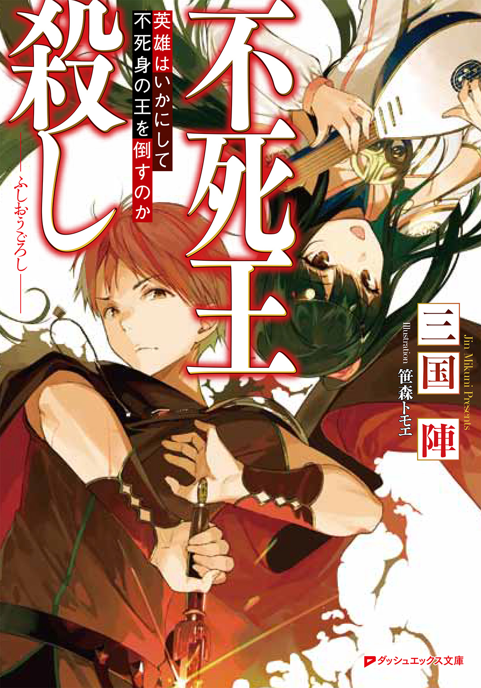
この本は縦書きでレイアウトされています。
また、ご覧になる機種により、表示の差が認められることがあります。
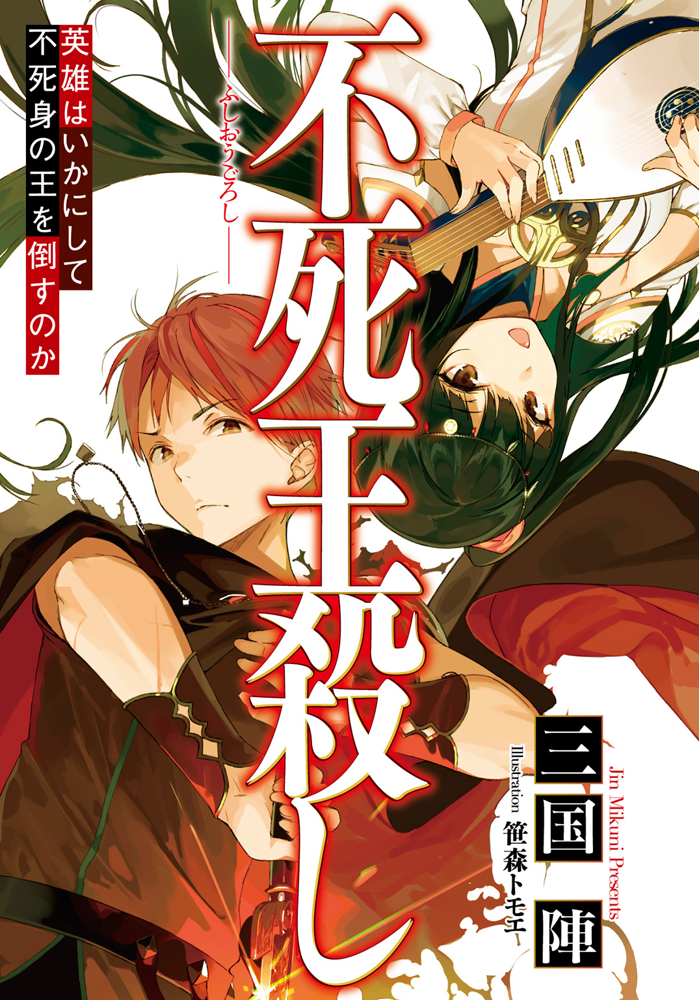
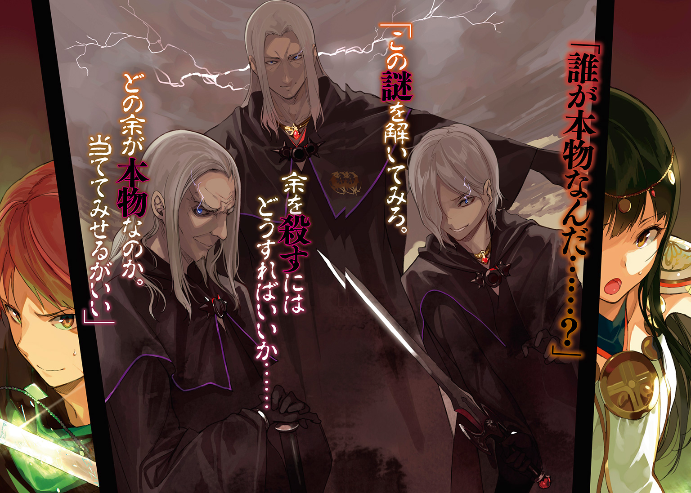
 ダッシュエックス文庫DIGITAL
ダッシュエックス文庫DIGITAL
不死王殺し
英雄はいかにして不死身の王を倒すのか
三国 陣
序章 七本の聖剣を持つ男
故郷の土を踏んだ途端、荒廃の臭いが鼻をついた。草も、木々も、鳥も、街並みも......吹く風までもが、忌まわしい毒を含んでいるかのようだった。
何もかもが変わってしまっていた。
懐かしい面影を留めるのは、遠くの山の形や、道の曲がる角度ぐらいのものだ。街道沿いの建物は今にも崩れ落ちそうにボロボロで、商店には品物も並んでいない。
都の住人たちの顔も違っていた。何かに怯えたような狡っ辛い表情で、人目を避けるように物陰からこちらを伺っている。声を立てる者は誰もいない。
もの寂しい目抜き通りを歩きながら、オレは思った。
――支配する君主が替わってたったの七年。それだけでこんなに変わり果ててしまうものか。
かつてこの土地がセレニアと呼ばれていた頃には、この目抜き通りは実に賑やかで、清潔で、夜中まで人の往来が絶えることのないような場所だった。
威勢のいい呼び込みも、吟遊詩人の歌もあったし、休日ごとに大道芸人がこぞって集まっていた。
旅人も多かった。旅人相手の商売もさかんだった。
それが、どうだ。こうしてくたびれたマントを羽織って道を歩いていても、誰もオレを見向きもしない。
いや、見てはいるが、警戒しているのだ。
関わらない方がいいか、それとも密告したほうがいいか......そう考えているのが手に取るようにわかった。
「......ふん......」
がらんとした広小路のど真ん中を、オレは裂くように突っ切って歩いていく。
やがて王城が見えた。
優美な白い石造りの城塔に、禍々しい黒龍が絡みついている。毒龍グウェヌインの像であろう。まるで聖女を冒瀆する淫らな蛇のようだった。
「好き勝手にやりやがる」
オレは怒りを覚えた。〝麗しきセレニア〟の象徴であった王城を、こんなふうに虚仮にするとは......。
と、睨み上げながら歩いていると、オレの前に立ちふさがる者があった。
「今は労働の時間だぞッ。こんなところで何をしている!?」
図体のデカい男だった。幅も厚みもある。贅肉に覆われているが、筋肉も相当にあった。背丈はない。それを補うように、輿に乗って高い所でふんぞり返っていた。
輿を担いでいるのは、みすぼらしい身なりをした女奴隷たちだ。大勢の若い女たちが、細い腕を震わせながら、蒼い顔をして担ぎ棒を肩で支えていた。
「何だ、おまえは。何をじろじろ見ているッ。不遜だぞ！」
輿の上の男は、ギラギラ光る白銀の鎧を着込み、むやみやたらに鞭を振り回している。オレはため息をついた。
「......愛せねえな。こいつは実に、愛せねえ事態だ」
「おい、そこの小僧！ おまえに聞いているのだッ！」
ここで騒ぎを起こすのは得策じゃない。だが、だからといって見過ごしてはおけなかった。仕方がない。そういう性分なんだ。
「......一つ、頼みがある。今すぐそこから降りて、十秒以内にオレの前から消えてくれ。そうすれば多分、オレも貴様のことをすぐに忘れてしまえると思うんだ。どうだ？」
「あ？ ああ？ なんでおまえがおれさまにお願いなんかしてんだよ。意味がわからん。なんなんだ、おまえ？ というか、誰が質問していいと言った？ 立場を間違えるな、質問してんのは、このおれさまだッ！」
心の底から親切で言ったのだが、こういうときに限って通じない相手に当たるものだ。どうしようもない。
「だいたい、このおれさまを誰だと――」
「十秒経った」
オレは跳んだ。地を蹴り、マントを翻して空を切る。高く――高く跳び、輿に乗った男の頭上まで飛び上がった。
男がポカンとオレを見上げる。
その顔面を、オレはブーツの底で思いっきり蹴飛ばした。
スカーン、と気持ちのいい音。
「――ンゴッ!?」
丸い巨体が吹っ飛んでいく。
輿から落ち、ゴロゴロと石畳を転がって、盛大に埃を巻き上げながら建物に突っ込んだ。もとから半壊していた建物が崩れて、浴びせかかるように瓦礫が落ちてくる。
オレは静かに地面に降り立った。
瓦礫の山に埋まった男が、むくりと起き上がる。
激怒していた。
「おまえ......後悔するぞ。この〝奴隷頭〟ヌマーンさまを不快にさせたんだからな」
ヌマーンとかいうらしい、図体のデカい鎧の男が、突如叫びを放った。
「ぬああぁアアアアーッ！」
瓦礫が吹き飛び、ヌマーンの怒れる両腕が天を突いた。筋肉がふくれあがり、白銀の鎧が中からちぎれ飛んでいく。
「ククククク......」
こめかみに血管を浮き出させ、ヌマーンは笑った。
「澄ました顔しやがって、クソッタレ小僧め。生きたまま内臓を引きちぎって、みっともなく命乞いをさせてやる。......奴隷ども！ 何をボケッとしてる、さっさとこいつを捕らえろ！ 半殺しにして手足の腱を切れ！」
ヌマーンが命じると、輿を担いでいた女奴隷たちが粗末な剣を抜いた。血色の悪い、今にも倒れそうな顔をして、ふらついた足取りでオレを取り囲む。
オレは彼女たちの目を見た。
......空虚な瞳だった。
刺すような悲しみがオレの胸を突く。
――なぜ、彼女たちはこんな屑みたいな男の命令に従うのだろう。
決まっていた。そうするしか生きる道がなかったのだ。こんな、死んだ方がマシみたいな地獄の街で、それでもなんとか生き抜こうとすれば、服従するより他に方法がなかった。
彼女たちが悪いわけじゃない。悪いとしたら......不死王におめおめと征服されてしまった、セレニア王国が悪い。簡単に自分の国を滅ぼされやがった、セレニアの王族が悪い――つまり、このオレが。
「ハッ。〝奴隷頭〟か。立派なものだ。......どこへ出しても恥ずかしくない、立派なゴミクズだよ、貴様は」
「クハッ。身分をわきまえて口を利け、バカが！」
女奴隷たちが剣を振り回し、一斉に襲いかかってくる。震える手で握った兇刃を、オレは足捌きで躱した。
一人ずつ丁寧に手首を打ち、あるいは足払いを掛けて剣を落とさせていく。
全員をあしらうのも訳はなかった。
「チッ。役に立たん。これだから女は！」
ヌマーンが吐き捨てる。
オレは石畳の上から剣を拾い上げ、ヌマーンに向けた。
「お？ なんだそれは」
ヌマーンが嗤った。
「まさかそんなナマクラが、おれさまに通じると思ってるのか？ おまえ、本当におれさまのことを知らないみたいだな......。教えてやろう。このヌマーンさまはな、不死王陛下より〝毒龍の祝福〟を分け与えられた、四人の〝毒龍騎士〟の一人なのだ！」
「ほう。そうか」
オレは踏み込み、剣を薙ぎ払った。
横に切り裂く鋭い斬撃を、しかしヌマーンは、うるさそうに手で打ち払う。
「......!?」
オレは訝しみ、さらに数度打ち込んだ。ヌマーンは意にも介さず、ついには刃を素手でつかんで止めてみせた。
「効かないと言ってるだろうが。おれさまの話が途中だ」
パキン、と軽い音がして剣が折れる。ヌマーンが片手で刃を折り取ったのだ。
「おれさまはな、武器では傷つけられないのだ。これが〝毒龍の祝福〟だ。不死王陛下の持つ御力の一つ、〝傲岸なる無敵〟の能力を、おれさまは分け与えられている。わかるか？ んっん～、わっかるかな～？ つまり、おれさまは不死身なんだよ！ どんなことをしても、おまえはおれさまには勝てないッ！」
「〈光の三神〉に聖別された剣でもない限り......か？」
オレは折れた剣を投げ捨てる。
「そう！ よく知ってるな！ だが都合よく聖剣が出てくる程、世の中甘くないぞぉっ!?」
ヌマーンが両拳を組み、振り上げる。丸太じみた腕が、オレを粉砕すべく襲いかかってきた。
ブオン、と風を巻くほどの打撃。
すんでのところで、オレは後ろに躱した。ヌマーンの拳が石畳を叩き割り、轟然と埃を巻き上げる。すさまじい馬鹿力だ。
「クハハ......死ねッ！」
ヌマーンが毒煙を吐いた。文字通りの意味だ。やつは、口から毒々しい紫色の煙を吐いたのだ。
煙は空中をもくもくと漂い、重く沈むように広がって、地表を這っていく。それは石をも蝕み、腐らせる猛毒の煙だった。
「〝腐蝕の激毒〟！ これが不死王陛下より賜ったもう一つの〝祝福〟だぁッ！」
「......ッ、貴様......!?」
毒煙は無差別に拡散しつつあった。このままではオレのみならず、周囲の女奴隷たちをも巻き込んでしまう。ヌマーンは、彼女たちの命などまったく意に介していないのだ。
「ゴミクズめ、人の命をなんだと......！」
「奴隷は人じゃねえ！ モノだ！ ヒャハハ！」
紫色の煙に触れた箇所から、石畳が黒く変色していく。地面が焼けて泡立ち、シュウシュウと音を立てる。毒龍の毒は、肉を溶かし、骨を崩れさせる地上最悪の汚染物質だ。触れただけでも命に関わる。
無数の蛇のようにのたくるその毒煙が、オレのブーツの爪先近くまで迫ってきていた。
「さあどうする、どうする小僧？ もう逃げ場はないぞぉ!?」
オレはじり、と退き、マントを翻した。
背に女奴隷たちをかばい、すっくと立つ。
「......愛せねえな......」
腰に手をやる。
〝鞘〟を引っ張り出した。
開閉蓋の付いた、長くて四角い、まるで楽器入れの箱のような鞘だ。通常のものと違って、剣の柄頭まですっぽりと覆うような形になっている。
オレは親指で、鞘の蓋を軽くはじいた。
蝶番がカパッと開く。滑り出すように剣の握りが出現する。
オレは柄を持ち、スラリと抜いた。
「んっ？ それは......ま、まさか」
「〝聖女ガリエルの宝剣〟」
純白の刀身を持つ、刃のない長剣だった。切っ先も丸く、特殊な形状をしている。
これは、斬るための剣ではない。
〝浄化〟の力を持つ聖剣。毒を殺す剣だ。
「――浄めろ、〝聖女〟よ！」
オレの右手が長剣を一閃すると、まばゆい輝きがあふれた。
柔らかな白光がドス黒い毒煙を切り裂き、爽やかな風のように吹き消していく。それはまさに光の神々の加護、愛と調和の神スヴェロスの奇跡だった。
ヌマーンがたじろぐ。
「ど、どうしておまえごときが......聖剣をぉ!? そんなバカなぁッ!?」
「なぜかって？ 対策をしていたからだ」
不死王が毒を操ることは知っていた。聖別された武器しか通用しないことも、オレにとっては既にわかっていたことだった。
だからオレは、七年かけて七本の聖剣を集めた。
不死王ザハリアーシュを斃すために。
「ちょうどいい。貴様で試させてもらおう。確か、不死王と同じ能力を持っているんだったな？」
「ぐ、ぐぬ......ッ！」
ヌマーンは、苦し紛れに毒煙を大量に吐きだしてきた。オレは〝聖女ガリエルの宝剣〟を縦横に振るい、すべての毒素を消し去っていく。
しかしその隙に、ヌマーンは逃走に移っていた。〝腐蝕の激毒〟を煙幕に使って、恥ずかしげもなく背を向けて逃げ出していたのだ。
「逃がさん」
オレは例の〝鞘〟の蓋を開け、逆手でもう一本の聖剣を取り出した。――先刻と同じ鞘から？ その通り。この鞘は特別製だ。オレの七本の聖剣は、すべてこの鞘に納まっている。
「機剣〝クーガの指〟」
その剣は、歯車をはめこんだ護拳と蛇腹状の刀身を持つ、機械仕掛けの細剣だった。
智と公正の神にして技術と工芸を司る神、クーガの祝福を得た聖剣である。
「――閃ッ！」
オレは遠ざかるヌマーンに向けて〝クーガの指〟を突き出す。
すると、細剣の刀身が伸びた。
護拳の歯車が猛烈な勢いで回転し、蛇腹状の刀身がうねりながら宙を突き進んでいく。
ヌマーンを、捉えた。
「うぐぁッ!?」
膝を貫かれ、巨体が倒れ伏す。ヌマーンは痛みに転げ回り、仰向けになって周囲を見回した。
「お、おれさまが傷を!? クソッタレ小僧め......な、なんだ、この剣はぁッ!?」
細剣の先端はヌマーンの膝を貫いた上に、絡め取っていた。蛇腹状の刀身は伸縮自在にして、鞭のようにしなやかに曲がるのだ。
オレは〝クーガの指〟を左手につかんだまま、跳んだ。
今度は歯車を逆回転させ、刀身を縮めていく。縮める勢いで自分の身体を引っぱり、空中を駆けた。ヌマーンへ向けて、吸い込まれるように一直線に接近する。
「ひっ......く、くるなぁっ......！」
空中にいながらにして、オレは〝聖女ガリエルの宝剣〟を右手で納め、そして鞘から別の聖剣を抜いた。
今度は両手持ちの十字剣だ。
絢爛たる紫紺の束巻に、流麗な荊の鍔飾り。その刃は冷たく、濡れたようになめらかだ。思わず見とれるほどの業物だった。
「神々の御許へ行け――」
背を逸らして力をため、クレイモアの切っ先にすべてを乗せる。
必殺の突き。狙いは、喉。
――ガツッ......！
瞬間、ヌマーンの両手がその刀身をつかみ止めていた。
なんという馬鹿力だ。ぶっとい両腕に筋肉のコブが盛り上がり、わなわなと震えている。剣の切れ味の鋭さに、ヌマーンの十本の指はすっぱりと落ちていた。指から鮮血を吹き出しながらも、掌で剣を挟み止めている。
「ぬ、ぬ、ぬぬぬぬぅ......」
贅肉に覆われたヌマーンの喉に、十字剣の先端がわずかに食い込んでいた。髪の毛一筋ほどの裂傷。血がつうと流れる。
ヌマーンはギリギリと歯ぎしりしながら言った。
「こ、このまま、剣をへし折ってやる......！」
「無駄だ。この剣は〝冬薔薇〟。龍の鱗をも貫き、決して折れぬ剛剣」
オレは呼吸を整え、精神を集中した。
すると、オレの五体に刻まれたルーンの紋章が輝き、虹色の魔力をあふれさせる。
ルーンとは〝力ある文字〟。六柱の神々の言葉だ。その言葉がオレの肉体を奮い立たせ、猛獣のそれのごとく強化する。
オレは渾身の力で〝冬薔薇〟を押し込んでいった。
――ぐ、ぐ、ググ......。
と、わずかずつ刃が滑っていく。
ヌマーンがカッと両目を見開いた。
「〝獣骨のルーン〟......だと!? 強化呪紋まで......！」
「言っただろう、対策していると」
オレが五体に刻み込んだ紋章は、筋力や瞬発力などの身体能力を爆発的に高めるものだ。超人的な動きを可能にするが、持続時間は短い。
それでも充分だ。
効果が切れる前に、七本の聖剣を叩き込めばいい。それだけのことだった。
「お......おまえ、は......」
ヌマーンの両腕がぶるぶると震え出す。限界だ。
「......なに、も、の......」
口の端から泡を吹いている。血走った目に、死への恐怖を浮かべていた。だが慈悲の気持ちは一片も湧かない。生かしておく価値のない男だった。
「オレの名は、ドーン。不死なる王を殺す者だ」
――ドグシュ。
聖剣が喉を貫き、〝奴隷頭〟ヌマーンは絶命した。
オレが仕留めた〝毒龍騎士〟の、最初の一人だった。
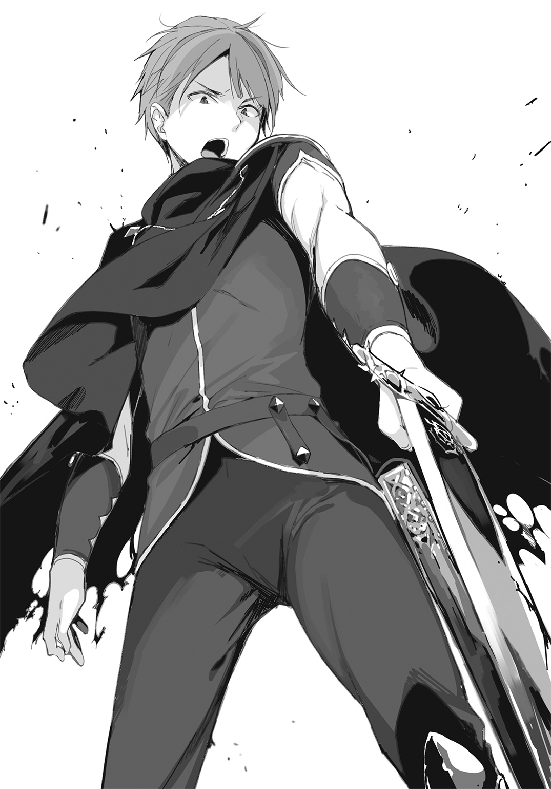
一章 セレニアの悲劇
昔――七年前までは、オレの実家の城には、立派な聖剣が飾ってあった。
謁見の間に使っていた大ホール、その玉座の後ろの壁に、その剣はまさに〝セレニア王の証〟として掲げられていたのだ。
オレは幼児の頃からそれを見上げて育った。
聖剣は普段、長くて四角い、蓋付きの箱みたいな鞘に入っていた。抜けば、それは美しい両手剣だった。
その日、父王が国宝の聖剣を壁から外し、手にとってこう仰った。
「ドーン。幾つになった」
父王が三男のオレに直接声を掛けるのは珍しいことだった。オレはちょっと緊張していた。
「はい！ 今日で十歳になります」
「そうか」
父王と二人の兄、それに母上と二人の姉も大ホールに集まっていた。ホールには王の家族だけがいた。それは特別な時間だった。
穏やかな時を過ごした......という話じゃない。その逆だ。
家族が集まっていたのは、セレニア王国に危機が迫り、父王がそれに立ち向かわなければならなかったからだ。
「その聖剣をお持ちになるのですか？ このたびの会談に......」
上の姉が不安げに言った。父王が答えた。
「そのつもりだ。不死王には聖別された武器以外は通用せぬというからな。ひとまず、すぐに使うつもりはないが......〝秋に準備を怠る者は冬を越せぬ〟と諺にもいう」
父王は鞘から聖剣をスラリと抜いた。
輝くような赤銅色の刃を持った剣だった。柄には大きな碧玉が飾られている。伝説によれば、セレニアを建国した先祖が〈光の三神〉に賜ったものだという。
父王はそれを燭台の明りにかざして確かめると、自らの腰の、別の鞘に納めた。
そして例の四角い鞘の蓋をいったん閉め、また開けると、さらにもう一本聖剣を抜き出す。
「えっ」
オレは驚いた。だって、普通一つの鞘には一本の剣しか納まらないはずだろう？ ところが、同じ鞘から二本目の剣が出てきたのだ。まるで手品だった。
ポカンと口を開けたオレに、父王は笑みを浮かべて言った。
「これは〝ロゾヴィックの自在鞘〟と言ってな。大きさに関わらず、何本でも剣を納めておけるのだ。貴重な古代の魔法具の一つだ」
二本目の剣も、一本目と同じ形の聖剣だった。柄には碧玉ではなく紅玉が飾られている。
「デミアン」
父王は王太子――長男の名を呼び、剣の柄を上にして手渡した。一番上の兄デミアンは、蒼ざめた表情をしてそれを受け取った。
「使わなくて済むことを願っております。臆病者と思わないでください、陛下。平和を愛しているのです」
デミアン兄の言葉に父王も頷いた。同じ気持ちだったのだろう。威厳のある皺だらけの顔に、深い苦悩と覚悟を顕わしていた。
「クラウス」
父王は三本目の聖剣を抜いた。宝石は翠玉である。それは二番目の兄、クラウスに渡された。
これもまた、同じ形の聖剣だ。
それぞれ〝智の剣〟〝愛の剣〟〝勇気の剣〟という。智と公正の神クーガ、愛と調和の神スヴェロス、勇気と希望の神ピィアの加護を各々受けているとされる。
この三本の聖剣はセレニアの至宝だった。
それが一つの鞘にまとめて入っていたとは、この時までオレは知らなかった。すごい秘密を知ってしまった......と胸がときめいたものだ。
ただこの時オレが、ちょっとがっかりしていたのも事実だった。
なぜなら聖剣は三本しかない。オレの分はないんだな、そりゃそうか――そんなふうに思ってしまったのだ。
仕方がない。上の兄たちとは歳が離れていた。デミアン兄は、その時確か、二十八か。クラウス兄は二十歳になったばかりだった。間に十五と十四の姉がいて、末っ子がオレだ。
その日が十歳の誕生日。そんなに幼くては、大事な外交の席に聖剣を預けて連れて行くわけにはいかない。
――と、そのときだ。
父王がオレの名を呼んだ。
「ドーン。これを持て」
「は......はい！」
オレはドキッとして背筋を伸ばした。
父王の前に立つと、オレは〝鞘〟を渡された。貴重な宝物だと説明された、あの〝ロゾヴィックの自在鞘〟だ。
父王は言った。
「十歳といえば立派に男の一員だ。おまえはこの鞘とともに、我が城の留守を預かれ。余とデミアン、クラウスのいない時、母と姉たちを護れる男はおまえしかおらぬ。しかと頼んだぞ」
「はい！」
オレは勢い込んで返事をした。父王は淡く微笑んだ。
「デミアン、クラウス。そしてドーンよ。三本の聖剣はいずれ鞘に戻さねばならぬ。なぜならそれは王権の象徴であると同時に、セレニアの平和の証だからだ。我らは剣を持って行き、持ち帰って、三本とも無事にこの鞘に戻す。......きっと、必ず、そうするのだ。わかったな」
オレは上の兄たちと一緒になって、真剣な顔で頷いた。姉上たちと母上は手を握り合い、息を詰めて見守っていた。
それが七年前――オレの誕生日のことだ。
午後、オレは城郭内の丘の上に登り、うんと背伸びをして遠くを眺めていた。城門から伸びる目抜き通りに、錚々たる騎士たちの軍列が見えた。
よく晴れた日だった。鮮やかな旗が街じゅうにたなびき、まるで祭りのパレードのようだ。
「おおーっ！ おい、すごいぞ、シメオン！ こんな盛大な行列、見たことねえ！」
「うん、そうだね。もしかして戦争になっちゃうのかな......。嫌だな。ボク、怖い」
ローブで顔を隠したシメオンが、オレの背中に隠れるようにして言った。そうすると、オレと同じ十歳にしては小柄な身体が、さらに小さく見える。
シメオンは父王に仕える大臣の子で、オレの幼馴染みだった。玉蹴り遊びするようになる頃から、しょっちゅうつるんで遊んだ仲だ。
「大丈夫！ 父王と兄上たちがいる。なんの問題も起こらないよ」
オレは父王から預かった〝自在鞘〟を誇らしげに抱えて、そう言った。
「そうだといいけど......」
「心配性だなあ、シメオンは。イクシニアの〝賢き女王〟も、ダレイアの〝赤髭王〟だっている。この上、何が不安だ？」
「......それは......」
西の国境へ向かう一団には、セレニアだけでなく、他国の王族も加わっていた。ピィア小大陸を構成する四ヶ国――セレニア、イクシニア、ダレイア、ミロスのそれぞれの代表者が、西方からの来訪者を出迎えるべく集結していたのだ。
出迎えるといっても、もちろん歓迎したいわけではなかった。
西のノイ＝アプト大陸を瞬く間に征服した、〝翳りの帝国〟ペルネケス......。
その元首、〝不死王〟と渾名されるザハリアーシュ皇帝は、邪悪な〈闇の三神〉を信奉し、〝毒龍グウェヌイン〟を守護者と崇める邪教徒だ。
しかも不死王の軍勢は、セレニアとの国境ギリギリまで何の断りもなく接近していた。これは、侵略の意図があると見なされてもおかしくない態度だ。
「四ヶ国首脳が集まるからこそ、心配だって部分もあるんだよ......」
「だから、大丈夫だって！ 父王も兄上たちも、戦をするわけじゃないって仰ってた。戦争にならないように話をつけに行くんだって」
もし、ザハリアーシュがノイ＝アプト大陸のみならず、このピィア小大陸にまで魔手を伸ばそうとするなら......その時は、四つの国家が一丸となって抵抗するぞ、と、そのような意思を表明するための会談だった。
だから、いかに本気かを見せ付けるために、こうやって軍列を率い、あえて盛大に示威行動しているのだ。
「父王もどうせなら、不死王なんて悪い奴、やっつけちゃえばいいのにな！」
「そんな......無理だよ」
弱気なことを言うシメオンに、オレはムキになって言い返した。
「なんだよ！ 父王がザハ......なんとかに、負けるって言うのかよ!?」
「そ、そうじゃないけど......」
気の弱いシメオンが、このときは珍しくオレに反論してきた。
「いい、ドーン？ 不死王は、死なないから、〝不死〟王っていうんだよ。不死身なんだよ？ おまけに、すっ......ごく怖ろしい存在なんだよ」
オレは唇を尖らせて言った。
「だから、何なんだよ。だいたい、どう怖いっていうんだよ」
「えっと、だから、それは......」
「えっ？ 言ってみろよ」
シメオンはローブの前をかき合わせて、ぶるっと身を振るわせた。
「毒を吐くんだって」
「毒？」
「土を腐らせて、何年も作物を実らなくさせちゃうんだって。それだけじゃないんだよ。その土を触っただけで、家畜も人も、肉が溶けて死んでしまうんだって。不死王ザハリアーシュの毒で皆殺しにされた町や村が、西大陸には星の数ほどもあるって」
さも怖ろしげに、シメオンは声を小さくした。
「毒を帯びた遺体に触れても、それだけでやられてしまうって......。たとえばね、ある母親が毒に中たって倒れたとするじゃない。そしたらその子どもが、心配してお母さんにすがりつくよね？ けど、そうしたら、その子まで肉が溶けて死んじゃうんだって......。あぁ......もしセレニアにそんな猛毒をばらまかれたら......」
オレはハン、と鼻で笑った。
「そんな毒があるもんかよ、バカバカしい。シメオンも、インチキな噂を簡単に信じるなよな。それはペルネケス帝国がアレしてるアレだよ、りゅ、リュー、リューゲンヒゴだよ」
クラウス兄上の言い方を真似して、オレはどうだ、という顔をしてやった。
「流言飛語なんかじゃないよ。これは出所の確かな情報だよ」
「だったらさ、もし不死王が本当にそんな毒を口から吐くんならさ、なんで不死王自身はその毒にやられないんだよ？ おかしいじゃないか」
「......それは......なんでだろう......？」
そんなふうにオレとシメオンが言い合いをしていると、背後の草むら辺りから、クスクス笑う声が聞こえてきた。
「ぷっ......あははっ！ うふふ......く、くく......」
オレとシメオンが振り返って茂みを見つめる。
すると、西洋黄楊の植え込みの裏から、ごそごそと出てくる人影。
「ご、ごめんなさ......ツボに入っちゃって......ぷくく、あっははははっ！」
いったい何がそんなに可笑しかったのか、こらえきれないように腹を抱えて笑う可憐な少女が、そこにいた。
「フェリシテ！」
「姫さま！」
オレたちは彼女のことをよく知っていた。都合があり偶にしか会えないが、大事な友人だ。
セレニアの隣国、イクシニアの姫、フェリシテ。イクシニアは女王制の国だから、いずれ国を継ぐ王太子でもあった。
「ごきげんよう、二人とも」
フェリシテはようやく笑いの発作から立ち直って、涙をにじませながら膝を曲げる。豪奢な金髪と細い手足を持った、つくりものめいているほど嫋やかな美姫だった。
オレは思わず言った。
「フェリシテ、おまえ、なんでこんなところにいるんだよ！」
「あら。せっかく婚約者が顔を見せに来たのに、それはないんじゃないの、ドーン王子？」
婚約者、と言われてオレは閉口した。
そうだ。実はオレは、生まれた時からいずれフェリシテの家に婿入りすることが決まっていた。もちろん、親同士が......王族同士が、政治の都合で決めた約束だ。だからといって別に嫌ではなかったのだが、その、なんだ。気恥ずかしかったのだ。
「そ、そうじゃなくてさ！ フェリシテは、あっちの行列にいるはずじゃないのかよ!?」
オレは城下の目抜き通りを指さした。フェリシテは王太子だから、今回の五ヶ国会談に女王とともに参加するはずだった。不死王が条件をつけていたのだ。〝四ヶ国の王と王太子が揃うならば会談に応じる〟と。
「ああ、そうなんだけど......待つの飽きちゃった」
と、けろりとして言うフェリシテ。
「だって、行列がとっても長いんだもん。今ようやくセレニアの列が終わるぐらいでしょ？ これからダレイアの行列がずーっと続いて、その後ようやく、うちの国だから。あたしの馬車が出るまで、あと何時間もかかるの」
「城の控え室でお待ちになれば......」
「イヤ。退屈なの」
シメオンの言葉をバッサリと切り捨て、十一歳のお姫さまらしいワガママさで、フェリシテはのたまった。
「ドーン、シメオン。それまで遊びましょ！ ねっ？」
期待を込めて、キラキラと瞳を輝かせるフェリシテ。
オレとシメオンは顔を見合わせる。......が、さほど悩みはしなかった。
「まっ、いいか！」
「ドーンがそう言うなら」
フェリシテの満面の笑顔が弾ける。
「やったあ！ ね、何して遊ぶっ？」
世界の情勢やら、大人の都合なんか、あの時は関係なかった。オレたちはただ単に友達同士で......だったら集まれば一緒に遊ぶのが普通ってものだろうと思っていた。
オレたちはあの頃、それに何の疑問も持たずにいられたのだ。
フェリシテはけん玉が得意だった。けん玉ってのはもちろん、シカの角と木でできた玉を紐で結んだ、あの玩具だ。
把手に細工彫りと本物の宝石をあしらった、すごいけん玉をフェリシテは持っていて、それでいくつも技を見せてくれた。
親指で玉をはじいて落とし、糸の先で回転させたままフワッと浮かせて刺し直す技とか、玉を持って把手を振り回し、その穴にスポッと角をはめる技とか、本当にみごとなものだった。
「おー！ すっげえ！」
「すごい、姫さますごい！」
オレとシメオンが拍手を送ると、フェリシテは澄まし顔で言った。
「こんなの簡単。本当にすごいのはね、把手の上に玉を乗せて、止めるの。ピタッ、って」
「なんだよそれ。どういうことだよ」
「だから、こう、持つとこを横にして、玉を跳ね上げて、落ちてくるところを柄の部分でスッて掬うように止めるの」
「丸い棒に丸い玉乗っけて......って、受け止められるわけないだろ」
「そうなの。普通は無理よね。でもお母さまはできるの。すごいでしょ」
オレは首をひねった。試しに、自分のけん玉で言われたとおりやってみるが、できない。把手に玉がぶつかって跳ねるだけだ。意味がわからなかった。
「......こう？」
隣でシメオンがやってみせる。シメオンは玉の勢いを巧妙に殺して、一瞬くらいは把手に玉を乗せていた。けど、すぐに左右にフラフラして玉を落としてしまう。
「そうそう、そんな感じ！ シメオン、すごいね！」
「えへへ......」
フェリシテが笑顔になって拍手し、シメオンは相好を崩した。オレは悔しかった。
「くそう......シメオンのくせに。勝ったと思うなよ！」
「なあに、それ。ドーンかっこわるっ」
「う......」
オレはこういうチマチマした遊びが苦手だった。シメオンは逆にこの手のが得意で、真剣な顔で技を練習している。
「......あ、落ちた！ うー、難しいね、これ」
「あのね、シメオン。こうやって最初から玉を上に載せておいてね、それで練習するといいよ。私も時々やってるの。こっそり〝極意〟を習得して、お母さまを驚かせちゃおうと思って！」
「なるほどね。〝極意〟っていうんだ、この技。〝極意〟の練習だから〝特訓〟って感じ？」
「いいね、それ！ 〝特訓〟、みんなでやろ！」
「おし、誰が一番長く乗っけてられるか勝負な」
オレは勢い込んで言った。根拠はないが負けるつもりはなかった。
「そうだ、負けたやつはなんか罰を受けることにしようぜ！ その方が燃えるだろ」
「ドーン、それは無謀だよ」
シメオンが冷静に言った。
「無謀よね」
フェリシテも言う。
「何だよ！ 愛せねえこと言う奴らだな！ やってみるまでわかんねーだろうが！ 言っとくけど本気出すからな！ そしたらオレがブッチギリで勝つからな！」
「不可能だと思う......」
「ドーンじゃ無理よねー」
二人そろって余裕の表情だ。オレは頭にきた。
「オレはな。無理って言われると逆にやってやりたくなる性分なんだよ！ ほら、二人とも準備しろよ！ 目に物見せてやる！」
「しょうがないわねー。負けたら馬になって丘を一周してもらうからね。いい、ドーン？」
フェリシテが小悪魔のように微笑む。シメオンがハァ、とため息をついた。
「やらいでか！ シメオン、手加減したら絶交だからな！」
「わかってる。......三、二、一でいくよ。さん、にー、......」
結果を言う必要があるか？
――惨敗だったよ。
はい、とフェリシテがあの豪華なけん玉を手渡した。
「あげる。大事にしてね」
「い、いいの？」
シメオンにだ。オレはというと、その時フェリシテの尻の下で這いつくばって馬になっていた。オレは約束は守る男だ。ちゃんと丘も一周した。
「姫さま、そ、その、これは、高価な......じゃなくて、大切なものなんじゃ......」
シメオンが宝石の嵌まったけん玉をこわごわと撫でる。
「うん。でも、いいの。あたしはもう一組持ってるし。シメオンはドーンと違って、見所があるからね！」
「うるせえ......っていうか、もうそろそろ降りろよ！ 重てえんだよ！」
「まあ！ 淑女に向かってなんてことを」
「ぐえっ」
フェリシテがオレの背中をわざと蹴りつけて飛び降りる。
まだまだ日の落ちるまでは時間があった。さて、次は何して遊ぼうか......そんな気分になりかけたときだ。
「姫さま。そろそろお時間ですよ」
シメオンが背伸びして遠くを見ていた。目抜き通りの方だ。騎士たちの行進はまだ続いていた。ダレイアの行列がようやく終わりかけているところだった。
「あ、そうね。そろそろね」
「もうそんな時間なのか？ まだいいだろ？」
「ううん、戻らなきゃ......。ドーン、シメオン、今日はどうもありがとう」
「こちらこそ。けん玉、ボクの宝物にします」
「おう！ 今度会うまでに練習しとくからな！ 次はオレが勝つ！」
フェリシテはくすくす恥ずかしそうに笑った。
「楽しみにしてる。またね、ドーン」
「ああ！ 絶対、また勝負しろよな！ 約束だぞ」
「うん。じゃあね」
いつもの別れの言葉だった。
――またね。――じゃあね。
それが最後になるだなんて、誰が思うだろう。
不死王を交えた会談は、国境のテナという小さな街で行われていた。
父王たちが帰ってくるまで一週間はかかるという話だった。だが、変事は四日を俟たずして飛び込んできた。
「母上！ 母上はどちらにっ!?」
早馬を駆ってきたクラウス兄は、殺気立っていた。甲冑も脱がずに大ホールに踏み入り、乱れた髪をそのままに叫ぶ。
「......ザハリアーシュのクソッタレめッ！ 母上、いずこにおられる！ 母上ーッ！」
「クラウス兄上！」
オレは駆け寄った。
「いったい何が......？」
「......ドーン」
クラウス兄は沈痛な表情で立ち尽くしていた。その目はこちらを見ているようでいて、何も映してはいなかった。まるで、クラウス兄の代わりに幽霊がそこに立っているかのようだ。
オレは、そんなクラウス兄を初めて見た。いつだって落ち着いていて、優しくて、利発で、誰より思慮深いのがクラウス兄だった。
何かが起こったのだ。
クラウス兄がこんなふうになるほどの、何かが。
「ドーン、落ち着いて聞いてくれ。大事なことだ。......父上と兄上が亡くなった」
「え......」
「本当だ。亡くなられたのだ」
クラウス兄はしばし沈黙した。噓ですよね、と訊ね返したかったが、できなかった。兄上が本当だと言ったからには、本当なのだ。王族はそういった件で冗談を言ったりしない。
オレはごくりと唾を呑み込んだ。
「殺された――の、ですか」
「そうだ。父王は毒で死んだ。ザハリアーシュが卑劣にも酒に毒を混ぜていたのだ」
セレニア王だけでなく、イクシニア、ダレイア、ミロスの王たちも同じく毒酒で殺されていた。それも、友好の杯――古来よりどの大陸でも行われてきた、古い乾盃の儀式に使う酒に、毒が混入されたのだという。
四ヶ国の君主たちが油断をしたわけではない。〝ザハリアーシュはどんな手を使ってくるかわからぬ〟と、父王たちは警戒に警戒を重ねていた。
食べ物はもちろん、杯も自ら持参したものしか手を触れなかった。乾盃の酒は同じデカンタから注ぎ、不死王が先に唇をつけたのを見てから、ようやく四人の王は手元の酒を口にした。
「不死王を含めた五人全員が、同じものを飲んだはずだ。だというのに......父王たちは血を吐いて倒れ、ザハリアーシュは平然としていた」
「な......なぜ？」
「おそらく、不死王には毒が効かないのだ。毒龍グウェヌインとやらへの信仰によるものかもしれない」
その直後、謀られたと知ったミロス国の王太子が、不死王に斬りかかった。ダレイアの王子もだ。しかし、不死王には剣は通じなかった。
「〈光の三神〉によって聖別された武器しかやつには通じない。そこで、聖剣を持つデミアン兄上がザハリアーシュに立ち向かったのだ」
デミアン兄は、見かけによらず達人級の腕前をもつ剣士だった。いつもは小心な態度でおどおどしているのに、いざとなればとてつもなく頼りになる男なのだ。
「そ......それで？」
「兄上は不死王と差し違えられた。相討ちだ」
デミアン兄とザハリアーシュの一騎討ちは熾烈を極めたらしい。凄まじい戦いだった、とクラウス兄は語った。
「わたしも加勢しようかと思ったが、次元が違いすぎた。余人が入っていけるような戦いではなかった......もし助太刀していたとしても、足手まといにしかならなかっただろう。いや、それ以前に足がすくんで動かなかったのだが」
不死王は毒の煙を操り、空中を自在に浮遊し、戦意をくじく怖ろしい咆哮を放ったという。その声を聞くだけで目眩や恐怖を喚起する、忌まわしい龍の咆哮だ。さらに、一声で金属すら破砕する怪音波を発し、鎧や剣をこなごなにした、とも。
「それだけではない。ザハリアーシュは人の心を読むのだ」
「心を......読む？」
「そうだ。やつ自身がそう言った。〝余にはあらゆる人間の心が読める。貴様ら四ヶ国の思惑など、すべてわかっている。互いに裏切りを疑いながら我が帝国に楯突こうなど、片腹痛い〟と。そう言って不死王は、毒酒を飲みながら我々を嘲笑ったのだ」
「互いに裏切りを疑いながら......」
「そうだ。事実そのとおりだったのだ。父王もデミアン兄上も、そしてわたしも、他の三ヶ国を疑っていた。我が国と団結するふりをして、裏ではペルネケス帝国と通じているのでは......と」
「しかし、それは......そんなこと、口から出任せでは。それか、ただの予想を口にしたのかも。そう、きっとそうですよ」
オレが必死に知恵を絞って言った反論に、クラウス兄上は首を振った。
「そうではない。やつは本当に心を読むのだ。なぜなら......なぜなら、不死王はわたしに向かって言ったのだ。〝今、おまえはこう思っただろう。――やはり内通者か、と。違うぞ、そんな面倒なことをするわけがないではないか。貴様らごとき、弱小の国々に！〟まさに、その時、そのままの言い回しで、わたしはそう考えたのだ。〝やはり内通者か〟と......」
クラウス兄の言葉でなければ、オレとて一笑に付したかもしれない。そんな......そんな馬鹿げた、とてつもない悪が存在するはずがないと。
「証拠は他にもある。やつはわたしとデミアン兄、父王が聖剣を準備してきていることを知っていた。配下の騎士にすら教えていなかったことなのに......。それだけではない。今まで誰も見破れなかった、デミアン兄の初撃の剣筋。不死王はあれをも読み、やすやすと躱してみせた。あまつさえ、わたしとイクシニア女王の一夜限りの密通のことさえ知っていた......」
クラウス兄がフェリシテの母親と密通していたなどというのは初耳だった。本人たち以外、ピィア小大陸の誰も知らなかった秘密のはずだ。もし誰かに漏れていたら、国が一つ二つひっくり返るような醜聞になっていたことだろう。
「とにかく、事実なのだ。不死王は読心能力を持っている。そして、デミアン兄上はそんな化け物をも斃したのだ。自分の命と引き替えに......」
ザハリアーシュは父王の遺体から聖剣を奪い、デミアン兄と切り結んだ。
剣の腕はデミアン兄が優っていたが、不死王には数々の異能がある。苦戦を強いられたデミアン兄は、ついにザハリアーシュの毒を受けた。歴戦の戦士であるデミアン兄は、〝この上は自分も長くない〟と悟ったに違いなかった。
そこで、不死王を道連れにすることに決めた。
デミアン兄はあえて己の腹に剣を貫かせ、不死王に組み付いたのだという。そして死に際の一刀で、ザハリアーシュ皇帝の首を刎ねた。
「間違いのないことだ。ザハリアーシュは死んだ。デミアン兄上が討ち取ったのだ......」
クラウス兄が語り終わった。
オレは何も言えずに茫然としていた。それまでオレが生きてきた世界とはまったく違う、あまりにも唐突で、理解の及ばないぐらい壮絶な話だった。
この時、オレにはもっと他に聞くべきことがあったかもしれない。たとえば――婚約者であるフェリシテはどうなったのか、とか。だがそれよりも家族の死が......敬愛する父王と兄上の最期が衝撃的で、そんな余裕がなかった。
通路から女の声がする。母上と姉上たちが大ホールへやってくるところだった。王の妻と娘たちは、何が起こったのかをおぼろげに察しているようだった。
「これからのことを考えなければいけない。起きてしまったことよりも、これからどうするかということを」
クラウス兄はそう言った。この上なく思慮深い兄だった。きっと、オレが落ち込んでしまわないように、さりげなく気を遣っていたのだろう。
「ドーン、これからはわたしたち二人だ。わたしたち二人が、セレニア王国を背負っていかなければならないんだよ」
しかし、そうはならなかった。
そうはならなかったのだ。
〝敵襲だ！〟と伝令が告げたのは、その直後だった。
クラウス兄は、即座に物見の城塔へ走った。オレもその背中を追った。
「まさか......」
クラウス兄は高い城塔の手すりに両手をつき、身を乗り出していた。カッと目を見開き、西の方角を睨んでいる。
「そんな......まさか......」
はっとした顔で、耳に手をやる。クラウス兄は遠くの音に耳を傾け......そして、驚愕した。
「いる」
西の空を見上げ、半狂乱で叫ぶ。
「聞こえる！ やつの声だ。やつの......不死王の放つ、〝忌まわしき龍の咆哮〟だ！」
その時、オレの耳にも聞こえてきた。
――......ォォォン......
という、地鳴りにも似た空気の震え。いまだかつて聞いたこともないような、不気味な獣の声のようだった。
そして間もなく街道の向こうから、黒い塊が現れた。
それは最初、小さなインクの染みのように見えた。国土という地図の上に落ちた、一滴のインクの染み。
黒い染みはやがて平たく広がり、じわじわと面積を広げた。地面が九割に黒が一割、地面が八に黒が二、いや地面七の黒三......。そしてついには、地平線までを真っ黒に埋め尽くすほどの、膨大な数の人馬の群れになった。
――〝翳りの帝国〟ペルネケスの大軍団だ。
「なぜだ......死んだはずだ！ 確かに！ わたしはこの目で見たんだ！ 聖剣で首を刎ねられたところを......！」
数万......あるいは数十万だったかもしれない。雲霞のごとき数の兵士を引き連れて、ペルネケス皇帝が進軍していた。燃え広がる炎のように――人体に回る致命的な劇毒のように。
集団の先頭――。
数十匹の軍馬に牽かせた巨大な戦車の上に、一人の男が腕を組んで直立していた。
微動だにせず前方を眺め、嗤っている。
「あ......れが......」
「そうだ。不死王ザハリアーシュ......なぜ、死んだはずの男が生きているッ!?」
遠く離れた物見の城塔からでも、やつの姿は凄まじく大きく見えた。背丈の問題ではない。圧倒的な存在感が、オレたちにそう見せていたのだ。
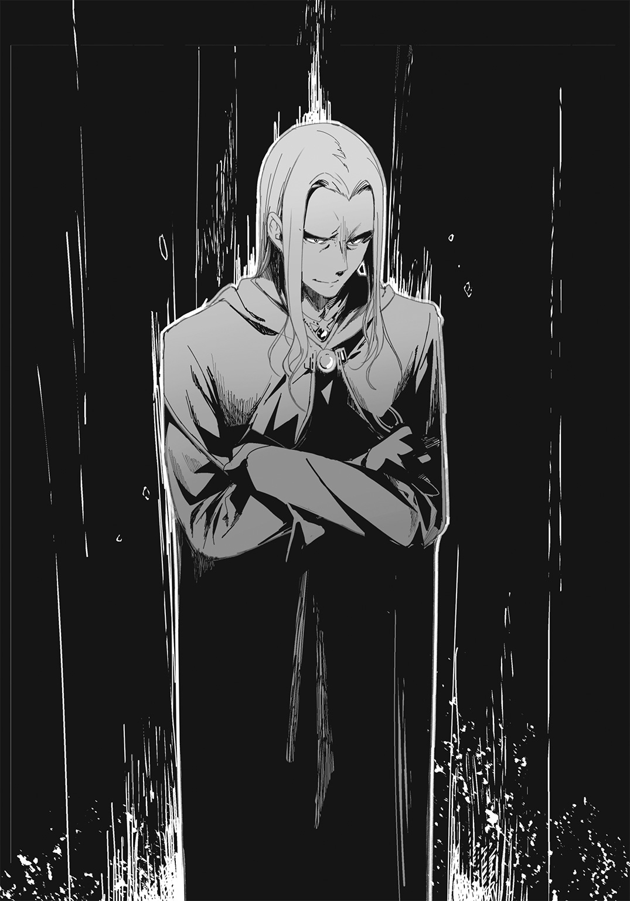
ザハリアーシュは鎧など必要としない。やつは軍装束ではなく、ゆったりとしたローブと王冠を身に纏っていた。
〝紫闇のローブ〟。〈闇の三神〉の最高位聖職者であることを意味するローブだ。不死王ザハリアーシュは、ペルネケス帝国の政治と軍事を一手に握る存在であると同時に、宗教的な指導者でもある。
その衣の胸元、赤い珠の首飾りの下に記された紋章は、西大陸において皇帝のみに許されたもの。紛れもなくその男がザハリアーシュ本人であることを証明していた。
「本当に......不死身、なのか......？」
手すりをつかんだクラウス兄の手が、わなわなと震えていた。いや、手だけではなく全身が、ガタガタと壊れた車輪のように小刻みに揺れている。蒼白な顔面はびっしょりと汗で濡れ、乱れた髪の毛が額に張り付いていた。
「おおお......！」
クラウス兄は両手を高く上げ、思い切り手すりに叩きつけた。次いで、自らの頭をも〝ガンッ！〟と叩きつける。
「あ......兄上......？」
「――ドーン。聞け」
クラウス兄はすっくと身を起こした。額から一筋血が垂れていたが、身体はもう震えていなかった。
「母上と姉上たちを連れて国外に脱出しろ。細かいことはスヴェロス神殿のエステル殿に取り計らってもらえ。いいな」
「オレも戦います」
「ドーン」
クラウス兄は腰の聖剣を握りしめ、オレを見下ろした。
「わたしはいざ国を背負う段になってみて、初めてわかったことがある。男には誰にでも〝命の懸けどころ〟というものがあるのだ。今日はわたしの番だ。おまえの番ではない」
オレの肩に手を置き、クラウス兄は言った。
「母上たちを頼むぞ」
「......イヤだ！」
オレはクラウス兄の手を振り払った。
「オレも戦う！ オレだって、オレだって......！」
クラウス兄の拳が振ってきた。
――ゴッ。
――ゴッ。ゴッ。ゴッ。
情け容赦のない鉄拳だった。思い返せば、クラウス兄に殴られたのはこの時が最初で最後だった気がする。
「オレ......だっ......て......」
渾身の力でオレは暴れた。脚を蹴り上げ、鞘を振り回した。
――ゴッ！
クラウス兄の拳が鳩尾に入った。息が詰まり、気が遠くなる。その隙に、クラウス兄は服の麻紐でオレを縛り上げてしまった。
「......グガッ、んぐぅ......や、イヤだッ！ クラウス兄上！」
「うるさい弟だな。静かにしていろ」
オレはクラウス兄の肩に担がれて、大ホールまで運搬された。
大ホールでは母上が佇んでいた。
玉座を見つめて、その肘掛けを愛しげに撫でている。取り乱した様子はなかった。
「来ましたか、クラウス」
「母上。母上もドーンと一緒にお逃げください」
母上は首を横に振った。
「おまえだけでは将軍たちをまとめられません。この母が後ろ盾になります」
「しかし」
「口答えは許しません。ドーンはシメオンに任せます。――シメオン」
母上が目線で呼ぶとシメオンが前に進み出た。シメオンは縛り上げられたオレを見て、戸惑った顔をしている。
「シメオン！ おい、紐をほどいてくれ！ シメオンっ！」
肩の上でバタバタ暴れるオレを、クラウス兄が床に転がした。
「やれやれ。――ドーン、いいかげんに聞き分けろ」
オレは納得しなかった。このままクラウス兄を行かせたら......もう、二度と会えないとわかっていたから。
母上も、父上も、みんないなくなってしまう。家族がバラバラになってしまう。それはオレにとっては、自分の死や王家の断絶よりも耐えがたいことだった。
「イヤだ......イヤだっ！ オレも......戦うんだ......ッ！」
「生き延びろ、ドーン。おまえさえ生きていれば......」
「頼みましたよ、シメオン」
クラウス兄と母上が足早に立ち去った。
「うぁぁああああああアアアア――――ッ！」
オレは泣きわめきながら転げ回った。歯を食いしばり、紐を引きちぎろうと全力を込める。芋虫のように這いずり回り、何かに抗おうとした。
何か――運命みたいなものに。
シメオンがそんなオレをしゃがみ込んで見つめていた。
そのまましばらく時間が経った。一分か、二分か。
オレは身体をくの字に折り、大ホールの床に額をつけて泣いていた。穴の開いた革袋のように止めどもなく涙が出た。
「......ドーン」
シメオンが静かに立ち上がった。
「気が済んだかい。行こう」
「シメオン、おまえ......!?」
「――これは戦争なんだよッ！」
シメオンが叫んだ。ホールの空気がびりびりと震える。
シメオンの目にも涙がにじんでいた。
それを見て、オレはようやく気づいた。シメオンの家族もまた、ここに残ると決断したのだと。シメオンの家は大臣の家だ。王の第一の臣下なのだ。国に一事あらば、主君の下に馳せ参じねばならない。
「......それにね、ドーン。ボクはキミに生きていてほしい。これは単にボクの個人的感情なのかもしれない。でも、キミにだけは生きていてほしいんだ」
ちくしょう、とオレは呟いた。
「愛せねえな。......なんて愛せねえんだ」
どうしてオレはこんなにも無力なんだ。......愛せねえ。
「ごめん」
シメオンがなぜか謝りながらオレの縄を解いた。
服の袖で顔をぬぐって、オレたちは城を脱出した。
王城の地下からつながる抜け道を通って、オレとシメオンは街の外まで出た。抜け穴の出口のそばに小さな馬車が二台用意してあった。軍用でも旅用でもない。市内を走るための二人乗りの箱形馬車だ。
「ドーン！ シメオン！ 無事だったのね!?」
二台の馬車のうちの一台に、エリシア姉とドロシア姉が一緒に乗っていた。狭い窓枠に手をついて、せいいっぱい身を乗り出している。
「王子！ シメオン！ こちらへ」
もう一台の馬車の御者席から、オレたちを手招きする者があった。〈光の三神〉の白いローブを着た老婆だ。スヴェロス神殿のエステル大祭司だった。
「早く乗りなされ！ 敵がすぐそこに」
「エステル婆さん！ あんた、御者できるのか!?」
「はっ！ 侮ってもらっては困りますな」
オレたちが座席によじ登る間に、姉たちの乗った馬車は走り出していた。それを追いかけて、オレたちの馬車も動き出す。
「ヘイヤァッ！」
エステル大祭司はよく練られた声で発し、馬に鞭をあてた。全速力を出すつもりだ。
――と、その時。
ヒュンと風を切る音がして、矢が飛来した。
「不死王の軍だ......！ もうこんなところまで！」
シメオンが背後を振り向いて言った。
見ると、黒い革のマントを着けた騎兵が数騎、追いかけてきている。弩を手にこちらを狙っている者もいた。
「む、いかん！ 前にも敵じゃ」
エステル大祭司が呟くように言った。道を曲がった向こう、松明を持った敵兵が、道を塞ぐようにずらりと揃って待ち伏せていた。
「な......」
「読まれていたかの」
厳しく口元を引き締めるエステル大祭司。
オレたちよりも先行していた姉たちの馬車に、前方の敵兵の攻撃が集中した。弩の矢が雨のように降り注ぐ。
姉たちの御者と馬が矢を受け、なすすべもなく殺された。
馬が倒れ、姉たちの乗る箱形馬車が横転し、勢いのまま、前方の敵を巻き込んで横滑りしていく。
「エリシア姉ッ！ ドロシア姉――――ッ!?」
身を乗り出そうとしたオレの頭を、シメオンが急いで引っぱり寄せる。
オレの顔のすぐそばに、敵の矢がトンと突き立った。
背後からも、狙われている。
「少々荒っぽく行きますぞ！ つかまりなされ！」
エステル大祭司が激しく鞭をくれた。
馬が狂ったようにいななき、さらに加速する。
暴れ回る座席に必死にしがみつきながら、オレは窓から外を確認した。松明を持った敵、そして横転した馬車の影が、窓のすぐ下をすっ飛ぶように行きすぎていった。
エステル大司祭は、先行馬車が横転して突っ込んだのを見て、〝敵の列に穴が開いた〟と判断し、そこへ強引に頭をこじ入れるようにして突破したのだ。
ほぼ暴走に等しい勢いで、箱形馬車がかっとんでいく。
気がつけば、敵の姿をはるか背後に置き去りにしていた。
「や、やった......」
シメオンが言いかけた瞬間、馬車を衝撃が襲った。
「――ッ!?」
窓から外を覗く。敵の騎兵が一騎、オレたちの馬車と併走していた。手斧を振り上げ、幅を寄せてくる。
「クソッ」
オレはとっさにシメオンを座席に引き倒した。
敵兵が手斧を振り下ろす。〝ガスッ！〟と窓枠が削れ、扉が半壊する。〝ガスッ！〟もう一度。木製の扉が砕け、真っ二つになってちぎれ飛んだ。
「......ひっ......！」
シメオンが叫んだ。
馬車が蛇行する。敵兵の馬が地を蹴り、いったん離れ、また近づく。
構えた手斧がギラリと光った。
兜の下から、敵兵の顔が覗き見えた――ぞっとするような、完全な無表情。
その皮膚は土気色で、まるで蠟でできているかのようだった。薄く開いた口からは、唾液がだらだらと垂れている。瞳は灰色に濁り、一切何の感情も......憎しみも殺意も、嘲りすらも浮かべてはいなかった。
ただ、機械のようにオレたちを殺そうとしているだけだ。
「ペルネケス帝国の〝傀儡兵〟だよ......！」
シメオンが掠れた声で言った。
傀儡兵。不死王が死への恐怖を取り除いたという、操り人形のような兵士。噂によれば、ペルネケス軍に捕らえられた敗残兵は特殊な薬物で傀儡兵に造りかえられ、絶対の忠誠心と毒龍への信仰を植え付けられるという。
「くるぞ！」
傀儡兵が手斧を振り下ろした。オレは〝自在鞘〟でそれを打ち払う。シメオンをかばって馬車から身を乗り出し、一合、二合と斬り結んだ。
敵が大振りした隙を見て、オレはせいやっと脚を伸ばす。相手の馬の鞍を蹴って押し、間合いを開けた。
「こんなところじゃ......死なねえよっ！」
鞘の蓋を開け、オレは剣を抜いた。残念だが聖剣ではない。オレが七歳の頃から振り回してきた訓練用の鉄剣だ。せめて何もないよりはましと思って、道場から持ち出してきたのだった。
「神々の御許へ行けぇっ！」
腕をいっぱいに伸ばして剣を突き出す。鉄剣は刃を潰したものだが、先端が鋭く尖っていた。
日頃の鍛錬の成果か、オレの鋭い突きはみごと敵兵の喉を貫く。
手応えは完璧。
にもかかわらず――傀儡兵は、うめきもせずに手斧で反撃してきた。
「なにっ!?」
刃を躱そうと身をよじる。その拍子に、馬車から転がり落ちそうになった。シメオンが手を伸ばして受け止めてくれなかったら、オレは車輪に頭をかち割られていたことだろう。
敵兵は喉から血を――異様に真っ黒なドロドロした血を溢しながら、灰色の目でじっとりとオレを見つめてくる。
シメオンがオレを座席に引っ張り上げながら言った。
「傀儡兵は痛みを感じないんだ......。恐怖もなく、死ぬまで戦い続ける」
「なんだって......」
ぞっとした。
剣術というのは、駆け引きの要素が多分にある。いかにして斬られないように斬るか、技を駆使して戦うのが〝剣〟だ。だが、こいつらは駆け引きをしない。斬られることを意に介していない。まったく別の世界の住人だった。
別の世界――そう、死の世界から来た殺戮機械だ。
「どうしろっていうんだ......」
「ドーン、馬だ」
シメオンが言った。
「ボクが一瞬、注意を惹きつける。その隙に馬を狙って」
「......。わかった」
シメオンはすう、と息を深く吸い、〝歌〟を発した。高い声で、独特の抑揚と節をつけて叫ぶように歌う。
愛と調和の神にして、音楽と流れを司るスヴェロスの〝歌唱魔法〟。旋律でルーンを描き、願いを詞として神々に祈りを届ける法だ。
「......風よ......風よ......風よ......！」
シメオンの声が大気を圧して広がっていく。
傀儡兵が何かに感づいたか、シメオンに向かって手斧を振るった。
「させるか！」
鞘と鉄剣を交差させ、その攻撃を受け止める。
と、シメオンの術が完成した。
「......風よ！」
つむじ風が起こった。
強い風が突如、傀儡兵を包み込む。漆黒のマントが持ち上がり、敵の上半身に絡みついた。敵兵はもがいてマントをはずそうとするが、シメオンの〝歌〟が呼ぶ旋風はさらに勢いを増していく。
つむじ風の力で、フワリ、とわずかに敵の身体が持ち上がった。馬上の敵兵は手綱をつかんで姿勢を保つのでせいいっぱいだ。
「はは！ やるじゃねえか、シメオン！」
この機会を逃す手はなかった。
オレは鉄剣を逆手に持ち替え、跳んだ。
箱形馬車から敵の騎馬へと飛び移りざま、剣を繰り出す。狙いは馬の前脚の付け根だった。
「くらええええ！」
逆巻く風に髪をなぶられながら、オレは剣を突き刺した。痛みで馬が狂乱し、柄を握ったオレは左右に振り回される。
「ぬっ」
両脚で踏ん張り、馬体を蹴って剣を引き抜く。
その反動で、馬車に向かって跳んだ。
「ずぉりゃあ！」
「ドーン！」
限界まで腕を伸ばして空中を泳ぐ――くそ、遠い。馬車が蛇行している。届け、届いてくれ。
オレの指が馬車の天井に掛かった。
「おおぉぉぉおお！」
指三本だけでぶら下がり、斜めに流されながら何とかこらえた。強引に身体を引っ張り上げ、車体を両手でつかむ。
――ゾワリ。
と、感触が走った。左脚だ。
振り返ると、傀儡兵が馬に投げ出されながらも、オレの左足首を握りしめていた。地面に引きずられ、背中の肉がこそげながらも、仰向けになってオレの左脚を這いのぼってくる。
「......ッ!?」
とっさの判断だった。
オレは両手を離し、敵兵の額に目がけて、全力で刺突を放った。
――ズグシャッ。
鉄剣の先端が頭蓋を貫き、傀儡兵を即死させる。
その時、傀儡兵の片手にはまだ手斧が構えられていた。この体勢になりながらも、まだオレを殺そうとしていたのだ。
怖ろしい敵だった――だが斃した。
しかしながら後一つ、ちょっとした問題が残っていた。
両手を離したオレは、空中で支えを失っていたのだ。猛烈な勢いで地面が迫ってくる。オレは激突を覚悟した。
「......風よ......！」
シメオンの〝歌〟がつむじ風を呼ぶ。風はオレの身体の真下でわき起こり、猛烈に吹き荒れてオレを吹き飛ばした。
上へ。
「うわぁぁぁああっ!?」
ぐるぐる回転しながら宙をふっ飛ぶ。
何がどうなったかわからなかった。気がついたら、オレは頭を下にして箱形馬車の中に突っ込んでいた。
「......大丈夫？」
シメオンが顔を覗き込んでくる。オレは頭から座席に埋まり、大の字になって逆立ちしているようだった。とりあえず、命はあった。
オレは笑った。
「ああ。ぜんぜん平気だ。ありがとうな、シメオン」
シメオンはほっと息をついた。
馬車の速度が心なしか緩んでいく。御者のエステル大祭司が、逃げ切ったと判断したのだろう。
小高い丘の上でオレたちは馬車を駐めた。
「これ以上走らせたら、馬が死んでしまいますのでな」
エステル大祭司が言い、馬に水をやって労っていた。
オレとシメオンは馬車を降り、辺りを見回した。セレニアの王都から東へ抜けた山道の途中だった。近くには敵の姿はなかった。
しかし、オレは妙な違和感を覚えていた。
「......なんか空が薄暗いな」
西の空を見た。王都の上空に異変があった。晴れていたはずの空に、ドス黒い紫色をした暗雲が立ちこめていた。
「雲......いや、霧か......？」
「あれは......。まさか、いや、そんな!?」
シメオンが愕然として震えた。そうっと人差し指を持ち上げ、王都の中央を指さす。
何かがセレニアの王城の上を飛翔していた。
翼を持った影だ。
――巨きい。
鳥やコウモリなどではない。長い首と爬虫類の尾。力強くも禍々しい姿。
龍だ。
稲妻を従えながら、悠々と低空を旋回している。
「......毒龍、グウェヌイン」
異様な巨大さだった。城と比べれば明らかだ。あれが、本当に生き物なのか。
――......ォォォン......
毒龍が咆哮する。地鳴りに似た空気の震えが、この距離を超えて下腹に響いた。
〝忌まわしき龍の咆哮〟。確かクラウス兄がそう言っていた。その声を聞くだけで目眩や恐怖を喚起する、怖ろしい咆哮だと。
事実、その声を遠くから聞くだけで膝が震えそうになった。これを間近で正面から浴びせられたとしたら、まさしく魂が砕かれてしまうかもしれない。
「......戦士よ......勇者よ......兵の勲よ......」
シメオンが細い声で歌っている。祈るように手を組んで、冷や汗を浮かべながら音のルーンを紡いでいた。〝勇猛の歌〟という歌唱魔法だ。聞く者の精神と肉体を奮い立たせ、勇気を取り戻させる。
その歌の力もあってか、オレたちはたじろがずにいられた。
――......ォォォン......
グウェヌインが再び啼く。そして凶悪な牙の生えた顎から、吐息を吹いた。猛烈な毒煙の吐息だ。その禍々しい紫色の災厄が、王城上空から発して同心円状に広がっていく。
......広がっていく。
毒は凶風に乗り、遠くにまで達した。毒を含んだその風に触れたものは、建物は朽ち、土は腐り、生き物は死に、木々は立ち枯れた。その範囲は王都全体のみならず、その周囲にまで至っていた。
毒風は薄く拡散しながらも、オレたちのいる丘の足下まで吹き寄せ、下生えの草を枯らした。空を飛ぶ鳥が落ち、地を這う虫すらも仰向けになって死んだ。
王都の付近では、さらに悲惨な状況があった。生きながら腐る者。肉が溶け落ちる者。喉を搔きむしって倒れる者、それを助け起こそうとして毒で死ぬ者......。
五百年の栄華を誇った王都は、城壁も石畳も、まるで焼け落ちたかのように風化し、溶け腐りかけていた。
......それは、絶望というのすら生ぬるいほどの光景だった。
故郷、家族、未来、夢、義務、思い出、約束、生きてきた証拠そのもの......。
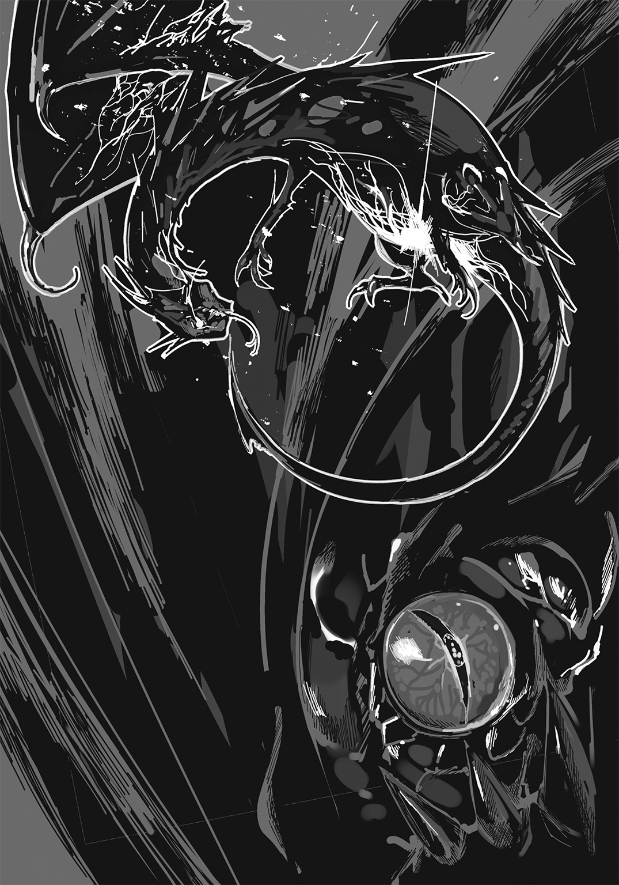
すべてが――己に関するあらゆるものが、戦火と腐蝕に蹂躙されていく。単に破壊されただけではない。奪われ、変質させられ、二度と戻らないようにされたのだ。
いったい、どれほどの人間が死んだのか。どれほどの人生が、幸せが、あるはずだった未来が踏みにじられたのか。
オレは茫然として、この時はまだ怒りすら湧かなかった。
ただ、確信した。
オレの家族は全員殺されたと――。残るはオレ一人だけだと。
何もかもを失い、これから人生は一変するのだと。
そして、あの昏い空を舞う猛悪な龍、グウェヌインと......不死王ザハリアーシュこそが、オレの生涯の敵なのだ、と。
その後、オレたちはエステル師に導かれて、東大陸のドルーイン共和国に亡命した。
ドルーインの議員たちはオレたちを匿う代わりに情報を求めた。だがオレたち自身、知っていることはそれほど多くなかった。
一ヶ月ほどの間、オレは茫然として過ごしていたと思う。
とりあえず身を寄せる先としてあてがわれたスヴェロス神殿の宿舎の一角で、オレはぼんやりと考え事ばかりしていた。
気がつくと過去のことばかりが思い浮かんだ。今はもう失われてしまった、懐かしいことごとが。
その一月の間に、ピィア小大陸はザハリアーシュの手に堕ちた。またたくまの侵攻だった。イクシニア王国の新女王――フェリシテのことだ――は、ザハリアーシュに忠誠を誓い、国ごと恭順したという。フェリシテが不死王の奴隷となる代わりに、イクシニアは滅びなかった。
セレニアは滅びた。オレが逃げたからだ。
あの王都の地には、近くザハリアーシュが遷都を行い、東大陸を侵略するための新たな拠点にするという。
やりたい放題だった。
オレは一月の間、無力感と罪悪感にさいなまれた。何のために生まれてきたのかとさえ思った。自死さえも無意味だ。償いにもならない。当てこすりにすらならない。ザハリアーシュはきっと、オレのことを路傍の石ころぐらいにしか思っていないのだから。
――悔しかった。
――憤ろしかった。
――そしてただただ、悲しかった。
一ヶ月悶々とし続けた次の朝、オレは思った。
......不死王を殺さなければならない。
そう決断しなければ、オレは一歩も進めなかった。
エステル師は無理だと言った。〝おやめなされ〟と。スヴェロス神殿の祭司たちは〝復讐は無意味です〟と諭した。ドルーインの議員たちは〝勝手なことをされると迷惑だ〟とまで言った。
だからなんだ、としか思わなかった。
ある日シメオンに訊ねた。
「おまえも、不死王を斃すのは無理だと思うか」
「無理だと言われると、かえってやりたくなるんでしょ」
シメオンは言った。オレは久しぶりに笑った。
「ああ、そうだな」
「じゃあボクはこう言うよ。この世の誰にも絶対に不可能だ、って」
オレはシメオンと見つめ合った。スヴェロス神殿の、あの宿舎でのことだったと思う。見習い祭司のための、ごく簡素な二人部屋だった。
そこでオレは誓った。
「わかった。......なら、オレが絶対にやりとげる」
シメオンが優しく微笑んだ。
「ボクが手を貸すよ。......借りてほしい、お願いだ」
「当たり前のことを言うな」
シメオンは微笑みを崩さない。
「死ぬかもしれないね。ドーンも、ボクも」
「オレたちは、もう死んだようなものだ。違うか？」
オレは血を吐くように言った。そうだね、とシメオンが答えた。
「ボクたちはあの日死んだんだ、ドーン。今生きてここにいるのは幽霊だ。幽霊になった二人が、不死王を祟り殺すんだ」
それから長い時間を掛けて、何をするべきかを二人で相談した。
シメオンは不死王の情報を集め、分析し、弱点を探ると決めた。オレは旅に出て、戦うための聖剣を集め、剣の腕を磨くことにした。
「大陸中を巡れば、やつを殺せる剣がきっとある。なければ作らせてでも手に入れる」
シメオンは頷いた。
「きっと、この計画は何年もかかると思う。手紙で連絡を取り合おう、ドーン。準備が整ったら報せるよ」
「わかった」
オレは形見となった〝ロゾヴィックの自在鞘〟を携え、旅立った。
――それから、七年が経った。
二章 再会
〝奴隷頭〟ヌマーンを斃したオレは、目抜き通りから裏路地へと入っていた。
あらかじめ受け取っていたシメオンからの手紙には、〝ヘラジカ亭という酒場にて待つ〟とあった。オレはヘラジカ亭に向かっていた。
もとの王都では旅籠街だった辺りの一角に、オレは朽ちかけた酒場を見つけた。
ヘラジカの頭骨に、腐った革がこびりついたやつを看板代わりに掲げた店だ。あの物体はもしかすると、かつては立派な記念品の剝製だったのかもしれない。
オレは静かに酒場の戸を押し開けた。
しんとしている。
客がいないわけではなかった。誰もがひそひそと話しているのだ。
オレはゆっくりと店に足を踏み入れた。
警戒の視線を感じる。
銅のカップを磨いているバーテンダーも、カウンターに座った労働者たちも、テーブル席の商人や小間使いたちも、さりげないふうを装ってこちらを注視しているようだった。
だが、その中に一人だけ様子の違う者がいた。
背の高い椅子に腰掛けて足を組み、強いまなざしで、まっすぐにオレのことを見つめてくる。
黒髪の美しい女だった。
まだ少女と言っていいだろう。吟遊詩人だろうか、若草色をした旅用のマントの下に、リュートらしき楽器を忍ばせている。
オレはその少女の前に歩を進めた。
じっと顔を見る。彼女も黙って見つめ返してきた。どこかで会ったことがあるような気がしたが、思い出せなかった。
オレは、彼女が何かを手に持っているのに気づいた。
――けん玉だ。
「それは......」
把手に素晴らしい宝石飾りが嵌め込まれた、すごいやつだった。見覚えがある。間違いなかった。かつてフェリシテがシメオンに贈ったものだ。
「なぜ、それをおまえが持っている？」
オレは黒髪の女に詰め寄った。彼女は目を細めて、不思議そうに見返してくる。
「これは自分のなんだけど......」
「バカな、それはシメオンの」
こちらの話を聞いているのかいないのか、女はけん玉の把手を持ち、ひょい、と玉を放った。カン、とあっさり角を穴に刺してみせる。さらにそこから玉を跳ね上げ、把手を横にして、ス......と柄の上で玉を止めて見せた。
一秒、二秒、三秒......。落ちない。
〝極意〟という技だ。
「な......!? その技ができるのは、シメオンだけのはず――」
「だから、ボクがシメオンだよ。七年会わなかったら、顔を忘れたの？」
「................................................は？」
顎が落ちるかと思った。
「は？ じゃなくて。ドーン、ずいぶんご挨拶だね」
オレは陸に上がった魚のように口をパクパクさせた。
「お......おまえ、いつから女になった」
「最初から女だよ」
「............え............そ......そう......だった、の、か..................」
無言で見つめ合うシメオンとオレ。
時が止まったかのような沈黙が、ひたすら続いた。
「............えっ？」
先に硬直が解けたのはシメオンだった。
「えっ............えっ、ちょっと待って。まさか......今まで本当に気づいてなかったの？」
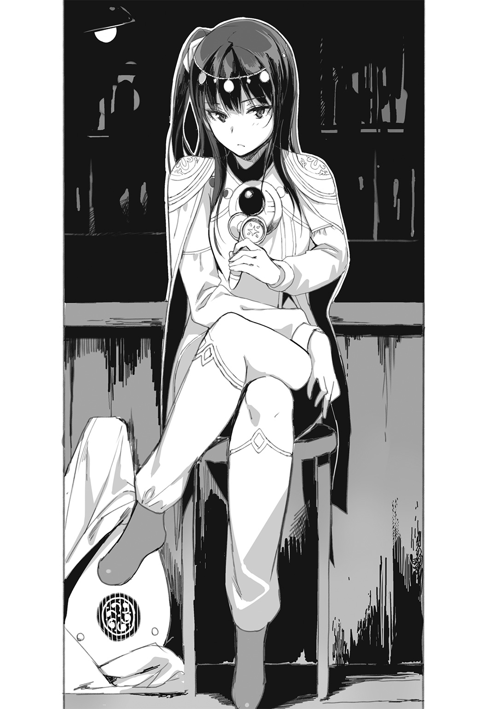
シメオンが慌てたように言ってくる。オレは足下から地面が崩れていくような気分を味わった。
「こんな衝撃を受けたのは、七年前のあの日以来だ......」
「ボクもまさか本気でバレてないとは思ってなかったよ......。普通、わかると思うんだけどな」
シメオンはバツが悪そうな顔をして首をひねった。冗談じゃない。どうかしている。オレもオレだ、なぜ気づかなかったんだ。昔は取っ組み合いもしたし、水浴びだって一緒に......。
「自分を信じられなくなりそうだ」
オレはぐったりとシメオンの隣の席に腰を下ろした。
古い木の丸テーブルに硬貨をいくつか置くと、給仕がそれを取り、水を置いて去って行く。気がつくと、店内の客たちはオレを警戒しなくなっていた。
オレはシメオンをちらりと見た。まだ、どう受け止めていいかわからない。
「......あれから、どうしていた？ エステル師は御壮健か」
シメオンも神殿を出て、各地を旅することになったと手紙では聞いていた。エステル師に付き従って三つの大陸を巡り、〝歌〟の実力を磨きつつ、見聞を広めていたようだ。もちろん、死霊術の知識や不死王の情報を集めてもいただろう。
「ううん。亡くなられたよ。肺の病でね。もうお歳だった」
「そうか。残念だ」
「〝剣〟の方は？」
「七本集めた。必殺の一振りもある」
オレはシメオンと視線を交わした。それだけで充分に伝わった。......そうだ、性別はどうあれ、やはりシメオンなのだ。オレたちは頷き合った。
「キミに、会わせたい人物がいる」
シメオンが声を落として言った。
「不死王攻略の鍵を握る男だ」
「......誰だ？」
「〝薔薇貝の結社〟。その頭目」
「会えるのか」
オレは軽く目を見開いた。この七年の間に、オレの幼馴染みは驚くべき人脈を作り上げていたようだ。
「行こう」
シメオンが席を立ってオレを促す。オレはシメオンの後に付いて、酒場の奥へと向かった。
〝ヘラジカ亭〟は、〝薔薇貝の結社〟の数ある隠れ家の一つだった。
シメオンがバーの裏へとオレをいざなうと、バーテンダーは無言で通路を開け、オレたちを通した。通路の奥には扉があった。
扉は地下室へと続いている。
短い石段を降りると、やがて暗闇の中から、紙をこする微かな音が聞こえてきた。蠟燭の灯りが点いている。
部屋の中へ入ると、男が一人、羊皮紙に羽ペンを走らせていた。
表の酒場にあったのと同じ、古い木の丸テーブルに、紙束をどっさりと積み上げている。どれも手紙のようだった。
「......来たか」
男はオレたちの気配に気づき、振り向いた。
思っていたよりも若かった。三十歳にはなっていないだろう。日焼けした顔に無精髭。頭には乱れたターバンを巻いている。陽気そうな微笑みを口元に浮かべながらも、油断のない目つきをしていた。
「俺がヨウシアだ。座ってくれ」
ヨウシアは燭台を動かし、椅子を引いてオレとシメオンに勧めた。
オレたちが座ると、ヨウシアは〝さて〟と切り出した。
「他ならぬシメオン師の紹介だ。疑うのは義理を欠くというものだが......」
「疑う？」
オレはすかさず切り返した。
「どういう意味だ」
「まあ、待て。別に変な意味じゃない。ただ、俺はこう言いたいんだ。〝腰の剣をこっちへ預けてくれ〟と」
ヨウシアの両脇から、四人の護衛が現れた。音もなく、暗闇から染み出すような出現の仕方だった。
シメオンが激高して立ち上がる。
「ヨウシアさん！ 何のつもりですか」
「気に障ったなら謝る。申し訳ない。俺も危険な状況の中、あなた方と会っていると理解してほしい。何しろここは不死王のお膝元だ。どれほど気をつけても、やりすぎということはない」
「......なるほど」
オレは腰から鞘を外した。床へ置き、ヨウシアの足下へ滑らせる。護衛の一人がそれを丁寧に拾って、手に持った。
「ずいぶん物わかりがいいね、ドーン」
シメオンがそっと座り直す。いつの間にか、その両手にはリュートが構えられていた。即座に歌唱魔法を使えるようにだろう。
心配いらない、とオレは言った。
「聖剣は持ち主を選ぶ。オレにしか扱えないし、いざとなればいつでも手元に呼べる。ついでに言うと、この四人くらいなら別に素手でも問題ない」
そう言うと、護衛たちが無言のまま睨み付けてきた。
ヨウシアが苦笑する。
「ほう......たいした自信だな。この四人は結社でも選りすぐりの精鋭なんだが」
「ザハリアーシュを斃そうというんだ。そうでなくてどうする？」
「ふっ」
一瞬、ヨウシアがあっけにとられたような無防備な顔をした。
それから突然、笑い出す。
「アハハハハハッ！ なるほど、こいつは傑作だ！ シメオン師が推薦するだけのことはある！」
「おい、シメオン。なんだこの男は。失礼な人間だな」
「ハハハハハ！ いやいや、申し訳ない。今時、そんな夢みたいな馬鹿をいう人間が実在するとは思わなくてね。しかも心底からの本気だったぞ、今のは！」
涙を流して笑っている。オレは腹が立つというよりも、むしろ拍子抜けしたような気分で言った。
「いったい何がそんなに可笑しいんだ？」
「ザ、ザハリアーシュを斃すだと！ ハッハッハ！ 俺と同じことを言うやつが、この世にもう一人いるとは思わなかった！ ハハハ、こいつは傑作だ！ 世の中どうして、捨てたもんじゃねえな！ ハハハハッ！」
ヨウシアは立ち上がり、オレの肩を気安げにバシバシ叩いた。
「よう、名前を聞かせてくれ、兄弟」
「ドーンだ。名字はない。ただの、ドーン。兄弟というのはなんだ。オレの兄弟なら全員、神々の御許に召された」
「そうか......そいつは災難だったな。これからは俺が新しい兄弟になろう。困ったことがあったらなんでも言ってくれ」
間近からじっと、こっちの目を覗き込んでくる。優しい瞳だった。思わず心を打たれそうになるほどに。
「......ヨウシア、あんたが〝薔薇貝の結社〟の首魁だと聞いた。本当か」
薔薇貝の結社は、不死王に対抗するレジスタンス組織の一つだ。
〝西大陸で最大・最古の秘密結社〟とも言われている。
帝国が支配する土地で、何十年間もザハリアーシュの目から隠れ、抵抗活動を続けてきた。国外脱出の手引きや戦災孤児への支援など、その活躍は幅広いという。
「ああ、本当だ。俺がその頭目だよ」
ヨウシアは微笑んで答えた。
「思ったより頼りなくてガッカリしたか？ まあ実を言えば、うちの結社で言う頭目ってのは、組織全体の連絡係みたいなものでな。ほら、これを見ろ。要はこれを片付けるのが、俺の仕事の大半なんだ」
ヨウシアはテーブルの上に積み上がった手紙類を示した。この手紙の山を介して、無数の結社員の報告を受け、あるいは指示を出しているのだろう。
「ここにある書類も全体から見ればほんの一部だ。俺たちの結社は人数が多くてな......。デカい組織だとは思われているだろうが、実際は皆がふわっと想像してるよりも、遙かに何倍も巨大なんだ。ちょっとした国より大きい。それどころか、ピィア小大陸の四ヶ国を合わせたよりも大きいかもしれんな」
さすがにオレも鼻で笑った。
「ホラを吹くのも大概にしてくれ。それでは何百万人という数になってしまうぞ」
「何千万人さ、兄弟」
ヨウシアが穏やかに笑って訂正した。
「事実だよ、ドーン」
シメオンが頷くのを見て、オレは絶句する。......本当にそんなにいるのか。
「で、その巨大な組織における俺の役割は何かというと、大陸中に散っている仲間たちのとりまとめなんだ」
ヨウシアはどこか誇らしげに言った。
「結社にとって、俺はただの代表にすぎない。意志決定ができる幹部は他にもたくさんいるし、たとえ俺がいなくなっても結社は生き続ける。薔薇貝の結社は決して抵抗をやめたりしない」
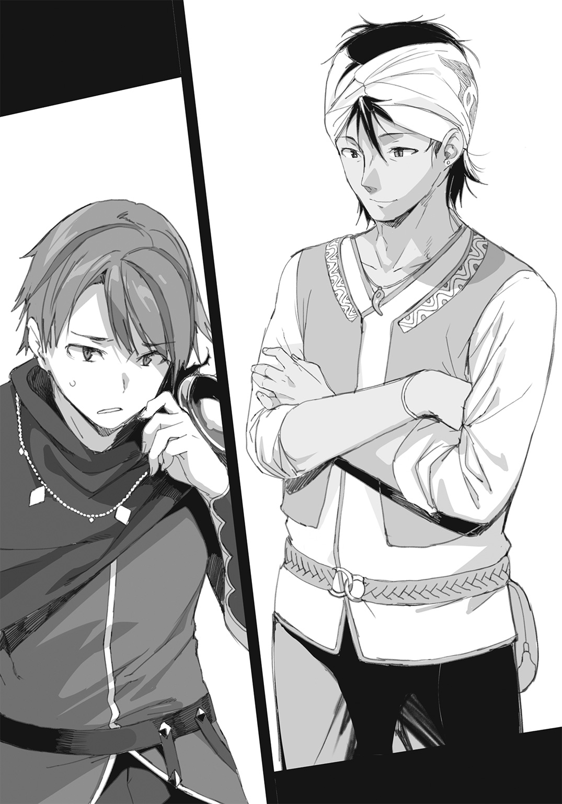
「なぜ、あんたが頭目なんだ？」
言ってはなんだが、それほど強そうには見えない。
「立候補し、選ばれたからだ。どうして立候補したかと言えば、これが一番危険な仕事だったから。他の仲間にやらせたくなかった」
「......なるほど」
オレはヨウシアという男を少し理解できた気がした。組織を国に喩えるなら、ヨウシアは武王というよりは賢王なのだろう。民を率いるのではなく、民に好かれ、担がれる王なのだ。
「兄弟、今度は俺からも質問していいか？ さっき、四人を同時に相手にして勝てると言ったが、本気で言ったのか？ 何がその自信の源なんだ？」
「オレにはこれがある」
オレは服の袖をまくり、前腕部をさらけ出した。
そこには、ルーンを刻んだ小さな宝石が、骨の台座とともに埋め込まれている。
「こいつは......！」
ヨウシアが目を見張る。
宝石に刻んだ〝神々の文字〟は、〝狼のルーン〟と呼ばれるものだ。狼の迅さと連携性をこの腕に与える。これと同じものが、逆の腕にも埋め込んであった。
「他にもある。脚には〝シカのルーン〟、背中には〝熊のルーン〟、胸には〝アルマジロのルーン〟を入れてある」
「......！ それは四人掛かりでもまず勝てないな」
ここでまたシメオンが椅子を蹴って、勢いよく立ち上がった。
「ドーン！ そんなの、聞いてないぞ！」
「シメオンにはわざと言わなかった。反対されると思ったからな」
「当たり前だ！ 〝獣骨のルーン術〟は邪法だよ！ 痛みで死んでいたかもしれないんだぞ！」
邪法とは言い過ぎだ。死ぬほどの激痛を伴うのは確かだが、れっきとした〈光の三神〉の魔法なのだ。穏やかな魔法ではないから、辺境の蛮族ぐらいしか使わないが。
「信じられない......いったいどうしてこんなこと......」
シメオンが怖ろしげに唇を震わせている。やっぱり、シメオンだ。臆病なところは変わっていない。オレは内心でほっとしていた。
「クーガ神殿でルーン術を教えてくれと言ったら、祭司が〝使いこなすには最低でも二十年の修業を要する〟とか抜かしやがったんだ。そんなには待てない」
「だからって......」
「シメオン。痛みで死ぬ者もいると言われているが、実際にはあまりいないんだ。普通は死ぬ前に諦めるか気絶する。三日耐えきればなんとかなる」
シメオンが頭痛を堪えるような表情で黙った。ヨウシアが大笑いする。
「ハハハハ......馬鹿につける薬はないな、シメオン師よ。もう、馬鹿も馬鹿、こいつは俺以上の大馬鹿だ！ 正直、これほど本気の馬鹿を見たのは生まれて初めてかもしれん！ アハハハハッ！」
「馬鹿、馬鹿と言い過ぎだ。これでもオレは合理的に考えている。ザハリアーシュと剣で渡り合うには、このぐらいの準備は必要だ」
「ハハハハ！ 真顔だ！ すげえ真顔だ！ アハハハッ！」
人の顔を指さして笑うな。なんなんだこいつは。こんなのが大陸最大のレジスタンスの頭目なのか？ 信じられない。
「すまん、すまん。ちょっと笑いすぎた。シメオン師も、まあ、座ろう」
ヨウシアはシメオンを促して着席した。オレはずっと座ったままだ。
「――さて兄弟よ。こうしてお互い理解を深め合ったところで、そろそろ本題に入っていこうじゃないか」
「本題？」
「相互協力態勢の構築ということさ。シメオン師からは何も聞いていないのか？」
オレはシメオンの横顔を見た。
不機嫌そうだ。むっつり黙り込んでいる。
経験上、こういうときは触らない方がいい。オレの幼馴染みは性格が優しい反面、とんでもなく強情な一面があるのだ。
「......ヨウシア、〝相互協力〟と、あんたは今言った。協力とは力を合わせることだ。オレの力とは、今見せたこのルーンと七本の聖剣。では逆に聞くが、あんたたちは具体的には何ができるんだ？」
「俺たちに何ができるか？ 情報を出せる。例えば、今現在ザハリアーシュがどこで何をしているか、俺は知っている。明日以降の行動予定もわかっている。いつ襲撃すれば有利か、その時護衛がどれくらいいるか、どういう経路を取れば最も安全にやつに近づけるか。薔薇貝の結社は常に把握している」
ヨウシアは淡々と言った。それはまさに組織力のなせる業だった。オレとシメオンの二人ではとうてい調べきれないような情報を、ヨウシアは持っているのだ。
「シメオン師からは〝不死王に関しての最新の情報が欲しいので、結社に協力してもらいたい〟というふうに聞いている。確かに、俺たちはザハリアーシュの動向や、その不死性の秘密に関して、様々な情報を探り出している。――命がけでな。その情報のどれもが、仲間が危険と引き替えに取ってきた、非常に貴重なものだ」
オレは深く頷いた。喉から手が出るほど欲しい情報だった。
「兄弟、お近づきの印にいくつか教えておこう」
ヨウシアは身を乗り出し、声を落とした。
「不死王はいくつもの異能を備えている怪物だ。例えば、普通の剣では傷つかない。もちろん槍でも、矢でも、火炎や毒でも傷つかない」
「それは知っている」
実を言うと、火で傷つかないのは初耳だったが。
「大地をも腐らせる猛毒を操り、自在に宙を飛ぶ。そして人の心を読む」
「それも知っている。精神をくじき、金属を破砕する咆哮を放つことも知っている」
「では、暗闇でもものが見える、ということは？ あるいは、背後のことも知覚している、という事実は？」
「......それは知らなかった」
「知っておいてよかったな。どうやら、不死王は視覚以外による超常的な感知能力を持っているらしい。やつは目を閉じて眠っている間も周囲を知覚しているんだ」
だとすると、闇に乗じての奇襲や、背後から不意を突く攻撃、就寝時を狙う襲撃などは無意味ということになる。
「それと、一時的に透明化――目に見えなくなる能力を有している」
なんだと。透明になる？
「それはつまり、あのおとぎ話の、妖精に呪いをかけられた少年のようなことか？ 闇夜の新月のように姿を失って、周囲の者にはどこにいるか、何をしているかもわからなくなる......という、あれなのか」
ちなみにそのおとぎ話では、透明な少年は誰とも関わることができなくなって、最後は孤独のあまり人間であることをやめる。妖精の一員になってしまうのだ。
「そのとおり、まさにそれだ。もっとも不死王は自分の意志で元に戻れるが」
「それは......厄介だな」
仮にやつを追い詰めても、聖剣を突き立てる前に、透明になって逃げられてしまう可能性があるということだ。
不死王に剣が届く機会はそう何度もないはず。失敗はできない。
オレが考え込んでいると、シメオンが言った。
「ドーン、心配はいらない。ボクは魔法で姿を隠したものを視ることができる。〝精霊の目〟というスヴェロスの秘儀だ」
「なに......。いつの間にそんな器用なことができるようになったんだ？」
「訓練したんだ。ボクだって七年の間、歌ってばかりいたわけじゃない」
シメオンは澄ました顔で言った。やはりオレの幼馴染みは大したやつだった。まさか七年経ったら、黒髪の美女になっているとは考えもしなかったが。
「訓練か......」
オレは少し頭をひねった。できれば、自分自身の目で見えた方が剣は振るいやすい。
「後天的に覚えられるものなら、オレにも教えてもらうことはできないか？」
「いいけど、時間がかかるよ。生まれつき素質があっても三、四ヶ月はかかる。もともと向いてなければ、二年かかってもできないかもしれない」
「そんなにか」
必要なら費やすべき時間だが、ムダにするにはあまりにも惜しい。そうしている間にも不死王の軍勢はさらに強大化するだろうし、滅ぼされる土地も虐げられる人間の数もますます増えていくのだ。
それになにより、その何ヶ月かの間、ザハリアーシュがのうのうと息をしているということがオレには赦しがたい。
ヨウシアが言った。
「......兄弟。これだけ聞いても、やっぱり本気で不死王と戦うつもりなのか？」
「当たり前だ」
ヨウシアの問いに、オレは間髪を入れず答えた。
「オレは不死王を殺す。そのためだけに生きてきた」
「ザハリアーシュは本物の怪物だぞ。ただごとではない化け物なんだ。俺たち結社が何千万人いても手が出せない。大陸中の――世界中のあらゆる人間にとって、どうしようもない存在なんだ。それでもか？」
「それでもだ」
はーっ、とヨウシアがため息をつく。
「......シメオン師も、そうなのか？」
「ヨウシアさん、止めたくなる気持ちはわかります。でも、ボクたちはどうやっても止まれない。七年間、そのためだけに生き延びてきたんです」
「......ハハッ」
ヨウシアは愉しげに、しかしどこか困ったように笑った。
「そうだな......迷ってたんだが。実は、まだとっておきの情報がある。聞くかい、兄弟？」
「聞きたい。......が、どうしてオレたちにそんなに容易く情報を教える？」
本来、大金を支払っても聞くことの叶わない情報のはずだ。
「死んでほしくないからさ。〝不死王を斃す〟なんて夢物語を、本気の本気で信じて命を懸ける、そういう大馬鹿が俺は大好きだし、――そういう大馬鹿を尊敬する人々が作り上げてきたのが、この結社なんだ」
ヨウシアは続ける。
「今から話すことは、薔薇貝の結社における最高機密の一部だ。だから、決して他の人間には話さないでほしい。なぜかというと、我々がこれを知っていると不死王に気づかれたら、真剣になって結社を潰しにかかってくるかもしれないからだ。それほどやつにとって危機的な情報なんだ」
オレとシメオンが黙って耳を傾けるのを確認してから、ヨウシアは呟くように告げた。
「一言で言おう。――不死王ザハリアーシュは三人いる」
......三人いる？
「どういうことだ？」
「文字通りの意味だ。ペルネケス帝国内に、ザハリアーシュ本人に間違いない人物が三人、同時に存在している。それも、少年と、壮年と、老人の三つの姿で」
意味がよくわからなかった。
「混乱するのも無理はないと思う。......というか、どういうことなのか、我々自身にも正確にわかってはいないんだ。ただ、このことがやつの〝不死の謎〟に大きく関わっているのは間違いない」
シメオンが言った。
「その三人は、その......同じ顔をしているのですか？」
「そうだ。年齢以外は、何もかも同じだ。一人は見かけ上、十代半ばほどの少年の姿で、動作も若々しい。一人は三十すぎぐらいの壮年の姿で、背が高く、自信に満ちあふれている。あと一人は七十歳を超えているであろう老人で、顔は皺だらけだが矍鑠として歩き、老練な口ぶりで話す」
オレとクラウス兄がかつて、物見の城塔の上から見たザハリアーシュは、壮年の姿だったということか。
「これら三人の不死王は、同じ日の同じ時間に、それぞれ別の場所で目撃されている。それも何度もだ。大陸の端と端のような離れた街でも目撃されている。そして全員が〝不死王ザハリアーシュ〟として振る舞っている」
「つまり、影武者がいる――という解釈でいいのか？」
オレの指摘に、ヨウシアは首を横に振った。
「違う。......いや、あるいは実はそうなのかもしれないが、そんな単純なことではないんだ。というのは、三人全員が不死王の能力を持っているらしいからだ」
「全員が、例えば、心を読んだり、宙に浮いたりすると？」
シメオンが半信半疑の表情で呟く。
「そうだ。そして全員、剣が通じない。三人とも戦に出ているし、不死身だった」
「......な......」
さすがに、オレも絶句せざるを得なかった。
「だからこそ、三人ともが不死王として扱われているんだ。......もっとも、複数の不死王が一箇所に集まって姿を見せたことは、今まで一度もないが」
「〝毒龍騎士〟のように、能力の一部を貸し与えられている影武者なのではないか？」
オレは考え考え、そう言った。
「ヌマーンとやらは、毒を吐いたし、通常の剣が効かなかったぞ。影武者もそれと同じことをしているのかもしれん」
シメオンが怪訝そうに言う。
「〝奴隷頭〟のヌマーンと言えば、帝国数百万人の奴隷を従える大幹部だね。けど、ドーン。その能力をどうして知ってるの？」
「さっき斃してきた」
シメオンとヨウシアが口を半開きにして黙った。どうやら啞然としているらしい。
「大した相手ではなかった。それより、その推定影武者と思われるやつらは、どの能力まで使えるんだ？」
「......そ、そうだな。詳しいことは逐一調べてみないとはっきり言えないが、予想できる範囲ではほとんど、あるいはすべてだ」
「すべて？ 本当にか。例の、心を読む力も？」
「ああ、それは間違いない。それだけじゃなく、三人の不死王は意思が統一されていて、仲違いをしたこともない。連絡を取り合っている様子もないが、お互いに起こっていることを知っているような節もある」
「分身――あるいは同時存在？ まさか......」
シメオンが呟いてかぶりを振る。
「わからないことが多すぎる。まだ、不死王のすべての能力を暴いたとも限らないし......」
「そうだな。ザハリアーシュの〝不死の謎〟はあまりにも深い」
ヨウシアが唇を湿し、椅子に座り直した。
「しかし......いいか、ここが真に重要なところだ。よく聞いてくれ。本物は一人だけだ。これは絶対確実なんだ。三人いるように見せかけているが、本当のザハリアーシュは一人しかいない。これが俺たちの最高機密だ」
「............どうして、絶対確実だと？」
オレが訊くと、ヨウシアは微かに笑った。少し自慢げな、そして悲しげな微笑だった。
「それを聞きたいなら、一つ昔話をしよう。長い話になる。まずお茶を用意して、それから始めよう」
ヨウシアは新しい蠟燭に火を移した。今までずっと微動だにしなかった四人の護衛たちの一人が、暖炉の上からポットを取ってきた。
ヨウシアは香り高い紅茶を淹れ、その場の全員に振る舞った。
「これは今から六十年前の話だ――」
ヨウシアは滔々と語り始めた。
当時、薔薇貝の結社の前身となる組織が、既に西大陸にあった。
ペルネケス帝国とザハリアーシュは、その時代よりさらに以前から、暴威を振るっていたのである。
その間、不死王は政権を交代していない。不死王は寿命すら超越しているのだ。事実、ザハリアーシュの生年および現在の年齢は、今もって確認されていなかった。
それは、〝ザハリアーシュの支配は永遠に続きかねない〟ということを意味している。
これがどれほど由々しきことか、想像できるだろうか。
過去、歴史上に暴君は何人も存在してきたが、いかな圧制者もいずれは命数がつきた。しかし、ザハリアーシュは不老不死なのだ。殺されなければ死ぬことはない。
もし不死王の支配が永遠だとするなら、今苦しんでいる自分たちだけでなく、後の世代にわたっても、子々孫々まで、毒と暴虐と搾取の時代が続くのだ。
人々はザハリアーシュの支配を打ち破るため、あるいは、いくらかでも後の世に希望を残すため、集って組織を作った。いくつものレジスタンスが生まれ、潰され、そしてまた生まれた。
薔薇貝の結社の前身となったのは、そんな組織の一つだ。
当時、その組織にまだ名前はなかった。圧政や毒の害に苦しむ人々を支援し、助け合うための穏健な人々の集まりだったはずだ。
――さて、そこに三人の英雄が出現する。
英雄と書いて〝大馬鹿〟と読んでもいい。その三人は、組織の他の人々とはまったく違う目的意識と覚悟を持っていた。
〝不死王を暗殺する〟という、大それた考えを持っていたのだ。
三人はまず綿密な計画を練った。
いちばん気をつけなければならないことは、不死王自身に悟られないことだった。暗殺計画が筒抜けになったらすべてが水の泡だ。しかも不死王には〝人の心を読む〟という異能が備わっている。どれほど優れた密偵でも、秘密を知る者が不死王の前に立てば、それだけで計画は露見してしまう。
そのため彼らは、極端に秘密主義になった。
計画の全容を知るのは当の三人だけで、他の協力者は部分的にしか情報を知らされなかった。
表向きには、新しい脱走経路を作る作戦であるとか、たくさんの味方を救う計画であるとか、物資の調達に関わることだとか理由をつけておき、密かに、慎重に、少しずつ、長い時間を掛けて準備を進めた。
三人は功績を上げ、組織を管理する立場になると、情報を厳しく統制しはじめた。
彼らは機密情報に水準をもうけ、不死王に近づける立場の協力者ほど、詳しい情報を持たないようにした。詳細を知る幹部は遠くにいて、決して不死王の前には出ない。この手法は、現在でも薔薇貝の結社で行われている基本的な諜報戦略だ。
特に、帝国の政府関係者を協力者にするときは、あくまでも自分がやっていることは〝収賄〟とか〝横領〟に近いことであって、それは腐敗した政府の役人なら誰でもやっているような些細な不正だ、と思わせるようにした。
不死王と直接顔を合わせる可能性がある者には、レジスタンスの内通者であるという自覚さえ持たせてはならなかった。心を読まれた際に、秘密結社が手を伸ばしていると感づかれてしまうからだ。
だが、暗殺計画の本当の最終段階では、やはりすべてを知った者が手を下さなければならない。つまり自分たち自身が、だ。
そこで彼らは考えた。
――敵がこちらの心を読むというのなら、心そのものを捨て去ればいい。
ある種の貝毒には、記憶を破壊する作用があることを知っているだろうか。ノイ＝アプト大陸では、例えばそれは薔薇貝と呼ばれる貝に含まれている。
彼らは目的を秘してその毒を精製し、保管した。
また、〝破壊のベル〟という強力な魔法具を三つ、用意した。
一抱えほどもある釣鐘状の魔法具で、起動すれば大規模な爆発を起こし、周囲をまるごと吹き飛ばすというものだ。これも〝いざというときのために〟などと言って、実際の用途は伏せつつ、時間を置きながら集めた。
一方で、三人はザハリアーシュの動向を徹底的に調べ上げていた。何人もの協力者を介し、間接的にその所在を明らかにする。これもまた、現在の結社に受け継がれた手法の一つだ。
〝英雄たち〟は、その日......決行の日、薔薇貝の毒と〝破壊のベル〟を携えて、不死王のもとへ赴いた。
三人の刺客が、三人の不死王と、一人ずつ対峙した。
その時間は完全に同時だった。正午ちょうどのことだったと伝えられている。
一人は玉座の間に。
一人は戦陣に。
一人は毒龍の神殿で儀式の最中に――。
彼らは身元を隠し、内通者の手引きを得て、それぞれの場に潜入していた。そして不死王との謁見の直前、薔薇貝の毒を自ら飲み、記憶を喪失しておいた。
おそらくはこういう段取りだっただろう。
正午の少し前、英雄はベッドから起き上がる。そのとたん、ひどい吐き気と頭痛、それに軽いしびれを覚える。そして自分が誰なのかわからないと気づく。
ふと見ると、ベッドの傍らに紙きれが落ちている。
こんなようなことが書かれている。
〝後の自分自身のために、このメモを残す。私よ、混乱せずに行うべきことを行え。そこにある大きな釣鐘を持ち、不死王陛下のもとへ運ぶのだ。間もなく友人が呼びに来る。その指示に従えばよい。陛下の面前までたどり着いたら、ベルを鳴らせ。〟
三人は自ら決めたとおり、それに従った。
そして、不死王を自爆に巻き込んだのだ。
実に十四年の歳月を掛けた一撃だった。
――結果を言えば、この計画は失敗した。だからこそ、ザハリアーシュは今でも生きている。
しかし英雄たちは、不死王を二人までは殺した。
最後の一人が気づいたのだ。
その日、毒龍の神殿で忌まわしい儀式を行っていた老人の姿のザハリアーシュは、訝しげにこう言ったという。
「――なぜ、おまえには記憶がないのだ？」
その不死王だけが直前に英雄を捕らえ、暗殺を未然に防いだ。英雄はその場で処刑された。
......これが、今のところ我々が――いや、人類が不死王に対して与えた、過去最大の戦果だ。
彼ら三人の滅私の精神と、薔薇貝の毒に託したその決然たる覚悟を称え、我々の組織は以後〝薔薇貝の結社〟と名乗ることになった。
英雄たちの果たせなかった願いを継ぐために。
人間のしたたかさ、しぶとさと、勝利の可能性を信じるが故に――。
ヨウシアが語り終えた。
オレとシメオンはしばらく声が出せなかった。
手元のカップに目を落とす。いつの間にか、紅茶は空になっていた。カップの底を見つめながら、オレは思う。
――三人の英雄たちは、どんな思いで薔薇貝の毒を飲んだのだろう。残された者たちはその行為をどう受け止め、組織を未来へ繫いだのだろう。六十年のもの間、この物語を秘して伝えてきた、その忍耐強さと苛烈な殺意。
人間とは、いったいどれほど執念深くなれるのだろうか。
「今の話で、重要な点がいくつかあるのに気づいたと思う」
ヨウシアが言った。シメオンは頷いて答える。
「まず、不死王の読心能力が〝記憶を読む力〟だということですね」
ザハリアーシュは英雄の〝記憶の欠落〟に気づくことができた。だとすれば、それは人の記憶を読み取ったからに他ならないはずだ。
「そうだ。その力は絶大で、一秒前に考えたことから生まれた直後の記憶まで、本人が覚えていないことすら探り出すことができる。経験者の話によれば、心を読まれる際、まるで頭蓋骨の内側をまさぐられるような、異様な感じがするそうだ」
考えれば考えるほど、恐るべき能力だった。そんな力を持った支配者を戴くことがどれほど怖ろしいか。
裏切りは事前に読み取られ、ごまかしも噓も怠惰もすべて見破られ、過去のあらゆる秘密を暴かれる。不死王の前では、臣下は恐怖のあまり、自分の意見を持つことすら満足にできなくなるだろう。
シメオンが続けて言った。
「そして何より、一人の不死王は記憶がないことを見抜いたけど、他の二人は見抜けなかった、ということ。これはとりもなおさず、本物が一人しかいないことを意味しています」
「そう、そこだ。三人いるうちの誰が本物かはわからない。入念に観察してもまったく区別が付かないんだ。あるいは時々入れ替わったりしているのかもしれない。だが、本物が一人しかいないということは確実だ」
ヨウシアの声は熱を帯び、視線には力がこもっていた。オレは腹の底が熱くなるような思いがした。
――そうか、こんなふうにしてこの男は人を惹きつけるのだな......。
ヨウシアは両手を緩く組み、落ち着いた話しぶりで続ける。
「あと二つだけ、判明している事実がある。一つは、不死王は〝四人以上は同時に存在しない〟ということ。少なくとも、これまで四人目は全く確認されていない。いるのは常に〝三人〟だ。おそらく、それはザハリアーシュの力の限界を意味している」
「限界......」
オレは自ら言い聞かせるように呟いた。
「......そうだ。やつにも限界はある。当然のことだ」
「そうだとも、兄弟」
ヨウシアがにやりと微笑む。
「もう一つの判明している事実は？」
シメオンが訊ねた。
「偽物のほう――兄弟の言葉を借りて影武者といってもいいが、これは補充がきくようだ。実際、〝薔薇貝事件〟のすぐ後に不死王は三人に戻っている」
薔薇貝事件とは、三人の英雄たちが自爆攻撃を敢行した事件のことだろう。
「それは..................難しい」
シメオンは眉間に皺を寄せて考え込んでいる。
「ドーン、これは実に難しいよ。まず、どれが本物なのか見極めなければ不死王は斃せない。そしてザハリアーシュはそれを絶対に知られないように手を打っているはずだ。その欺瞞を打ち砕いて、真実を見つける方法が必要になる......」
「そう。実は俺たち結社も、それをずっと探っている。どうすれば見極められるのか、その方法を......。だがノロマなことに、何十年も掛かってまだ見つけられないでいるんだ。あるいは、慎重になりすぎているからなのかもしれないが......」
「............」
オレは目をつぶって考え込んだ。
うつむいて腕組みをし、首を振って目を開く。
ふと、口をついて出た言葉があった。
「――ありがとう。ヨウシア、本当にありがとう。結社の人たちにも」
「ハハッ。いきなりなんだ、いったい？」
ヨウシアは鷹揚に、だがこの上もなく嬉しそうに笑った。
「そう思ったんだ。それだけだ」
オレは自分の膝に両手を置き、護衛の一人のほうに振り向いて言った。
「オレの剣を返してくれないか」
「......ん、帰るのか？」
ヨウシアの問いに、オレは首を横に振った。
「いや。こちらも腹を割っておきたい。オレの集めた七本の聖剣のすべてを、ここで見せておこうと思う」
ヨウシアが陽気に口笛を吹く。
「そりゃ面白そうだ。だが、いいのか？」
「構わない。どうせシメオンにも見せておくつもりだった」
オレは鞘を受け取り、その四角い蓋を開けた。
まず、取り出したのは刃のない長剣だ。
「これは〝聖女ガリエルの宝剣〟。あらゆる毒を浄化する力を持つ」
長剣を見せてから、足下に立てた。
オレは同じ鞘から、さらに剣を抜く。
今度は細身の直剣。黄金の柄頭に、妖精神のみごとな彫り物が飾られている。
「〝ピィアの守護剣〟。風を操り、自在に空を飛ぶことができる」
これも近くに立て、さらに抜く。
「この細剣は〝クーガの指〟。伸縮自在の機械剣だ。こっちは〝冬薔薇〟。龍の鱗すらも貫く剛剣。凄まじい切れ味を持ち、決して折れることがないと言われている」
二本、続けざまに床に突き立て、またまた剣を抜いた。
「〝ルーンの追跡手〟。狩人のルーンを刻んだ短剣だ。投げれば自ら飛び上がり、狙った獲物を自動的に追い続ける」
これも床に立て、さらにもう一本。今度はかなり慎重に抜いた。
現れたのは、反り身の新月刀だ。
「〝狼の絶望の剣〟。これはあまり使う気がない剣だ。振るえば使い手の心を支配し、狂戦士となさしめる。〝忌まわしき龍の咆哮〟で士気をくじかれることもないが、冷静な判断もできなくなる。正直使いにくい」
これは半ばまで抜いて、鞘に戻した。
そして、最後の一本だ。
「これが正真正銘、オレの必殺の一振りだ」
形状は何の変哲もない長剣。その刃は薄緑色に輝いている。
「〝毒龍を殺す毒〟。これは、毒を持つ生き物なら何であっても一撃で殺すことができる剣だ。ただし、一度きりしか使えない。敵に刃が突き刺さると、剣自体が液化して吸収される」
聖剣の刀匠に頼み込み、何度断られてもしつこく通って、拝み倒して作ってもらった逸品だ。材料も代償もすべて自分で揃えた。この剣一本のためだけに、三年以上も時間を使ったのだ。その上で偶然や幸運にも助けられて、ようやく手にすることができた。
「〝毒龍を殺す毒〟......」
シメオンが、目を吸い付けられるかのような表情で剣を見つめている。
「毒を持つ生き物なら......一撃で？ つまり......」
「そうだ。この剣を突き立てれば不死王は死ぬ」
これはそのための剣だ。一撃でやつを仕留める、その目的に特化した剣。
まさに〝不死王殺し〟の聖剣だった。
「あとはこれを命中させればいいだけだと思っていた。だが今や、どの不死王に突き立てるべきか、という問題になった」
オレは渋い顔をして剣の切っ先を睨む。
「そう......だね。三人いるんだ。一度しか使えないなら、失敗はできない」
「さすがにこれを三本用意するのは難しい。ものすごく貴重で珍しい材料を、惜しげもなく大量に使ってやっと作れるんだ」
試しに三人の不死王の誰かに刺してみて、運良く正解に当たればそれでよし、といったやり方は考えられない。確実に、間違いなくこいつが本物だ、と特定できたとき、はじめて〝毒龍を殺す毒〟は使える。
「文字通り、最強、最後の一本だね......」
「そういうことだ。逆に言えば、本物を突き止めさえすればオレが一撃で仕留めてみせる」
オレはヨウシアをちらりと見、シメオンにじっと視線を注いだ。
シメオンにオレは期待していた。この幼馴染みは実際、大したやつなのだ。なんだかんだ言って、オレは子どもの頃からシメオンに一目置いていた。
シメオンは強いまなざしでオレの視線を受け止め、しっかりと頷く。
「......わかってる。きっと解いてみせるよ、〝不死の謎〟を」
ヨウシアは、オレとシメオンを交互に見つめながら、何か迷うように考え込んでいた。
「......俺は今、非常に危険な計画を思いついている」
やおら椅子から立ち上がり、うろうろとテーブルの周りを歩くヨウシア。
「成功すれば大きな前進が見込めるし、失敗すれば不死王に目をつけられる可能性が高い。下手をすればすべてがご破算になるかもしれない。だが怖れているときではない、とも俺は考える」
立ち止まり、声をやや高くする。
「薔薇貝事件から六十年も経った。ここでもう一度、大胆な作戦を実行に移すべきだ。薔薇貝の結社の頭目として、俺はそう意見を表明する」
「......最初からそのつもりだったのでしょう？」
シメオンが言った。
「でなければ、ボクたちに秘密を話したりしないはずだ。〝不死王と直接顔を合わせる可能性がある者には詳細は教えられない〟、しかし、〝計画の実行者だけはすべてを知っているべきだ〟。あなた自身がさっきそう言った」
ヨウシアは無表情に頷く。
「申し訳ないがそういうことだ。ここまで聞いたからには、絶対に協力してもらいたい」
「断るつもりもない」
オレは即答した。
「早く話してくれ。どんな計画だ？」
ヨウシアは椅子に座り直した。重々しく口を開く。
「......帝国内に〝皇帝廟〟と呼ばれている場所がある」
シメオンが怪訝な顔をする。
「廟？ 廟というのは墓ですよね？ そんな馬鹿な、だって不死王は......」
「そうだ。死んでいないのだから墓が存在するべきではない。だが事実、そう呼ばれている施設が存在する。しかも帝国内に複数、点在しているんだ」
ヨウシアは懐から地図を引っ張り出した。
手紙の山をどけ、テーブルの上に広げる。
西大陸各地に三つの印......。それから、ピィア小大陸にも一つ印がついていた。
「これらがどんな施設なのか、まだ誰も知らない。恐ろしく警備が厳重で、常に傀儡兵が巡回しているし、不死王に特別に選ばれた〈毒龍の祭司〉以外は立ち入れない場所なんだ」
「くさいな。絶対に何かある」
オレは地図上の点の一つを睨み付けた。旧セレニア王国の王都付近。つまり、この街から目と鼻の先だ。
オレの故郷にそんなものがあったはずがない。したがって、この七年の間に新しく作った〝皇帝廟〟なのに違いなかった。
「――やるべきことはわかった」
「行ってくれるのか？」
「任せてくれ、ヨウシア」
オレは足下に聖剣の群れを従えて、不敵に嗤った。
「オレとシメオンの前に立ちふさがる者は、なんであろうと斬り捨てる」
それが不死身であろうと......絶対不可侵の〝謎〟であろうとだ。
三章 不死者の墓所
かつて豊かだった森は枯れ、泉はあぶくの立つ毒の沼地と化していた。その厭らしい黒々とした沼のほとりに、不気味な洞穴が開いている。
洞穴の入口は、重圧感のある石の扉でふさがれていた。
扉の前には傀儡兵が三人、微動だにせず立っている。傀儡兵はどれも見上げるような巨漢で、特別に念入りに〝調整〟されているようだった。馬鹿でかい槍斧を持ったまま、飽きもせずに周囲を監視し、退屈も疲労も一切感じている様子がない。
「......あそこで間違いないのか？」
オレはせわしなく口にビスケットを詰め込みつつ、呑み込む合間に相棒に言った。
「うん、おそらく〝皇帝廟〟だ」
「もっと立派な建物かと思っていた。窖とはな」
シメオンはリュートを膝の上に載せてしゃがんでいる。オレたちは太い倒木の陰に隠れ、敵の様子をうかがっているところだった。
「他に入り口はなさそうだね......。どうする？」
「ちょっと待ってくれ。今、食事をやっつける」
オレは拳ほどあるチーズの包み紙を破り、塊ごとむさぼった。酒に漬け込んだ山羊のチーズだ。香りがよくて柔らかい。できたら火を通せばもっと美味かっただろう。
シメオンが意外そうに言った。
「ずいぶんよく食べるね......。昔からそんなに大食らいだったっけ？」
「〝獣骨のルーン〟と聖剣の代償だ。人の四倍くらいは食べないと飢える」
あらゆる魔法には代償が必要だ。世界を律する六神の〝供犠魔法〟は、そのように定められている。聖剣のような魔法具を使うときも、それは例外ではない。
「戦いの最中に〝油が切れ〟たら大惨事だ。先に腹ごしらえをしておかないと」
「便利なんだか、不便なんだか......」
「まったくだ。顎が疲れる」
オレは燻製のベーコンをナイフでこそげ取り、冷たいまま口に入れた。歩いて汗をかいた身体にはきつい塩味がむしろ心地よい。よく嚙むと口の中で脂が溶け、香ばしい風味がひろがった。
「――シメオン、提案がある。この際正面から行こう」
「気づかれるよ。増援を呼ばれてしまう」
「見張りをいっぺんに斃せばいい」
ベーコンの最後の切れ端を嚙みしめつつ、オレは立ち上がった。ナイフを鞘に収め、倒木をひょいと跳び越える。
「ちょっと......ドーン!?」
シメオンが小声でとがめる。オレは気にせず、堂々と身をさらしながら近づいていった。扉の前の傀儡兵どもがオレに気づき、表情のない三組の目をじっと向けてくる。
オレは〝ロゾヴィックの自在鞘〟に手を掛け、さりげなく蓋を開けた。
「......な......に......も......の......か......」
誰何の声が傀儡兵の喉から絞りだされる。喋れる傀儡兵というのは珍しい。さすがに重要拠点の警備にあてられるだけのことはある。
「......と......ま......れ......」
その瞬間、オレは走り出した。
両脚に埋め込んだ〝シカのルーン〟を起動、一気に加速する。枯れた森の風景が線になって横に流れた。
傀儡兵どもの警戒圏に無造作に突入。
三体のうち、中央の傀儡兵が怒号をあげかけた。
「......ゴアアァァァ――――――グブッ」
その喉を、細剣の切っ先が貫通する。
オレの右手から長く伸びた機械式の剣――〝クーガの指〟の伸縮自在の刀身が、傀儡兵の太い首を突き抜けていた。
さらにオレは上へと剣を振り、顎の下から頭蓋を真っ二つに分断。
「......ゴァ、バァァア......！」
無表情なまま顔面を縦に割られた傀儡兵は、傷口から黒い粘体をドロドロと大量に噴出させ、どうと前に倒れた。
傀儡兵には通常の血液が流れていない。〝不浄な血〟という、一種の不定形の疑似生物が血の代わりに肉体を動かしている。それがやつらの異常なしぶとさの秘密なのだ。
これでまず一体――数えながら、オレはさらに前へと疾走する。
だがその間にも、両脇の二体が槍斧を振り上げて迫ってきていた。
「......ゴァァァァアアアア......！」
「......ギァァァァ......！」
左右から挟撃される形になった。先に片方が大振り――岩をも砕く一撃を、オレは上に跳躍して躱す。鋼鉄の塊が足下を薙ぎ、地を抉った。
回避しながらも、オレは空中で両腕の〝狼のルーン〟を起動する。
オレの背のマントが、緩やかにはためいた。
逆側から、もう一体の傀儡兵が来る。宙にいるオレを弾き飛ばすように、槍斧を振ってきた。巨大な長柄の武器も、やつらにとっては軽い棒きれみたいなものだ。
鉄塊のような槍斧の刃が迫る。
寸前、〝狼のルーン〟によって神速を得たオレの左手が、新たな剣を抜いた。
〝ピィアの守護剣〟。
性別のない清らかな子どもの姿をした妖精神、ピィアの似姿を柄頭に彫った直剣だ。
――キィン......
オレは守護剣で槍斧の一撃を下にはじいた。より正確には、刃を支えにしてむしろオレの身体の方を持ち上げた。〝ピィアの守護剣〟の飛翔の力により、オレの身体は重さがないかのようにフワリと浮き上がる。
手応えを失った傀儡兵が、思いきり空振りしてたたらを踏んだ。
オレは空中で逆さになったまま、〝クーガの指〟を鞭のように振る。
右腕の翠玉に刻まれた〝狼のルーン〟が明るく輝いた。
蛇腹状に伸びた細剣の刀身が左右に鋭く弧を描き、傀儡兵どもの頭部を正確に破壊する。
「......ゲブッ」
「......クバァッ」
二体の傀儡兵は武器を振り回した姿勢のまま、〝不浄な血〟を噴き出させて斃れた。
オレはくるりと宙返りして地面に降りる。
すぐさま立ち上がり、扉に向かって歩きながら、鞘に二本の聖剣を納めた。代わりに〝冬薔薇〟を抜く。
分厚い石の扉が目の前にあった。
固く施錠されているようだ。
オレは十字剣を両手で構え、背中の〝熊のルーン〟を起動。
迷いなく、扉を斜めに両断した。
無双の剛剣は、苔むした岩盤のごとき扉をバターのようにやすやすと切り裂く。一瞬後に扉の上半分がすべり、轟音を立てて向こうへ倒れた。
――今のは、少し騒々しかったかもしれないな。
ちょっと首をかしげ、十字剣を仕舞う。
「開いたぞ、シメオン」
オレは背後の相棒を仕草で呼んだ。シメオンが小走りに駆け寄ってくる。
あきれた顔で言った。
「むちゃくちゃだね、キミは」
「......どこがだ？」
「だいたい全部」
扉の奥は闇へとつながっている。オレたちは先へ進んだ。
入口で騒々しい音を立てたわりには、中に動きはなかった。警備の傀儡兵が襲ってくるかと思っていたのだが、もしかするとまったく気づかれていないのかもしれない。
オレたちは足音を殺して、暗い通路を進んでいった。シメオンがシェード付きのランタンを持ち、足下を照らしてくれている。
やがて地下施設の中心部が見えてきた。
〝皇帝廟〟は、喩えるなら広大な井戸のような深い空間だった。
直径が四百アームもありそうな巨大な円形の、垂直の穴。アームというのは古い単位で、大人の腕一本ぶんほどの長さという意味だ。
その馬鹿でかい穴の内側に螺旋階段があり、階段に沿って蜂の巣のように小部屋が並んでいる。
上方向には穹窿状の天井。
下方向の穴の深さは、どのくらいあるかわからない。ランタンの光が届かないのだ。
「どうする？」
オレは相棒に訊いた。シメオンの瞳は暗がりの中にあっても美しく、オレはハッとする表情を隠さなければならなかった。
シメオンはオレの様子に気づかなかったのか、平然とした調子で言う。
「とりあえず、順番に部屋を調べていこう。なるべくこっそりと。もし見つかったら強襲で」
「わかった。オレは穴の最深部が怪しいと思う。勘だが」
「じゃあ、まずはそこを目指そう」
オレたちは静寂に満ちた〝皇帝廟〟を探索していった。
右方に壁、左方に大穴を見ながら、螺旋階段をぐるぐると降りていく。城塞の塔によくあるのとは逆に、左回りの下り階段だった。
これはおそらく、敵が上から攻め込んできたときのことを想定し、右手で武器を振るいにくいように考えられているのに違いない。とすればやはり、下層にこそ守るべき何かがある、ということになる。
オレとシメオンは確証を持って先へ進んだ。
螺旋階段には人気がなかったが、ところどころに灯りが点っていた。蠟燭ではなく、奇妙な緑色がかった光だ。
見ると、天井際に小さな水槽が吊り下がっていて、何か紐が絡まったような、不気味な物体が沈んでいる。それが緑色の微光を放っているようだった。
「海星じゃないかな」
と、シメオンは言った。
「傀儡兵化した発光生物を使って、熱のない光を得ているんだと思う」
「ということは、これも死霊術なのか？」
「そう。不死王の死霊術の知識は相当なものだよ。普通は、死霊術で灯りを作ろうとは思わないだろうね」
死霊術は〈闇の三神〉に属する魔法系統だ。生と死の狭間を研究し、命の仕組みを操ることを欲する法だという。〈光の三神〉を信奉する大半の国々にとっては、忌避すべき禁断の知識だった。
それにしては、シメオンはずいぶん詳しいが......。
「やりようはあるんだよ、東大陸でもね。辺境にはいまだ〈闇の三神〉を信仰する人々が住んでいるし、ザハリアーシュに追われた西の死霊術師も、結構こちらに逃げ込んできている」
シメオンは不意に言葉を切って、足を止めた。
ランタンの光を壁際に向ける。
そこには小部屋に通じる扉があったが、他の扉と同じように、何の変哲もない木の扉だった。
「どうした？ 何か......」
「しっ」
シメオンは唇に人差し指を立て、〝静かに〟と示した。
耳をそばだてる。
「......人の声が聞こえる」
シメオンが声を落として言い、扉を指さした。オレも音に集中してみたが、何もわからない。シメオンはオレより遙かに耳がいいのかもしれなかった。
シメオンはランタンのシェードを閉じ、忍び足で扉に近づく。
「........................」
指を二本立てた。〝部屋の中に敵が二人いる〟という意味だろう。オレは鞘に手を掛けた。
と、そこでシメオンが〝待って〟という仕草。
「ここはボクに任せて」
シメオンがリュートを取り出す。
そして、小さな小さな音で、旋律を奏で始めた。
「......友よ......酒よ......安らぎよ......旧き友よ......憩いよ......」
柔らかな旋律だ。
聞こえるか聞こえないか、ほんのわずかな音量で始まり、ほとんど気づかないほどの微かさで音が増していく。
なのに――静かだ。鳴っているはずなのに、むしろ音が聞こえなくなっていくような感覚さえあった。水に色が溶けるように空気に振動が溶け、飽和していく。
「......友よ......語らいよ......寛ぎよ......懐かしき友よ......再会よ......」
気がつけば、シメオンの〝歌〟は扉の奥にも充分聞こえるほどの大きさになっていた。
そこで、シメオンは演奏をやめた。
リュートを抱え直し、コンコンコン、と扉をノックする。
ややあって、扉が内側から開いた。
瘦せた生白い顔の男が現れる。
男は濃い紫色のローブを身に纏っていた。ローブの胸元には毒龍グウェヌインの紋章、そして傲慢と欲望の神ペルネケスのルーンが描かれている。そのローブは、不死王に仕える〈毒龍の祭司〉であることを示すものだ。
「やあ、君か。どうしたんだい？」
生白い顔の祭司は、シメオンを見て気安げな微笑みを浮かべた。シメオンの方も親しげに話しかける。
「様子を見に来たんだ。中に入っても？」
「ああ、もちろん」
「連れが一人いる。一緒にいいかな」
「構わないよ。今、食事を摂っていたところなんだ」
男は扉を大きく開放し、オレたちを招き入れる。
中ではもう一人の祭司が、狭苦しげなテーブルでシチューを食べていた。テーブルの上には二人分の皿と、葡萄酒、干したナツメヤシ、固く焼き締めたビスケットが並んでいる。
敵であるはずの祭司二人は、オレたちになんの警戒もしていなかった。シメオンと旧来からの友人であるかのように世間話をしている。
もちろん本当は、シメオンと祭司たちが友人であるはずはなかった。この二人はシメオンの〝惑わしの歌〟によって幻覚を見せられているのだ。シメオンのことを、彼らがよく知っている友人だと錯覚させられているにすぎない。
――しかし、こうも簡単に術に掛かるものか。
もちろんそれは、シメオンの〝歌〟が優れているからに他ならないのだろう。
オレはなんだか騙されたみたいな気分で、部屋の中を見回した。
ここは休憩室のようだった。藁を敷いたベッドや水差し、衣類を入れる長持、靴や掃除用具などが置いてある。私物は少ない。大人数で共有して使っている雰囲気があった。
「キミ、仕事が忙しいのかい？ 疲れた顔をしているよ」
「ああ、実は昨日からほとんど寝ていなくてね」
シメオンとさっきの生白い顔の祭司が話している。
「急に陛下がこっちにいらっしゃるという話になって......。対応に大わらわだ」
「不死王陛下が？ どうしたんだろう」
「どうも〝老師〟の複製体の寿命が近いらしい。いいのを選んでおけと、昨日突然上役に言われてね」
――複製体......？ 〝老師〟？
それは一体何だ、と問い糾したかったが、妙な態度をとるとシメオンの惑わしの術が解けてしまうかもしれない。ここはシメオンに任せることにした。
「大変だったんだね。葡萄酒をもう少し飲むかい？」
シメオンは自ら椅子を引いて座り、祭司たちの杯に酒を注いでやっている。
「ああ、ありがとう。まったく、いきなり言われても困るんだよな。傀儡兵の生産ノルマだってあるのに。〝不浄な血〟が足りなくなってしまうよ」
「おまえはまだいいだろう、複製体を栽培するだけなんだから」
シチューを食べていたもう一人の祭司が、ぼやくように言った。こっちも生白い顔をしている。ずっと地下にいて、陽に当たることがないからだろうか。
「こっちは夜通し〝聖別の儀式〟に参加しなきゃならなかったんだ。それも、〝御聖体〟の数を揃えておいて陛下の前にずらっと並べたいっていう、それだけの理由で急がされたんだぞ。〝陛下のいらっしゃらない間にこんなに作っておきましたよ！〟って。そんなこと、陛下は気にも留めてらっしゃらないだろうに」
「ご愁傷様だよ。予備はもう充分なぐらいたくさんあるっていうのにな」
「聞いてもいいかな。〝聖別の儀式〟って、なんだい？」
シメオンがさりげなく訊ねた。
祭司たちはちょっと得意げな顔で説明しだす。
「ああ......複製体っていうのは、ただ熟しただけじゃダメでね。陛下がお使いになるためには、毒龍様に〝しるし〟を付けていただかなくちゃならないんだ」
「そうそう、それで晴れて〝御聖体〟として陛下が乗り移ることが可能になるわけでね。その〝しるし〟を付けるための儀式をそう呼んでるわけさ」
......聞いているうちに、オレは背筋がゾワゾワとしてきた。これは、とてつもなく重要な情報なのではないか。ザハリアーシュの〝不死の謎〟に限りなく近いところに、この祭司たちはいる。
「へえ、そうなんだ。知らなかったな。ところで、今日これから仕事場へ行く？」
「いや、さすがに一眠りするよ」
「そうだな、眠い」
「仕事場ってこの下？ ボクたちに見せてもらえないかな」
「そうだけど、さすがにあそこには入れられないよ。傀儡兵どもが守ってるし」
祭司の一人が自分の胸のルーンを指さした。
「このローブを着てないと問答無用で殴り殺されるんだ。ただ着るのを忘れただけでもね。あいつら、話通じないから」
「なるほどね」
シメオンはオレの方を向いて頷いた。
――やってくれ。
と、その目が言っていた。オレは頷き返す。
「機嫌良く喋ってくれた礼に、命だけは取らないでおいてやる。よく眠れ」
〈毒龍の祭司〉たちをじろりと睨む。
オレは両腕の〝狼のルーン〟を起動し、拳を固めた。
数分後、オレとシメオンは濃い紫色のローブに身を包み、フードで顔を隠すようにして螺旋階段を降りていた。もちろん、このローブはさっきの祭司たちから奪ったものだ。
〝複製体〟とは何か、予備とは、乗り移るとはなんのことか、いったいこの先で何が行われているのか......疑問は数多くあったが、とりあえずは先へ進むことを優先する。この目で実際に見れば、もっとたくさんのことがわかるはずだからだ。
「ドーン」
シメオンがそっとささやき、階段の先を指さした。
螺旋階段がそこで終わっている。
鉄の扉があり、傀儡兵がその前に立っていた。
近づいていくと、今まで階段の左手に見下ろしてきた、あの大穴の底が見えてきた。球形の何かがこんもりと積み上がっている輪郭がうっすらとわかる。微かに動くものの気配もした。
「............？」
シメオンがランタンをかざす。得体の知れない真っ暗闇の空間に光を落とすと、遙かな奈落の深みに、大量のしゃれこうべが小山をなしていた。
人骨だ。
シメオンがひゅっと息を呑み、一瞬足を止めた。ランタンの光の端を、チィチィと啼く小さな生き物が横切る。屍肉をあさるネズミだった。
「......しゃれこうべの数が多い......。何百人......いや......何千......？」
シメオンの声が震えている。オレは相棒の肩を叩き、〝考えるな〟と叱咤した。
「今はそのことを考えるな。今、オレたちがやるべきは情報を得ることだ。時間を有効に使おう」
「......うん......」
シメオンは肩に置かれたオレの手を、一度だけぎゅっと握った。
扉の前まで来ると、門番の傀儡兵がオレたちを無表情に見つめてきた。オレはローブの下で鞘を探りながら相対した。少しでも怪しむそぶりを見せたら、即座に斬り捨てる腹づもりだった。
「..................」
傀儡兵が黙って脇にどける。どうやら、このローブの効果があったものらしい。傀儡兵はわざわざ扉を開けて、侵入者であるオレたちを通してくれた。
「ひとまず、ここまできたね」
シメオンがほっと胸をなで下ろして呟く。
「無事に帰れるのかな......？」
「さてな」
魔物が出るか、龍が出るか。
オレたちは〝皇帝廟〟の中枢へ足を踏み入れた。
扉をくぐってすぐに、何か生臭いような異臭を感じた。気のせいだろうか......。
道を右手に曲がると、広いホールのような通路になっている。
天井が高く、言うなれば海底の大聖堂のような趣があった。岩盤を支えて並ぶ太い柱と、無数に煌めく緑色の照明がそう思わせるのかもしれない。
通路の左右には大部屋が並んでいる。扉はすべて開け放たれ、ローブ姿の祭司たちが何人も、ひっきりなしに出入りしていた。
「......何やら忙しそうだな」
オレは周囲を見回しながら呟く。
剣呑な刃物で武装した傀儡兵の姿もあった。柱の陰に警備として置かれているのだが、作業を手伝うこともなくじっと立っている彼らは、祭司たちに邪魔っけに扱われていた。
「ちょうどいい。紛れ込んであちこち見て回ってやろう」
「慎重にね」
人の流れを見ていると、最奥の広間に大勢が集まっているようだ。オレたちはまずそこへ向かうことにした。
ローブ姿の祭司たちとすれ違いながら、通路を堂々と歩く。シメオンがおっかなびっくり後ろをついてきた。
「あれは......何だ？ 棺、か......？」
オレは奥の広間にずらりと並んだ箱を見ていた。どれくらいの数あるのだろう。五十......百よりも多いかもしれない。すり鉢状になった周囲一面に、等間隔に透明な箱が飾られている。どこか、劇場の観客席のありさまにも似た光景だ。
息を殺して近づいていく。
オレたちは〈毒龍の祭司〉たちの間をすり抜け、棺の一つを覗き込んだ。水晶に似た、透き通った素材でできた棺だ。中には壮年の男性が裸で横たえられていた。
――ザハリアーシュ......！
オレは叫び声を押し殺さねばならなかった。
憎むべき仇、殺しても飽き足らぬ恨みの根源がそこにいたのだ。
「......見て......」
シメオンがオレのローブの袖を引いた。その隣の棺を指さす。
すると、そこにも同じ姿の裸の男が横たわっているではないか。
いや、待て。そのさらに隣にも、そのまた次も......これらは、すべてザハリアーシュだ。
顔かたちは同じ、年齢だけが違う。子どもとしか見えないもの、それからやや成長した少年の姿のもの、若い成人男性のもの、精力あふれる中年の姿も、枯れた充実を見せる老人のものもあった。
それが百を超えるほどの数、用意されている。
「どういうことだ......？」
棺の中のザハリアーシュどもは、全員、衣服を何も身に纏っていなかったが、左の手首にだけ銀色の腕輪をしていた。なぜだろう、それが妙に気に掛かる。
「まだこれだけでは何とも言えないよ。他の部屋も見て回ろう」
シメオンとオレはこそこそと囁き交わし、広間を後にした。
周囲の祭司たちは、拍子抜けしたことに、オレたちのことを少しも疑おうとはしなかった。時々〝あれ、誰だったかな......？〟という感じでちらりと見てくることもあったが、同じローブを着ているだけで、一方的に身内だと見なしてくれている。
......よく考えると、これも不死王の威光のおかげと言えるかもしれなかった。
〝陛下の前ではすべてが暴かれるのに、あえて正体を偽る人間なんているわけがない〟――おそらくそんな思い込みが、彼らをすっかり油断させていたのだろう。
広間のすぐ隣の部屋では、大きな植木のようなものを管理している祭司たちが忙しく立ち働いていた。
骨でできた、巨大な植木だ。
人間の背骨と肋骨を模したような、高さ五アームもの白い物体。それが何本も部屋の中に並んでいる。
肋骨に包み込まれる心臓のように、赤い膜で覆われた胎児が生っていた。
膜の表面が震えるように微動している。
鼓動だった。
「......複製体」
シメオンが呟く。
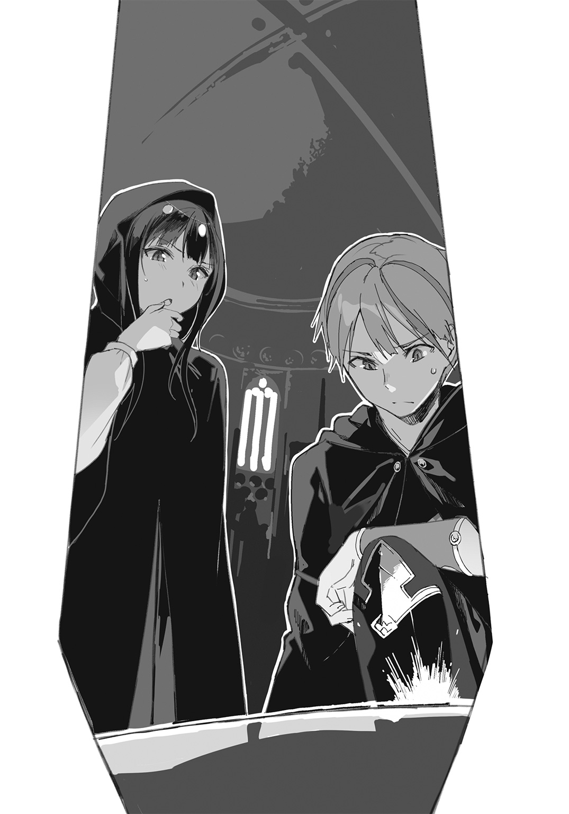
「そうか......これは〝ウージェーヌの人造生命〟......」
――何のことだ？
オレはシメオンに鋭く目をやった。
「それは、死霊術の何かか？」
シメオンが頷く。微かに肩が震えていた。
「あの生っている〝実〟はなんだ？」
「ご想像通りのもの――だと思うよ」
その時オレが想像していたのは、あの膜に包まれた胎児がすべてザハリアーシュと同じ顔をしているという......悪夢のような絵だった。
「つまり、ああして不死王の肉体を次々に生産しているのか......？」
「そういうことだろうね」
シメオンは骨の木の根元を小さく指さす。その植木鉢に当たるのは、半球形の水槽だった。水槽の中には、どろりとした鮮紅色の粘体が溜まっている。人間なら脊髄に当たる部分が、その粘液――〝不浄な血〟を吸い上げているものらしい。
祭司たちはその水槽の中身を調べ、甕で継ぎ足したり〝肥料〟らしき液体を加えたりしているようだった。
「次の部屋に行こう。ボクはあの甕の中身が気になる」
そこには、いくつもの溜め池が作られていた。
池には〝不浄な血〟がなみなみと貯まっている。それぞれの池は水路で連結しており、その水路の途中には、濾過のためだろうか、水草が濃く茂っていた。
粘液がひどくのろのろとした速度で流れている。
鮮やかな真紅の池から遡って見ていくと、粘液はだんだんと黒ずみ、紅色から暗い赤へ、そしてどす黒く濁った血の色へと変化していく。
「これは......傀儡兵に使われているものと、元は同じなのか？」
「......そう、なんだろうね」
どす黒い池は壁際に張り付くように半円形に作られていた。
煉瓦を組んだ壁だ。そこに、公衆浴場の湯出し口に似た小さな穴がたくさん開いている。それらの穴からは、チョロチョロと染み出すように赤い滴が落ち続けていた。
わずかずつ......しかし、絶えることもなく。
長い時間を掛けて集められた集積が、このなみなみとした量の〝不浄な血〟となったのだろう。
「あの壁の穴の向こうはどうなっているんだ？」
「たぶん、上の階につながっているんだと思う。そこで、傀儡兵どもが死体から血を絞り出して下に流している」
「死体......!?」
「〝不浄な血〟の原料は、人間の新鮮な血液なんだ。知らなかったかい」
この部屋でも祭司たちが何人か、忙しく働いていた。何種類もの薬液を量り、溜め池に流し込んでは櫂のような道具で混ぜている。
――これだけの量の血液を集めるのに、いったい何人......ッ！
平然とした顔で作業を続ける〈毒龍の祭司〉たちが、突如不気味な存在に感じられた。何か人間として重要なことを忘れ去っている。まともじゃない。
オレは、壁に開いた小さな穴から、無数の人々の苦痛の声が漏れ聞こえてくるかのような気がした。
赤黒い滴がチョロチョロと流れ落ち続けている。
あの向こうには、間違いなく誰かの死体が......。
「......愛せねぇな......」
オレはギリッと奥歯を嚙みしめる。
「ドーン、落ち着いて」
シメオンがオレの腕にそっと手を絡める。シメオンの身体の震えが伝わってきた。フードの中を覗き込むと、青ざめた顔と向かい合うことになった。
「......だめ......。情報を......持って帰らなきゃ」
「わかってる」
オレはシメオンの背中をそっと叩いた。
――怖がりのくせに、妙に我慢強い。昔から相棒はそうだった。
と、通路の方から大きな声で呼びかけるのが聞こえてきた。
「集合！ 集合っ！」
「全員、手を止めてお迎えしろ。全員だ！」
祭司たちが仕事を放り出して通路へ集まっていく。
――何事だろうか。
オレとシメオンも祭司たちに混じってそちらへ向かった。
「......陛下だ」
「整列しろ！」
「くれぐれもご無礼のないように。......命が惜しければな」
ざわざわと祭司たちの話し声が聞こえる。
シメオンとオレは顔を見合わせた。――陛下？ その尊称に当たる人物はペルネケス帝国に一人しか......いや、三人しかいないはずだ。
そして、ざわめきが引いていった。
通路の両脇に祭司たちが列をなす。オレたちは密かに柱の陰に隠れ、様子を伺った。
足音が聞こえてくる。
誰かが通路を進んできている。
場の緊張が、ひときわ高まった。空気が凍り付くようだ。
――間違いない。
やつだ。
「......不死王、ザハリアーシュ......！」
一人の男が姿を現した。
最高位聖職者を示す〝紫闇のローブ〟。それに染め抜かれた固有の紋章。ふてぶてしいまでの威厳を称えた老人の顔。片手にねじくれたような意匠の錫杖を握っている。
――ギリッ
――ギリリッ
――ギ、ギギギギギ......
オレの奥歯に力がこもっていく。恐怖ではない衝動で身体がガタガタと震えた。ああ、煮えたぎるようだ。あいつだ......そうだ、あいつなのだ。
あのクソ野郎こそが！
「ドーン」
息を吐くように囁く声が、耳のすぐ側で聞こえる。だが心には届いてこなかった。自分で自分が抑えられない。我ながら驚くほどの怒りの量と持続力だった。七年経ってなお、オレはまだあの日の想いを忘れていない。
その事実に、うっすらと喜びすら感じた。
「だめ......記憶を読まれる」
「その前に息の根を止めればいい。一撃でな」
食いしばった歯の間から漏れた呟き。オレの腕をつかむ手が力を増した。
「駄目だよ！ あの切り札は使えない。あれが本物の不死王とは限らないんだから」
「必要ない。他の聖剣でも殺れる」
「それこそ無意味だ。とどめを刺せないなら、かえって警戒を招くだけだよ」
「意味ならある」
引きつった笑みが自分の顔に浮かぶのがわかる。
「――少なくとも、一人減るんだからな。三人とも斬ればそれでおしまいだ」
オレは相棒の手を振り払った。
全身のルーンを起動。走り出しざまローブを脱ぎ捨て、自在鞘の蓋を開く。
「ザハリアアアアアアアァァァ―――――――――――シュッッッッ！」
剣を抜いた。
もう、止められない。
オレは〝シカのルーン〟の力で高く跳躍し、太い柱を蹴って躍り上がった。列をなす祭司たちの頭を飛び越え、不死王の後方頭上から襲いかかる。
空中で大きく広げたオレの両腕には、既に抜き身の聖剣があった。
「――シャアアアァァアッ！」
右手で〝ルーンの追跡手〟を投げ放つ。短剣が不規則な軌道を描いて不死王を狙った。
ザハリアーシュは驚きつつも、不意を打たれてはいなかった。ヨウシアの言ったとおり、頭上も背後も見えているのだ。老人の肉体とは思えぬ身のこなしで短剣を払いのけ、オレを訝しげに睨み上げる。
間髪入れず、左手の細剣が伸び、鞭のようにしなって不死王を襲った。〝クーガの指〟だ。ザハリアーシュは、それをも飛び退って躱した。刃に巻き込まれた周囲の傀儡兵と〈毒龍の祭司〉たちが血しぶきを上げて斃れる。
「オオオオォォォォ」
オレは地に足をつけると同時、突撃した。ルーンで強化された脚力にものを言わせて急加速。血煙のど真ん中を突き破って不死王に肉薄する。
空になった右手で、新たに剣を抜いた。
〝冬薔薇〟。長大な両手持ちの十字剣も、〝熊のルーン〟で増強された筋力なら難なく片腕で扱える。
――神々の御許へ行け。
迷いなく、澄み切った意思で剣を繰り出す。右からの振り下ろしの一撃――それと同時に、やつの背後からは〝ルーンの追跡手〟が戻ってきている。あの短剣は自ら宙を飛び、狙い定めた敵を執拗に追う猟犬なのだ。
不死王は目で追うこともなく横っ飛びし、背後からの短剣を避ける。オレは体幹の力で強引に十字剣の軌道を変え、横薙ぎに刀身を叩きつけた。
ザハリアーシュがとっさに錫杖を掲げ、〝冬薔薇〟を受け止める。
――ギギギッギリィッ
嚙みしめた奥歯が鳴る。不自然な体勢からでも、渾身の力で押し込んだ。受け流そうとした不死王の体勢が崩れる。オレは左手の〝クーガの指〟を引き戻し、低い角度から突き上げた。
「――っ!?」
刺さった。
細剣の刃がやつの腹部を貫き、背中まで抜けている。ザハリアーシュの苦悶のうめきが耳を打つ。
――これは新事実だ。
そう、オレは思った。
――不死とうそぶく輩でも、痛みは感じるらしい。
左手の刃をねじりざま、右手の十字剣を押し込む。ザハリアーシュよ、この無双の剛剣の切れ味を思い知れ。岩だろうと鉄塊だろうと、たとえ城壁であろうとこの刃を止めることはできない。
――ギギッ
――ギギッギギギリッ
欠けることを知らぬ〝冬薔薇〟の刃が、ねじくれた錫杖へめり込んでいく。
不死王がカッと目を見開き、両手で錫杖を支えた。だが間に合わない。〝冬薔薇〟が錫杖を真っ二つに切断した。美しい半円を描いて、剣先が走り抜ける。オレは腕を交差し、足を踏み出して半身の姿勢を取った。
不死王の胴体が輪切りになって飛ぶ。
噴き出した血が、床に長く太い線を引いた。
錫杖の残骸をつかんだままの上半身が山なりの放物線を描き、三アームも向こうで着地して、ごろごろと転がる。ローブの下からのぞく左の手首に、あの銀色の腕輪が嵌まっているのがやけに目に焼き付いた。
何秒かの沈黙。
祭司たちの混乱した叫び声が上がった。不死王の下半身がドタッと倒れる。不死王は動かない。死体になったのだ。
......斬った。
絶対に致命傷だ。生きているはずがない。
オレは、不死王を斃した――。
「......ドーンッ！」
シメオンがオレの名を叫ぶ。
その瞬間。
これまでに感じたことのないほどの異様な気配がオレを襲った。動物的な直感で顔を跳ね上げ、広間の方を凝視する。
すり鉢状に並んだ透明な棺の群れ。
その蓋の一つが、ドムッ......と、天井まで跳ね上がった。
蹴り開けたのだ――と数瞬掛かって理解する。
棺の中から、一糸まとわぬ姿の壮年の男が立ち上がった。睥睨するような不遜な目つきで、血の海と化した通路を眺めている。
そこで、両手に剣を提げたオレに目を留めた。
「......何者だ」
問いかけると同時、オレの頭を不快な感触が襲う。喩えるなら、頭蓋骨の内側を直接指でまさぐられるような......まさか、これは。
「ッ!?」
ザハリアーシュの双眸が妖しく輝いている――記憶を読む力か!? まずいッ！
「......ィィィ......キキィィィ......!!」
その時、シメオンのリュートが異様な不協和音を放った。相棒の喉から、聞いたこともないような軋り声が出ている。いったい、人類の発声器官でこんな音が出せるのか、と疑うような不気味な声だった。
「......ァァウゥゥ......ィィィンンン......!!」
――〝歌〟......なのか、これも？
聴いているうちにこめかみに鋭い痛みを感じ、オレはかぶりを振った。不死王も同じように、耳を押さえて顔をしかめている。
「......大丈夫、ドーン？」
シメオンがオレの傍まで近づいてきて言った。体力を消耗したのか、肩で息をしている。
「今のはなんだ？」
「〝搔き毟る歌〟。集中をかき乱す術だよ。ドーン――まだ読まれてる？」
「......いや」
オレの頭部を襲った不快な感触は消えていた。シメオンは、ザハリアーシュの読心能力を攪乱するために今の〝歌〟を放ったのだろう。
「逃げよう、ドーン。勝てない」
「馬鹿を言うな」
オレは唸るように言った。
「あの野郎も斬り捨てる。何体来ようと、全部ぶった斬ってやる」
「ドーンっ！」
新たな肉体を纏った不死王が棺のへりをまたいで降りてくる。ゆっくりと、調子を確かめるように。
......乗り移る、とかなんとか、あの祭司たちが言っていた。これがそれなのだろうか。殺されても、その精神が〝予備〟に乗り移って生き返る。大量に、無尽蔵に用意された予備の肉体が、無限の命を保証するというわけだ。
――いくら殺しても蘇る、だと？
「ふざけろ。蘇らなくなるまで殺し続けてやる」
「落ち着いて。冷静になってよ」
「オレは冷静だッ！」
虎のように吠えて、オレは再び突撃した。
「斬って殺せるやつが、不死身であるものかぁッ――！」
不死王が嘲笑の形に口を歪める。オレを迎え入れるかのように、両腕を大きく広げた。
「フハハハッ！ 何百年ぶりだろうな、おまえのような馬鹿者はッ！」
――......ォォォン......
腹に響く重い唸りが空気を震わせる。〝忌まわしき龍の咆哮〟。この能力は知っていた。だが、直近の距離で浴びるのは初めてのことだ。
その威力は凄まじかった。
唸りは際限なく高まり、空気どころか物体すべてを振動させ、地鳴りと化す。天井の岩盤に罅が入り、立ち並ぶ柱があたかも砂のように崩れていった。
音だけで、ただの咆え声だけでだ。
――......ギァァァァァ......
あの男の背後に毒龍グウェヌインの影を見たのは、幻だったのだろうか。
床が崩壊し、地面に大穴が開く。逃げ遅れた傀儡兵どもが地割れに呑み込まれていった。
オレは這うような低い姿勢で揺れをこらえ、なおも不死王へ接近する。
〝クーガの指〟が長く伸びてザハリアーシュの足下を狙った。壮年の姿をした不死王は、機敏な動きで滑るように回避し、ふと姿を消した。
文字通り、目の前でかき消えたのだ。
――透明化能力か！
「チッ......どこへ――!?」
「ドーン、前ッ！」
とっさに〝冬薔薇〟をかざし、守った。見えない衝撃が刃の上から襲ってくる。拳か、蹴りかもわからない。
もう一度来る。気配だけで拍子を読み、〝アルマジロのルーン〟を起動。頑強な防御力を得て打撃に備えた。
――ガンッッ
両足が地面から浮いた。腹だ。冗談ごとではすまない膂力だった。馬上槍をも跳ね返すルーンの防壁の上から、染み通るように衝撃が突き抜けてくる。内臓がでんぐり返って口から出るかと思うほどの一撃だった。
視界が灰色に濁り、右手から十字剣がすべり落ちる。
――ギギ
――ギギギ、ギリリリ
奥歯を嚙みしめてむりやり意識を引き戻す。痛みを殺意で黒く塗りつぶし、黒く、黒く塗りつぶし――全神経を左手の握力に集中し、剣を振るう。
〝クーガの指〟の刀身を、やつの透明な身体に巻き付ける。
捕らえた。
「......ガァァァッッ！」
〝ルーンの追跡手〟を呼び戻す。短剣がひとりでに浮き上がり、見えない不死王に突き刺さった。
「............ッッ」
空間が血に染まる。左手にもがく手応えが伝わってきた。オレは空いた右手を使い、やつに刺さった短剣の柄を握った。抜いて、突き刺す。もう一度。さらにもう一度。手当たり次第に、何度も抜いては刺した。めった刺しだ。
「ガアアアアァァァッッ！」
勘で見当を付け、たぶん頭だと思うところをぶっ刺した。敵の動きが止まる。仕留めた、という手応えがあった。透明化が解け、血まみれの死体が目の前で崩れ落ちる。
「......ハッ......ハッ......ハァッ......」
目が霞む。異常に身体が重かった。さっきの一発で臓器に傷を負ったか......骨もどこか折れているな。それに〝獣骨のルーン〟の反動もある。効果時間が切れかかっているのかもしれない。
――......ッ!?
弾かれるように顔を上げた。
棺の蓋がまた開いている。十三、四歳の少年の姿。若いザハリアーシュ......みずみずしい肌と艶やかな黒髪を持った、美貌の不死王。
「素晴らしい腕の剣士だ。余を二度も殺すとはな」
――〝不死身〟......。
その言葉がオレの脳裏に浮かび上がった。
認めたくはない。生まれた者はいずれ死ぬ。それが摂理のはずだ。だが......。
――やつだけは、例外なのか。
幻想だ。そんなはずはない。ザハリアーシュとて殺せば死ぬ。そのはずだ......そう思いながらも、オレの胸からは〝不死〟という幻が消えなかった。
〝王とは幻想を見せるものである〟――と、クラウス兄上が幼いオレに語ったことがある。民に平和と団結という幻を見せる者。その幻想を追って民は王に従う。そして民の力によって幻は現実となるのだ。それが光の王の姿なのだ......と。
もしその言葉が本当なら、ザハリアーシュはまさしく〝闇の王〟だ。
永遠の絶対支配者という幻想を見せる者。
不死の王......。
「殺してやる......殺してやるぞ、ザハリアーシュ......」
あるいは幻想に屈した方が楽なのだろう。すべてを委ねて支配されてしまった方が、苦痛はずっと少ない。ノイ＝アプト大陸のほとんどの人間がそう思い、不死王に従っている。それがペルネケス帝国という巨大な闇の正体なのだ。
だがそれは、オレには決して赦されない生き方だった。
何より、オレ自身が赦さない。
「......殺してやるッ！」
「不可能だ、下郎」
――言いやがったな。
――そいつを言うと、オレはかえってやる気が出るんだよ！
苦し紛れのように笑みが浮かぶ。歯を剝き出し、力一杯食いしばった。目が霞んできている。口の中に鉄臭い味が広がる。嘔吐感を催し、ペッと吐き捨てた。
「......ドーン」
シメオンが傍に寄ってきた。
「ここで命を捨てちゃだめだ。逃げよう」
返事をする余裕がなかった。
相棒の腕が背中を支えてくる。オレの目は吸い付くようにザハリアーシュに向かっていた。
やつは棺から出て、ふわりと宙に浮かんでいる。......浮遊能力。なんて化け物だ、あるとされている能力は全部あるのか。一つくらいは勘違いであってもいいだろうに。
「余の前で名乗ることを赦そう、聖剣使いよ」
ザハリアーシュがオレに言った。
オレは嗤って言い返した。
「お願いしますと言ったら教えてやろう、下賤の死体使い」
「............ハッ。死ね」
不死王の口がカッと開いた。
紫色の煙が渦を巻き、大量に噴き出す。毒の吐息だ。〝腐蝕の激毒〟――すべてを腐らせる汚染物質の霧。
その毒煙が怒涛をなし、通路を埋め尽くすほどに流れ込んだ。
「フハハハハッ！ 至尊の皇帝に逆らう下郎よ、腐り堕ちて死ねッ！」
〝冬薔薇〟、〝ルーンの追跡手〟、〝クーガの指〟。オレは三本の聖剣を素早く呼び戻して、鞘に戻した。そして新たに二本の聖剣を抜く。
〝聖女ガリエルの宝剣〟。
そして〝ピィアの守護剣〟。
「おおおおおおっ」
背にシメオンをかばい、刃のない長剣で毒煙を切り裂く。視界を覆う濃い紫を、純白の光明が次々と払った。さらに〝ピィアの守護剣〟が風を巻き起こし、毒素を吹き散らす。
「――ほお、まだ粘るか」
ザハリアーシュの声がすぐ間近で聞こえた。
ぞわり、と悪寒が走る。
透明化して毒煙に紛れ、攻撃をしかけてくるつもりだ。
......まずい。全く反応できない。身体が重い......油が切れたのだ。
――こんなときに！
「ドーン、危ないッ！」
シメオンだった。
身を投げ出すようにしてオレに覆い被さる。
シメオンは、透明化した不死王の姿をはっきりと目で追っていた。魔法で姿を隠したものを視る力、〝精霊の目〟だ。
「......シッ」
シメオンは鋭く息を吐き、腕と拳を使って透明な不死王の打撃を捌いていく。目を見張るような、見事な格闘術だった。相棒もこの七年、様々なことを学んでいたらしい。
「ハァァッ......セイッ！」
シメオンはオレを突き飛ばしざま、後ろ回し蹴りでザハリアーシュを壁に叩きつけた。さらにリュートを搔き鳴らし、歌唱魔法を放つ。
「......疾風よ！」
〝砕く拳の歌〟だ。風を衝撃波と化して敵にぶつける法であった。
空気が波打ち、不可視の矢となって不死王を撃つ。透明なまま、人型の形に壁がめりこんだ。あたかも巨人に踏みつぶされたかのような激突の痕跡が残る。
......だが。
透明化を解除したザハリアーシュが、少年の顔で厭らしく嗤った。無傷だ。
〝傲岸なる無敵〟――不死王は〈光の三神〉によって聖別された武器でなければ傷つかない。
「......ガァッ！」
不死王が咆えた。もはや音波の塊というより、巨大な衝撃波だ。空気の震えそのものが凶悪な暴力となって襲いかかってきた。
オレの前にシメオンが立っている。
シメオンは歌唱魔法でそれに対抗しようとしていた。
一瞬のこと。
相棒がどんな術を放ったのかはわからない。ただ、シメオンはほぼ正面からまともに衝撃をくらった。もちろん、オレが背後にいたからだ。
オレをかばったのだ。
かばわれた――あの、臆病で小柄な幼馴染みに。
衝撃が通り過ぎる。
シメオンの細い身体がふらふらと泳いだ。倒れそうになる。しかし、ぐっ、と脚を踏ん張り、立ち直った。
「が、ふっ」
鮮血を吐く。
「シメオン！」
オレは駆け寄って支えた。
「......大丈夫......。逃げよう、ドーン。支援するから」
シメオンの美しい唇から、大量の血がこぼれていた。顔色は雪のように真っ白で、黒髪は乱れ、べったりと頰に張り付いている。
だが、瞳から意志の光は失われていなかった。
シメオンは諦めていない。執念深く、何かを狙っている。
その相棒の顔を見て、オレはようやく、すぅっと頭が冷えた。......情けないことだった。オレは自分を見失っていた。怒りに我を忘れていたのだ。
「チッ――愛せねえな」
「ごめん」
「おまえのことじゃない。わかった、ここは退こう。手筈は？」
こそこそと耳元で囁き合う。
「〝歌〟でドーンの体力を回復させる。なんとか不死王の注意を逸らして、大穴まで飛び出してくれ」
自力で走れるか、とオレは一応訊いた。
「......無理。悪いけど、抱えていってほしい」
オレは頷き、シメオンのために片手を空けた。〝聖女ガリエルの宝剣〟を鞘に戻し、代わりにシメオンの腰を抱える。
その間、ザハリアーシュは身をよじって壁から身体を引きはがしていた。姿は少年でも、怪力は変わらないらしい。加えて言うなら、おそらくやつには壁抜けをできるような能力はない、ということか。
シメオンがリュートを鳴らし、歌い始める。
「......戦士よ......勇者よ......兵の勲よ......」
〝勇猛の歌〟だ。
烈しい拍動に突き動かされるように力が湧いてくる。いにしえの戦では兵士たちを鼓舞し、ただの農民すら勇者に変えたというスヴェロスの歌唱魔法。聞く者の心に勇気を奮い起こし、手足に戦う活力を付与する。
――どうやら、もう少し振り絞れそうだ。
「いくぞ、シメオン」
ザハリアーシュが立ち上がってこちらを睨んでいる。一糸まとわぬ少年の姿ながら、異様な迫力が発散されていた。
オレは左手の直剣を構え、その凝視を受け止める。
〝ピィアの守護剣〟が風を纏い始めた。
剣の先端に風が集まる。守護剣の力でつむじ風を起こし、その渦をさらに集めた。小さな竜巻にまで成長させ、そのまま周囲の瓦礫をなぎ払う。
「くらえッ！」
傀儡兵たちが落とした槍斧や砕けた壁の破片を巻き込んで、竜巻がザハリアーシュを襲った。
むろん、そんなものが効く相手ではない。敵の足を止めたかっただけだ。
不死王が嗤い、飛んできた槍斧をうるさそうに打ち払う。
「シメオン、つかまれ！」
オレは腹の底に力を入れ、守護剣の飛翔能力を使った。四つの足が地面から離れ、後方に向かって飛ぶ。さらに風の力で推力を高める。
ゴゥ、と噴射するような勢いでオレたちは通路を突っ切った。
そのまま岩壁に体当たりする。壁の向こうは、螺旋階段のある垂直の大穴だ。普通ならそのぐらいで崩れる壁ではなかったかもしれないが――今は不死王の毒の吐息で腐蝕している。
オレたちは一発で壁を崩し、向こうの空間へ突き抜けた。
「逃げるつもりか。小癪な」
不死王が追ってくる。地を蹴り、空中を鳥のように自在に舞った。竜巻による空気の壁をあっさりと突き破り、まるで問題にもならないかのように迫ってくる。
「くそ......」
「......疾風よ！」
シメオンがリュートを搔き鳴らした。〝砕く拳の歌〟。空気の弾丸が不死王へ向かって飛んだ。
それはザハリアーシュの前方で上に外れ、通路の岩盤を砕く。
――いや、外れたのではない。
それこそがシメオンの狙いだったのだ。
「......ぬっ!?」
不死王が見上げる先、天井が一気に崩れはじめた。もともと、〝忌まわしき龍の咆哮〟でヒビの入っていた岩盤は、シメオンの〝砕く拳の歌〟でとどめを刺された。
岩塊がガラガラと崩落する。
不死王はそれに巻き込まれ、行く手を遮られた。
「ドーン、上へ！」
オレは〝ピィアの守護剣〟の切っ先を下に向け、一気に風を噴射した。シメオンの腰をしっかり抱え、天を目指す矢となって暗黒の大穴をぶっ飛ぶ。
穹窿状の天井が見えてきた。無数の海星が緑色の照明となり、天井を円形に縁取っている。
「少し我慢しろ！」
オレはシメオンの服を口でくわえ、右手を空けた。天井が目の前に迫ってくる。聖剣の鞘から〝冬薔薇〟を抜き、一、二、三、と三度振るった。
穹窿に三角形が描かれる。
オレは飛び上がってきた勢いを付けて、思い切りその真ん中を蹴っ飛ばした。
三角形が天に向かって持ち上がる。
青空が見えた。
天井の向こうは荒れ野になっていた。枯れた草が寂しげに揺れる地面に、オレとシメオンはどたっと落ちた。
――とりあえず、命はあった。
「ここは？」
シメオンも生きている。
「地上だ。たぶん例の毒沼の近くだ」
ドシン......と大きな音がして、そちらを見ると、オレが斬った三角形の岩塊が倒れたところだった。
「相棒、葡萄酒をくれ」
シメオンがふらふらと立ち上がり、腰の水袋をくれた。オレはそれを一息に飲み干した。
蜂蜜と桂皮のたっぷり入った、革の匂いのする葡萄酒だった。蜂蜜の甘さと葡萄の酸味、酒精が全身の血管をめぐり、目が覚めていくような思いがした。
「水もくれ」
オレはシメオンからもう一つの袋ももらい、それも呑み干した。すると、もう少し動けるようになった。
立ち上がって腕をぐるぐる回し、大きく伸びをする。
「シメオン、オレの背中に負ぶされ。〝シカのルーン〟で加速して一気に距離を稼ぐ」
「不死王は追ってくるかな？」
シメオンは三角形に空いた穴を振り返る。そうとう大きな土砂崩れが起きたのか、穴からは黄色い土埃が高く舞い上がっていた。
「あれで素直に死んでくれるぐらいなら苦労しない」
「違いないね」
シメオンは腕を回し、オレの背中にしがみついた。オレはふんと気合いを入れると、シメオンの両足を抱え、猛烈な速度で荒野を走り出した。
目指すはヨウシアのもとだ。
四章 死霊術師の永遠と慈悲
〝ヘラジカ亭〟に戻ってみると、もぬけの殻だった。用心深いヨウシアは、既に居場所を移していたらしい。
「ヨウシアめ、困った奴だ。これではつかんだ情報を伝えられないじゃないか。店もやっていないし......」
オレは店内を見回す。妙にがらんとしていた。テーブルと椅子は残っているが、食器類も雑貨も片付けてしまったらしい。ここに戻ったらたらふく食べるつもりでいたのだが、当てが外れた。
一応地下にも降りてみたのだが、ここもすっかり引き払われている。
あの手紙の山が詰んであった古い丸テーブルの上には、黄ばんだ羊皮紙の端切れが一枚載っているきりだった。
〝鳥を呼べ〟
と、意味不明な言葉が記してある。
「......ふむ」
シメオンが得心したように頷いた。だいぶ回復したようだが、まだ傷が痛むのか、脇腹をかばうような格好で立っている。
「ヨウシアはスヴェロスの魔法にも精通しているみたいだね。ドーン、ついてきて。接触方法がわかった」
シメオンはオレを促して建物の二階へ上がった。上階は宿泊施設になっていたようだが、今は使われていなかった。
シメオンは窓の鎧戸を大きく解放する。眼下には荒れ果てた町並み、枯れた木々、崩れた街路。乾いた埃っぽい風が舞い込んでくる。
窓のへりに腰掛け、シメオンはリュートを膝に乗せた。
「......雲の影......そよ風......若葉のそよぎ......」
シメオンの声が風に溶けてゆく。
気持ちの安らぐような甘い声だった。
「......遠く遙か......山の向こう......海の彼方......そして今ここ......」
聞き覚えのある歌だ。そうだ、たしか城の内庭で......シメオンが習い始めの歌唱魔法を試すと言って歌い出したのだ。フェリシテもそこにいたと思う。いつだっただろうか――今よりもずっと子どもの頃のこと。遠い昔のことのようだ。
「......翼ある子らよ......耳にせば寄り来たれ......」
オレは周囲を見張り警戒していたつもりだったのだが、いつしかシメオンの声と、その歌う姿に見惚れていた。
魔法の効果ではない。ただ、美しかったからだ。
窓の辺りに小鳥が集まってきていた。シメオンの奏でる甘やかな旋律に酔いしれるように、色とりどりの羽を並べて休んでいる。
「......来たね」
一羽の大きな白鳩がやってきて、小鳥の群れを散らす。白鳩は窓から部屋の中に飛び込んできて、天井近くの燭台に留まった。
シメオンは歌うのをやめ、白鳩を指さす。
「ヨウシアの伝令役だ」
スヴェロスの魔法には、鳥や動物と心を通わせ、自在に操る法が存在する。これはそれによって遣わされた鳩なのだろう。
オレたちが燭台を見上げていると、なんと白鳩は人の声で喋りだした。
「......この伝言を聞いているということは、生きて戻ってくれたということだな。よくやってくれた。さすがだ」
その声も口調も、ヨウシアそのままだった。
「突然身を隠してしまってすまないと思っている。危険を避けるためだと理解してほしい。お詫びに......といっては何だが、ささやかながら支援物資を送りたい。ヘラジカ亭の隣の宿屋で名前を告げてくれ。そこの主人がよくしてくれるはずだ。それと、もし何か情報をつかんでいるのなら、この鳩の足に手紙を結んで返してほしい。こちらに頼みたいことがあるときも同様に。以上だ」
白鳩は言うだけ言うと、黙った。
いかにも鳥らしく、首を前後に揺らしている。
「おい、鳩。それは、隣に行けば食い物にありつけるということか？」
「こっちから話しかけても反応しないよ。鳥に託して言葉を伝えるだけの魔法なんだ」
オレは舌打ちした。
「......なるほどな。鳥自身は言葉がわからないから、もし記憶を読まれたとしても大丈夫というわけか。考えたものだ」
シメオンがヨウシアに手紙を書き、それを白鳩の足に結びつけた。手紙の内容は、〝皇帝廟〟が不死王の複製体を作るためのものであるということ、そのおぞましい精製法、それに廟の一つを壊滅させたことなどだ。
それが済んだあとオレたちは隣の宿屋に向かい、宿の主人に会った。それは〝ヘラジカ亭〟で銅のグラスを磨いていたバーテンダーだった。
「実は、二軒とも同じ人間がやっていたってわけさ」
主人はそう言って笑い、オレたちにたっぷりごちそうを分けてくれた。
ほろほろとして甘い干し肉や、乾燥させた豆、乾パン、オリーブの瓶詰めに、甘酢漬けの野菜。塩辛い干鱈、蒸留した葡萄酒、おまけに、今朝絞めた鶏を数羽と新鮮なレモンまでつけてくれた。
さらには、馬も一頭。辛抱強そうな栗毛の牝馬だ。
「すぐここを離れるといい。あんたがたは目をつけられてるよ。じきに必ず追っ手が掛かる」
「だろうな」
宿の主人に丁重に礼を言い、オレとシメオンはすぐに旅立った。
「西へ向かおう」
シメオンが言った。
「なぜだ？」
西はペルネケス帝国の方角。敵の懐だ。
「それは道々説明するよ」
「わかった」
オレは手綱を操って馬首を西へ向けた。シメオンはオレの後ろで横乗りになり、オレの腰に腕を回して、抱きつくような格好で姿勢を安定させていた。
馬が常歩で進み出すと、シメオンは囁くように歌い出した。傷をいたわり、体力を回復させる〝快癒の歌〟だった。
西へ行くほどに荒れ地が広がっていた。
怖ろしくなるほどの広大な荒野。黒い岩と砂と乾いた風、そして虚ろな天空だけの世界。本当にこの先に人が住んでいるのかと疑いたくなるような、茫漠とした道のりだった。
ここから先はノイ＝アプト大陸。
いにしえの文明が眠る地、今よりも古き神々が存在していた土地......そして今は、不死王の支配する暗黒の領土だ。
「そろそろ教えてくれ、シメオン。目的地は？」
オレたちは騎馬で進んでいた。
ザハリアーシュの追っ手は近づいていない。何しろ全周囲、見渡す限りの平らな荒野だ。怪しい者が近づけばすぐにわかる。
「〝ウージェーヌ〟だよ」
「それはどこだ？」
「地名じゃなくて、人名。〝大死霊術師〟ウージェーヌ＝ラキス」
シメオンの言葉に、オレは首をひねった。
「聞かない名だ。西大陸の術師か？」
「そうだよ。聞いたことぐらいはあるはずだけど」
しかし聞き覚えがなかった。ウージェーヌ......ラキス？
「はて......。最近の腕利きなら、剣士でなくともある程度耳に入っているはずだが」
「最近じゃない。百五十年前に不老不死の法を達成したという人物だ」
そう言われて、ようやく思い出した。
「ああ！ あの、子ども向けの絵本に出てくる魔女か！ 実際は詐欺師の類いだったと聞いたが。不老長寿の薬を与えると言って、年寄りの貴族から大金をむしり取ったんだろう？」
「そう信じているのは東大陸とピィア小大陸の人間だけだよ」
シメオンはくすっと笑った。
「不老不死への好奇心と〝こうだったらいいな〟っていう希望的憶測から作られた、空想の物語さ。絵本も、詐欺師の逸話もね。......事実はもっと怖ろしい。実在してるんだ、魔女ウージェーヌは。そして今も生きている」
「何を馬鹿な」
オレは一笑に付したが、シメオンは笑わなかった。
そこでオレは考えを改めた。
「......なるほど。不死王のような化け物がいるのだから、魔女がいたっておかしくはないか。だがそれとこれと、どう関係する？」
「〝皇帝廟〟でボクは、あの骨の木を見た。そこでこう推理した。ザハリアーシュの死霊術は、ウージェーヌのものに近い。二人には何らかの関係があるはずだ......もっと具体的に言えば、ボクはザハリアーシュはウージェーヌの弟子筋に違いないと考えてる」
シメオンはこう語った。
死霊術は学校で教えてもらえるようなものではない。〈闇の三神〉によって賜る魔法であり、宗教および宗教組織と切っても切れない関係がある。その技法も、流派や師匠筋によって受け継がれていく傾向がある。
したがって、似た魔法を使うとすればそれは同じ〝筋〟だと考えて間違いない、と。
「〝皇帝廟〟で行われていた複製体の精製――あれは〝ウージェーヌの人造生命〟という秘法なんだ。名前だけが有名で、長らく実態のわからない伝説の魔法だった。ボクもこの目で見るまでは、ただの法螺話だろうと思っていたよ」
シメオンは怖ろしげに言った。
「けど、それは実在した。それも不死王ザハリアーシュが使っていたんだ」
オレは馬上で静かに揺られながら、シメオンの推理をとくと考え直してみた。なかなかに荒唐無稽な話だった。
「......おとぎ話の魔女が、やつの師匠だと？ シメオン、それは本気で言っているんだな」
「本気だよ。死霊術はそう簡単に覚えられるほど単純じゃない。ザハリアーシュは誰かから不死の法を学んだんだ。そしてそれは十中八九、ウージェーヌ自身だと思う。年代的にも合っている。ウージェーヌの技法の完成が百五十年前、不死王の即位と侵略の開始が百三十年前だ」
「なるほど、そうか」
オレは得心した。
「そのウージェーヌに会えば、ザハリアーシュの〝不死の謎〟がわかるかもしれないと、そういう目論見なんだな」
そういうこと、とシメオンが頷く。
「だが、教えろと言って素直に教えてくれるものかな」
「さあ。わからないね」
シメオンは、どこかふてぶてしい口調でとぼけてみせた。
「どう聞き出すかは、またその時に考えるよ」
「違いない」
オレは笑った。まったく頼もしい相棒だ。
「――シメオン。オレはおまえに謝らなきゃならないことがある」
神妙に切り出し、ちらりと振り返る。
「実を言うと、オレはこれまで、自分が一人で不死王を討つものだと、どこかでそう思い込んでいた。誰にも任せられない、この自分だけが頼りなのだと......。七年前、おまえと一緒にザハリアーシュを斃すと誓ったにも関わらず、オレは自分一人で戦っているつもりになっていた。すまない」
「何を今さら」
オレは心底、反省しているつもりだったのだが、そういうときに限って、シメオンはあきれたように言うのだった。
「ドーンが一人で突っ走るのは昔から変わってないじゃないか」
「......成長がないか、オレは」
肩を落として言うと、シメオンはやれやれとため息をついた。そう言いながら、なんだか満足そうな様子でもあった。
「そうでもないさ。他人を気遣えるようになったんだから」
「ありがとう、シメオン」
「何を今さら」
シメオンはくすぐったそうに笑った。その笑顔。七年前と変わっていない笑い方......だが、時間は確実に流れている。
シメオンは美しくなっていた。オレが想像していたよりずっと賢く、強くなっていた。オレとシメオンはもう城の内庭を駆け回る遊び友達ではないし、そこに戻ることもできないだろう。
――ザハリアーシュには......。
オレはふとこんな思いを巡らせた。
――やつには時間が流れているのだろうか。こんなふうに、時の流れを感じることがあるのだろうか......。
オレたちの乗った栗毛の馬が荒野を進んでいく。
前方に分かれ道が見えてきた。大陸の北へ向かう街道と、南へ向かう街道だ。
シメオンは、北へ、と告げた。
「ウージェーヌ＝ラキスは、ペルネケス帝国の貴族でもあるんだ。つまり、自分の領地を持っている。その名もラキスという土地だ。そこに魔女の館がある」
目的地は定まった。あとは道を行くだけだ。
ウージェーヌの所領ラキスは辺鄙な土地柄だった。はっきり言えば〝ど田舎〟だ。
交通の便がとことん悪く、見知らぬ人間がやってきたというだけで、びっくり仰天の出来事と見なされるような場所だった。
それだけでなく、ラキスでは何もかもが驚異的なほど古かった。建物も、道も、生活も習俗も言葉も、そしてそこに住む人々も......。まるでオレたちが百年前の時代に迷い込んだかのようだった。
魔女の館を訪ねる前に、オレとシメオンはラキス領の村の一つに立ち寄った。食料や飼い葉を買い足すためだ。そこの雑貨屋で奇妙なものを見かけ、オレはシメオンに訊いた。
「この、歪んだまな板のようなのは何だ？ パン皿か？」
「それはすり臼だよ。棒を上で転がして、穀物を粉にする道具。ボクの曾お婆さんが昔使ったって聞いたことがある」
オレは絶句した。それがあくまでも実用品として売られていたからだ。
ラキスには手回しの挽き臼すらなかった。セレニアの都の周辺では、水車で粉挽きをするのが当然で、それどころか、挽き方の加減を変えて上質な小麦粉を得る技術さえあったというのに。
「こんなものでいちいちやっていたら、日が暮れてしまうだろう......」
「のんびりした土地なんだよ。よく言えばさ」
シメオンはそう言ったが、しかしラキスの住人は暢気というより、迷信深く排他的な者ばかりだった。話しかけてもろくに返事はなく、しかし言葉が通じないわけでもない。皆、よそ者と話すのは縁起が悪いとでも言いたげな態度だった。
ただ一つ、ウージェーヌについて尋ねると、彼らは劇的な反応を示した。
「森の奥のお屋敷にゃ、立ち入っちゃなんねえ！」
怒ったような口調でそう言い、それきり誰もが口を閉ざした。魔女を心から怖れているようだった。
はたしてそれは迷信からなのだろうか。あるいは......。
「ウージェーヌ＝ラキスは、本当にまだ生きているのか？」
森へ分け入り、暗い道を進みながら、オレは馬上でシメオンに疑問をぶつけた。
「村人たちは、誰も本人に会ったことがあるとは言わなかったぞ」
「でも、領主が死んだという話も聞いていない。なら、生きているはずだよ」
「生きていれば二百歳だ」
シメオンは頷いた。
「それが？」
「噂通り不老なら、皺くちゃの婆さんということはないんだろうが......そうとう、頭のほうも曖昧になってきてるんじゃないか？」
「......彼女の頭脳も不老であることを祈ろう」
やがて、針葉樹の森が途切れた。
道の先は小高い丘になっていて、そこに花咲き乱れる瀟洒な屋敷が建っていた。
古風な造りだが、それが決して嫌味ではない。むしろ可愛らしいとさえ感じさせる品の良さがあった。
馬を降りて近づいていくと、鉄の網格子で飾られた門がある。
門は開いていた。オレたちは声を上げて訪問を告げたが、誰も出てくる気配がない。ぼうっと突っ立っていても仕方がないので、勝手に入ることにした。
入り口をくぐると、素晴らしい庭があった。みごとな薔薇の植え込みだ。硝子張りの温室まである。よく手入れされた花々が、行儀正しく並んでいた。
「これは......」
「趣味がいいね、魔女さんは」
シメオンが嬉しそうに目を細める。オレは逆に、表情を引き締めた。
「妙だ。シメオン、警戒しろ」
「どうしたの？」
オレは屋敷の庭先を指さした。薔薇の植え込みの下だ。偽装されているが、微かに土に足跡が残っている。
獣ではなく、人の足跡だった。屋敷の召使いなら足跡を消す必要はないだろう。
では何者がやったのか。答えは一つだ。
「敵がいる。しかも結構な人数だ」
オレがそう言った瞬間、背後から何者かが高速で飛びかかってきた。
とっさに剣を抜き、反転する。
「――シッ！」
〝冬薔薇〟で宙を薙ぎ、相手の武器ごと両断するつもりで斬った。......しかし。
「軽い......!?」
手元に伝わる感触で、受け流されたのがわかった。相手の姿は見えない。魔力で身を隠しているのだ。
「ドーン、透明化能力だ！」
〝精霊の目〟を持つシメオンが指さした。そこに敵がいる、という意味だろう。
オレはその足下あたりを睨み付けた。土についた痕跡で動きを探れないかと考えたのだ。
はたして、そこには確かに何者かの靴の跡があった。
オレは透明な敵に相対して武器を構える。
「貴様――〝毒龍騎士〟か」
毒龍騎士とは、不死王ザハリアーシュが力を分け与えたという四人の特別な配下だ。その一人、〝奴隷頭〟ヌマーンは既にオレが斬った。おそらくこいつは透明化の能力を付与された別の毒龍騎士なのに違いなかった。
「クク......ヒヒ......大変鋭うございます。それに勘もおよろしい。あなた様はまことに手強い戦士でございますこと......クヒヒヒ......」
姿なき者が含み笑いとともに言った。
すうっと霧が晴れるかのようにその姿が現れる。
「ペルネケス帝国は皇帝陛下直属、〝暗殺主任〟スケイアと申します。クク......ヒヒ......」
異様な風体の女だった。
天を衝くような長身に、鋼のごとき筋肉質な肢体。その全身を黒革のベルトでぐるぐる巻きにし、顔面すらも覆っている。両手の先には鋭利なツメ状の凶器をぶら下げていた。
「ああ......こんな美味しそうな獲物は久しぶりでございます。まったく、昂ぶらせてくださる殿方ですこと......クク......ヒヒ......」
スケイアは艶めかしく真っ赤な舌をだらりと垂らした。
「ではお恥ずかしながら......クヒヒ......内臓、切り刻ませていただいても......よろしいでしょうかあああああッ！」
奇妙に身をくねらせながら、スケイアがツメを繰り出してくる。
速い。そして変則的で読みづらい攻撃だった。邪道の技ながら、達人の域にある。オレはかろうじてその斬撃を聖剣で受け止めた。
「チッ......変態め」
「ありがとうございます。もっと口汚く罵っていただいて結構でございますよ......クク......ヒヒ......」
ツメ先が〝冬薔薇〟に絡みついてくる。金属の軋る音が耳に障った。
オレは〝獣骨のルーン〟を起動し、力尽くで剣を押し込んだ。〝冬薔薇〟の切れ味なら、スケイアをツメごと押し切ることも可能なはずだ。
だが、それもフワリと受け流される。
「強引な殿方でございますこと......クヒ......」
スケイアは、まるで重さがないかのような動きでオレの後ろに回り込もうとした。オレの背後にはシメオンがいる。そうはさせじとオレは身体で進路を塞ぎ、連続でスケイアに斬りかかった。
すべて躱された。
......異様な動きだ。手応えがないというか、ぬるぬるしている。これまで出会ったことがない種類の手練れだった。
「シメオン！」
「わかってる、今援護する！」
違う、自分の身を守れ――敵は他にもいる。そう言おうとした瞬間、雷鳴のような轟音が辺りを包んだ。
もし音に色があるとしたら、その音は泡のような濁った白であっただろう。
音自体が圧迫感を持って空気を塗りつぶし、全周囲から襲いかかってくる。聴覚が泡に埋め尽くされ、空白になって消失した。
一瞬の混乱。
何も聞こえない。無音の世界でスケイアのツメがオレの心臓を狙ってくる。
「............ッ!?」
十字剣を持ち上げるのでは間に合わないと判断し、オレは逆に踏み込んだ。頭突きでスケイアの顔面を吹き飛ばす。〝アルマジロのルーン〟の防御力と〝熊のルーン〟で強化した膂力にものを言わせ、思い切りぶちかました。
「――――！」
スケイアが何かを喚きながらのけぞった。続けて〝冬薔薇〟で斬りかかると、人間離れした身のこなしで宙返りして後退する。
オレはスケイアを追撃しようとし......しかし思い留まった。
シメオンが別の敵に囲まれている。
傀儡兵どもが突然現れ、屋敷の窓から次々に飛び降りてきたのだ。数は八体。奇妙なことに全員女性型で、しかも武器ではなく楽器らしきものを携えていた。......いや、あるいはそれこそが〝武器〟なのか。
「シメオン！」
叫んだが、その声はオレ自身にすら聞こえない。さっきの轟音でまだ聴覚が麻痺していた。
それはシメオンも同じのようだ。大きく口を動かして発声しているようだが、こちらの言葉が聞こえている様子はない。
「――――！」
シメオンの手がリュートを激しく搔き鳴らした。驚いたことに、耳を封じられた状態でシメオンは〝砕く拳の歌〟を放っていた。
風の弾丸が傀儡兵たちをかすめ、屋敷の外壁を崩す。
外した――いや、違う。あえてそこを狙ったのだ。
崩れ落ちる瓦礫の中から、何者かの影が勢いよく前に飛び出す。
また、新たな敵だ。
チューバの化け物のような巨大な喇叭を背負い、指揮棒を手にした小柄な男だった。子どものようにも、中年のようにも見える年齢不詳の顔立ち。不気味なほど柔和な笑みを、紙に描いたように顔面に貼り付けている。
そいつが指揮棒を掲げると、傀儡兵たちが手にした楽器を構えた。小柄な笑い男が喇叭の唄口を唇に当て、指揮棒を振り下ろす。
と、シメオンが大きく跳躍した。ほぼ同時に、もといた位置の鉢植えがまとめて爆発四散する。
〝忌まわしき龍の咆哮〟だ。さては、あいつも毒龍騎士――先刻の聴覚を奪う轟音も、あの喇叭男の仕業だったに違いない。
――少し、まずい状況だな。
シメオンとオレとの距離が、かなり離れてしまっていた。屋敷の庭を挟んで、ほぼ反対側の位置だ。スケイアが間に立ちふさがっていることもあり、とっさには助けに行けない。
さらに、例の喇叭男の傀儡兵どもが、シメオンを屋敷の中へ追いやるように動いていた。
――ひょっとして......オレたちを分断する作戦なのか!?
間違いなかった。スケイアが敢えて透明化をしないでいるのも、オレの動きを牽制し、合流させない意図なのだろう。それだけこいつらは、シメオンとオレの連携を嫌がっているのだ。
つまりこの敵は、明らかにオレたちのことを知っている。
オレたちがどう戦うか、何の能力を持っているかわかっている。
きっと不死王が、先の〝皇帝廟〟での戦いで得た情報を、こいつらに教えたに違いなかった。そして必殺の刺客として放ってきたのだ。
ウージェーヌの館で待ち伏せを受けたということは、オレたちの行動も読まれていたと考えるべきだろう。
......なぜ読まれた？
尾行や監視をされていたとは考えにくい――おそらくはあの一瞬、記憶を読まれたときか。いやオレはあのときまだ、ウージェーヌという名前に思い当たりがなかった。
――あるいは、逆なのか？
ひょっとしてシメオンの推理が大正解で、ザハリアーシュの〝急所〟がここにあるということなのか。ここだけは探られたくないからこそ、虎の子の毒龍騎士を二人も配置した――そうとも考えられないだろうか。
もしかするとオレたちは、自分たちが考えていた以上に〝不死の謎〟に近づいているのかもしれない。
「どけ、スケイア！」
スケイアの方は耳が聞こえているのか、オレの言葉にべろりと赤い舌を出した。
長身を折り、獣のように四つん這いになってするすると近づいてくる。その姿にオレは屍肉を漁るハイエナを連想した。
「くそっ、気持ちの悪い......！」
低く横に斬り払う。
が、スケイアの動きはオレの予想の上を行った。四つん這いからさらに姿勢を低くし、刃の下をくぐって躱したのだ。
蛇のように地を這い、オレの足首を狙ってくる。
オレは足を引き、スケイアを蹴飛ばそうとした。
スケイアはそれも読んだ。
首を傾けるようにして避け、逆にオレの脚を抱え込んでくる。
「チィ......ッ！」
組み付き、そして関節をひねる技だ。達人にかかれば一瞬で骨をへし折られる。オレはひやりとしながらも自分から回転し、関節をかばった。スケイアはその勢いを利用し、掬い上げるようにしてオレを宙に投げ飛ばす。
高々と飛ばされた。なんという怪力だ。
オレは錐もみしながら宙を舞い、頭からどこかの窓に突っ込んだ。
「ぐぁっ」
突っ込んだ建物の中で、さらに落下する。オレはとっさに〝ピィアの守護剣〟を抜き、地面に激突するのを防いだ。浮遊の力を使って、どうにか足から降り立つ。
......ここは、どこだ――？
真っ暗な空間だった。オレが突き破ってきた窓からだけ、一条の光が射している。
やがて目が慣れてきて、ぼんやりと周囲の様子がわかってきた。聖堂――それも〈闇の三神〉を崇めるための礼拝所だ。
正面には九本の腕を持つ悪神、ペルネケスの像が祀られている。
大地と夜を神聖とするその教えに従い、礼拝所は陽の光を締め出す暗幕で覆われ、足下はむき出しの土だった。
......と。
一瞬、破れた窓からの光が陰った。
――スケイアだ、と直感する。
透明化能力を使っている場合でも、その身体は光や風を遮る。シメオン曰く、魔法的な効果で認識をどうたらして〝人の目に映らなく〟しているのであって、光や物質そのものを透過させているのではない――のだそうだ。要するに、たとえ目に見えていなくとも、砂場を踏めば足跡ができるし、光にあたれば影もできる。
......そうか。
それが、やつがこの戦場を選んだ理由か。
暗闇と透明――。
二つを合わせれば、影では位置がわからなくなる。この薄暗さでは、足跡もはっきりとは見えない。さらに音で気配を悟られぬよう、あらかじめ聴覚を封じた上で、逃げ場のない部屋に誘い込む......。
ぞっとするほど用意周到な罠だ。
おそらくスケイアは、例の〝暗闇でもものが見える〟という能力も不死王から与えられているのに違いなかった。こちらは敵が見えず、向こうからは丸見え。どのようにでも料理しほうだいというわけだ。
「やってくれる......」
オレは十字剣と直剣を鞘に戻し、短剣と細剣を抜いた。〝ルーンの追跡手〟。それに〝クーガの指〟だ。
〝クーガの指〟の蛇腹状の刀身を垂らし、地面を伝わせて伸ばしていく。オレの位置を中心に、螺旋を描いて範囲を広げるようにした。
指で暗闇を探るように......。
あるいは、釣り人が深い海中を探るように。
細剣の柄に仕込まれた歯車がくるくると回る。螺旋はどんどん広がっていくが、手応えはない......スケイアの居場所がまったくつかめない。
焦りを覚えた。早くしなければ、シメオンが。
――いや。
オレは思い直す。
シメオンは強い。あの喇叭男と楽器の傀儡兵どもを相手にしても、きっと何とか凌いでくれるはずだ。
焦るな......。
きっとスケイアは近くにいる。
「............ッ!?」
突然、ゾォッと冷たい予感が背筋を這い上った。いる。背後だ。近くなんてものじゃない。息が掛かるような距離で......やつはオレの首に腕を回し、ツメを向けている。
目でも耳でもなく、鼻でそれを感じた。
腐った息の臭いが。
「ッッ！」
とっさに身をよじる。肩口を深く切り裂かれた。同時に、オレの突き出した短剣もスケイアの脇腹を抉っている。
やけに艶めかしいスケイアの笑みが一瞬目の前にちらつき、すぐに消えた。
距離を取り、もう一度襲ってくるつもりだ。
......だが。
「〝ルーンの追跡手〟よ、やつを追え！」
オレは短剣を投射する。この聖剣は、どこまでも獲物を追いかける猟犬だ。一度狙いを定めれば、相手が姿を隠していようが関係ない。
短剣が空中で軌跡を変え、スケイアの位置を指し示す。
〝ルーンの追跡手〟が追うところ、そこに敵はいる。
「〝クーガの指〟ッ！」
蛇腹状の刃が立ち上がり、まっすぐに伸びていく。弧を描く軌跡。虚空を貫いて手応えがあった。
――斬った......はずだ！
刀身を引き戻す。
細剣の刃先には敵の血がついていた。深手を与えたのは間違いない。
だが敵は姿を顕さなかった。
斃した――とは、まだ思えない。それなら能力も解けて、そこに死体が転がっているはずだ。劣勢と見て逃げたのか？ もしくは透明化して隠れたまま、暗闇でこちらを窺っているのか......。
オレは警戒し、周囲を見回した。
広い、何もない暗闇。静寂の聖堂に佇む異形の像。壊れた窓から射すわずかな光。別の部屋に続くとおぼしき、通廊への扉も見えた。耳はまだまともではないが、わずかに聴覚が回復してきているようだ。
おかしい、とオレは思う。
......〝ルーンの追跡手〟は、どこへいった？
「戻れ！」
聖剣を手元に呼び戻してみようとするが、反応はない。オレの短剣は暗闇に吸い込まれたまま、行方不明になっていた。
いや、ある意味では行方はとうにわかっている。
スケイアに奪われたのだ。
「――――ッ!?」
突然、オレの膝から血しぶきが上がった。スケイアのツメだ。
まったく予期できなかった。いつ攻撃してきたのか、どこから攻撃してきたのか。まるで何もわからないまま、気がつけばザックリとやられていた。躱しようがない。
「クソッ」
オレは〝クーガの指〟の蛇腹状の刀身を振り回し、周囲を滅多斬りにした。そんなやみくもな攻撃ではスケイアを捉えることはできない。できないが、しかし牽制もせずにじっとしているわけにもいくまい。
「――ッ!? ぐッ」
また脚を斬られた。しかも今度もまるで位置がつかめない。剣筋どころか、呼吸も方向もわからなかった。
......まずい。なぶり殺しにされる！
オレはこの際一撃もらうことは覚悟して、〝クーガの指〟を窓に向かって叩きつけた。明るくなれば少しは変わるかと思ったのだ。
暗幕を切り裂き、木製の鎧戸をぶち破る。
外の光が祝福のように差し込んできた――が、やはり透明な敵の位置は判明しない。
背中と腕に一撃ずつもらい、派手に血がしぶいた。〝アルマジロのルーン〟で防御を固め、致命的な一撃をもらうことは避けているが、このままでは時間の問題だ。
――くそ、逃げるべきか......？
だがそれではシメオンを救えない。どうする。
......と。
オレは足下の土の上を、液体がちょろちょろと流れてくるのを見た。
水......？
見ると、通廊の扉が開いていて、そこに水の入った大甕が横倒しになっていた。甕の横には、庭師だろうか、大きな白い帽子をかぶった十二、三歳の少女が立っている。
見知らぬ少女は、静かな表情でオレの方を眺めていた。
暗い礼拝堂に射す淡い光のもと、その情景は奇妙に幻めいて見える。
大甕には水がたっぷりと入っていたようで、礼拝堂には広く浅い水たまりができていた。今もなおその水たまりは広がり、オレの足下を覆うほどになっている。
――パシャ。
と、水が撥ねた。波紋が水面を伝っていく。
――パシャ、パシャ。
まただ。水たまりを蹴って移動する何者かの......スケイアの痕跡。
――バシャン！
大きな跳躍。近づいてくる。オレは反射的に鞘に手をやり、聖剣を抜いた。剛剣〝冬薔薇〟......呼吸を合わせ、抜きざまに斬りつける。
ガチッ、と空中で鋼の嚙み合う音が響いた。
もう一撃。逆腕、細剣での突き。
ガチッ。スケイアのツメと刃先が絡み合う。
さらに連撃。ガチッ。ガチ、ガッ。〝狼のルーン〟が両腕で鈍く輝き、オレの剣閃を加速する。ガキッ、ガッ、ガッガッ、ガキッ・ガガガチ・ガガ・ガガガ......！
息を止めての高速での斬り合い。
その瞬間オレは、見えないはずのスケイアの姿がはっきりと目に映っているかのように把握できた。姿勢、呼吸、迅さ、軌道、そして巧みな欺瞞と連続技。剣とツメの濃密な交わし合いの中、お互いがお互いを理解する。
――こいつ......！
オレはふと気づいた。
――妙に執着してくる......？
フェイントをかけた。逃げに徹する振りをして、迎え撃つ罠を仕掛ける。
......掛かった。
「――シッ！」
〝冬薔薇〟を手の中で回し、逆手に持ち替えて突く。切っ先がスケイアの胴体を貫いた。
「ゲ......ふッ......」
透明化が解け、血を吐くスケイアの姿が現れる。十字剣の刀身は見事に心臓を貫いていた。致命傷だ。
顔を覆った黒い皮ベルトの下で、スケイアが呪わしげに呻く。
「......我が......」
死に体となってなお、オレにツメを伸ばすスケイア。その上腕には〝ルーンの追跡手〟が突き刺さったままだった。
「弟......ヌマーンの......かた、き......！」
ツメはオレに届くことなく、がくりと落ちた。
絶命したのだ。
――仇、か。
目の前を暗く覆うような、重たい虚無感に襲われる。オレはスケイアの身体から二本の剣を抜き、遺体を礼拝堂に横たえた。
水たまりに真っ赤な血が滲んでいく。
復讐が復讐を呼んだ......そういうことなのだろう。
オレの行く道に、必ず待ち受けているはずのことが起こった。不思議でも何でもない。最初から覚悟していたことだった。
通廊への扉に目を向けると、あの白い帽子の少女は、いつのまにかいなくなっていた。空になった大きな水甕だけが、横倒しのままポツンと置いてある。
オレは扉を抜け、館の中へ向かった。
古めかしい花びらの意匠をちりばめた廊下の奥から、下腹に響くような重い破砕音が聞こえてくる。
シメオンが戦っているのだ。
そこは舞踏室だった。悪神たちの淫奔な遊戯を描いた美麗な天井画があり、つやつやに磨いた貝殻をちりばめたシャンデリアがぶら下がっている。
その中央に、肩幅に足を開きリュートを構えたシメオン。
その視線の先には、異形の音楽隊がならぶ演壇があった。
「キョキョキョ......三択ですッ！」
チューバのお化けみたいな、馬鹿でかい喇叭を背負った小男が演壇の上で叫んだ。叫ぶと同時に、その周囲の傀儡兵たちが〝ジャン！〟と楽器を鳴らす。
「シメオンさん、あなたのこれからの運命は？ ①芸術を理解できないので、このまま何もできずなぶり殺しにされる。ああ無情」
喇叭男が指揮棒を振る。それに合わせて傀儡兵たちのヴァイオリンやオーボエ、ホルンなどが炸裂するような轟音を放った。
シメオンのいた場所に次々と爆発が起こる。シメオンの歌唱魔法、〝砕く拳の歌〟に似た魔法だ。
「②起死回生の切り札を出す。少しだけワタクシの芸術を理解しかける」
シメオンは床を飛び跳ねるように移動し、それを追いかけて喇叭男が床に大穴を空けていく。
「キョキョキョ......イエ、それは無理でしたかね」
部屋の角においつめ、芝居のように大仰に両手を広げる喇叭男。
〝ジャン！〟
指揮棒が振り下ろされる。
と、シメオンはリュートを抱えたまま宙返りし、空中で〝搔き毟る歌〟を放った。
「............ィィィ......」
不協和音が傀儡兵たちの連携を乱し、攻撃が上下左右に逸れる。
シメオンが着地し、喇叭男の頭上を指さして言った。
「正解は③。危機一髪で仲間が助けに来てくれる。おまえの芸術なんか、知るか」
シメオンの示す先、既に聖剣を振り上げたオレが、敵に向かって斬りかかっていた。
喇叭男は一瞬、驚愕の顔でオレを見上げると、すばやく指揮棒を振った。クラリネットを持った傀儡兵が横っ飛びで割り込んできて、敵の盾になる。オレは十字剣を双手で振りきり、傀儡兵の胴を両断した。
「キョッ!?」
喇叭男が気味の悪いすばしっこさで間合いを取る。追撃しようとしたが、左右からつぎつぎと傀儡兵が攻撃を放ってきた。先刻と同じ、轟音を伴う爆発の魔法だ。
〝無知と憤怒の神〟ガープの魔法だろうか。かの神も、愛と慈悲の神スヴェロスと同じく歌唱魔法を賜るという。
「なんたること......！ スケイアがしくじったと？ 非芸術的ィッ!?」
指揮棒に合わせて傀儡兵たちが楽器を鳴らす。
目の前で爆発が起こり、まき散らされる破片で視界を奪われる。仕方なく横に回り込むと、その足下にも既に爆発が仕込まれていた。
「チッ......！」
慌てて後退する。敵ながら巧妙な連携だ。
「やはり一筋縄ではいかないか」
オレは喇叭男を追うのを諦め、シメオンの傍に駆け寄った。
見た限りシメオンに負傷はなかった。防御に徹していたようだ。
「遅くなった。すまん」
「そう？ もっとゆっくりしていてもよかったのに」
シメオンは汗で張り付いた黒髪を搔き上げ、ふっと笑った。
「あの〝変なの〟は〝強襲楽団長〟フォンミ。毒龍騎士の一人だそうだよ」
「だろうな。オレの方の〝変なの〟も毒龍騎士だった」
オレはスケイアとヌマーンを思い出す。もしかして毒龍騎士は奇っ怪なやつしかいないのだろうか。
「フォンミは歌唱魔法がお得意のようで、〝忌まわしき龍の咆哮〟らしいのを使ってくる。けど、むしろ配下の〝楽団員〟どものほうが厄介だ」
シメオンの言葉にオレは頷いた。歌唱魔法を使う傀儡兵というだけでも面倒そうなのに、そいつらが指揮者のもと、一糸乱れぬ動きで連携してくるのだ。
「どういう算段でいく？」
「時間を稼いでほしい。ボクがデッカイのをぶちかます」
「ほう。そんなのがあるのか」
「とっておき、だよ」
キョキョキョ......と舞踏室にフォンミの哄笑が響く。
「三択ですッ！ あちらのお二人、なーにーをッ、コソコソとお話ししてるんでしょーかぁ......ッ？ 答えは以下の三つから！
①ワタクシを斃す作戦を立てている。ワア怖いッ!?
②時間稼ぎ。もしかして引き延ばせば逃げられるかもと思ってるッ？
③無駄話。ジョークが面白かったら見逃してもらえるとでもッ？
ドゥルルル............さあ正解はッ!?」
指揮棒を振り上げ、何やら妙な見得を切るフォンミ。
〝ジャン！〟と楽団員どもが楽器を鳴らした。
「答えは全部正解！ どんな作戦もォーッ、ワタシの前では無駄話と同じィーッ！」
フォンミが指揮棒を振り下ろすとともに、喇叭の唄口に息を当てた。
下腹に響く重い振動が舞踏室を揺るがせる。〝忌まわしき龍の咆哮〟だ。
こいつをくらうのはもう何度目になるか。だんだんとオレたちには対処法がわかってきていた。
まず肝心なのは直撃を避けることだ。音の波の集まる中心を避ければ、そこまで被害は受けない。
オレとシメオンは、敵が息を深く吸ったのと同時、左右に分かれて跳んでいた。龍の咆哮――あるいは〝音の吐息〟といってもよいが、その範囲は扇状に広がる。敵の正面を避け、扇の端に寄れば骨身に響くほどの一撃はくらわずに済むのだ。
シメオンが部屋の隅に退避して歌い始める。それを目の端で確認しつつ、オレはフォンミに斬りかかった。
すかさず〝楽団員〟たちが立ちふさがる。
オレは〝冬薔薇〟を〝クーガの指〟に切り替え、横に薙ぎ払った。〝楽団員〟どもは楽器をかばい、手足を切り飛ばされながらも〝演奏〟で攻撃してくる。
ヴァイオリンとトランペット、シンバルの音色が入り混じってやかましい不協和音を奏で、それがゴチャゴチャと変化してメロディーのようなものを形作る。と、空気がふくれあがるように爆発が起こるのだ。
「クッ......」
発動までに間があるので、直撃を避けるのは難しくない。だが間合いと範囲が広い。
オレは細剣の蛇腹状の刀身を伸ばし、部屋の逆側の〝楽団員〟を斬った。シメオンを狙っていたからだ。
そいつも楽器をかばい、背中で刃を受ける。ねっとりした黒い〝不浄な血〟が噴き出すが、たいして応えた様子もなかった。
「キョキョキョ......三択ですッ！」
〝ジャン！〟と一斉に楽器が鳴る。
「ワタクシは〝三〟という数字を愛していますが、それはなぜでしょう？ 最もふさわしいものを以下の三つから選びなさいッ！
①芸術的だから。
②やはり真に芸術的で完璧だから。
③むしろ芸術の真実は〝三〟にこそあって他はクズだから。
さあ答えはッ!?」
「貴様のクイズは実につまらんな」
謎解きは客観的でなければなるまい。個人的な真実ではなく、誰から見てもそうである、と言えることが必要なのだ。
「貴様のような腕の悪い道化師をどうして不死王が雇っているのか、理解に苦しむ」
オレは馬鹿にした態度でフォンミを挑発した。もちろん、シメオンの術が完成するまでの時間稼ぎだ。
はたして、フォンミは挑発に乗った。
「ワタクシはッ！ 道化師ではないッ、宮廷音楽家だッ!!」
芝居じみた仕草で指揮棒を振り上げる。
〝ジャン！〟と傀儡兵どもが楽器を鳴らす。千切れかけた手足で楽器を抱える姿は、いっそ健気にすら見えた。
「不死王陛下は芸術を理解される御方！ そして傲慢と欲望を肯定される！ この上なく己を誇り、他者の蹂躙に躊躇せずッ！ 強烈な欲望の尽きない者こそが毒龍騎士にふさわしいのですッ！ おわかりかッ!?」
「......なるほど。少しだけわかった」
オレは頷き、ビュッと剣を振って血糊を払った。
「やっぱり、愛せねえってことがな」
フォンミは指揮棒をめちゃくちゃに振り回し、それに伴って〝楽団員〟ども全員が楽器を搔き鳴らしていく。凄まじい騒音に頭が痛くなりそうだ。
「キョキョキョ......芸術！ 芸術ゥッ!! この軋みあう三和音！ 美しいィィィッ!! 分かりますかアァァッ!? この音楽はテメエら糞馬鹿ゲリグッチョどもが死んで沈黙することで完成するんだよッ!?」
フォンミが演壇の中央で踊り狂い、騒音を高めていく。この......やつが言うところの〝音楽〟が、〈闇の三神〉の一柱・無知神ガープへの捧げ物となり、強力な破壊の魔法を引き出すのだろう。
オレは準備が整ったことを察して、数歩横へ退いた。
フォンミの準備ではない。シメオンの歌唱魔法の準備ができたのだ。
「......水は大気の妻にして娘。降り、集い、流れ、留まり、そして舞い上がる。雲は汝が息子。春風の友、気まぐれ、偉大にして大らかなる夏の父親。目には見えずともつねにかたわらに......」
シメオンが奇妙な節回しで歌い、足で床を鳴らす。どこか懐かしいような、それでいて異国の耳慣れぬ歌のような、不思議な律動だ。
「......白く白く白く......雨粒よ乱れ踊れ......」
不意に、周囲が靄に包まれる。
煙――いや、雲だ。
ひんやりとした湿気を帯びた雲が、室内の天井に漂っている。
「......女神の恩寵よ、大いなる慈悲の炸裂、類い希なる愛の光......らい、らいらい、らいらいらい......」
ポツリ、と滴がオレの頰を打った。雨だ......びゅうと空気が強く動き、雨を含んだつむじ風が吹き荒れる。
「キョッ!? この祭文はぁッ......!?」
フォンミが焦ったように指揮棒の動きを激しくする。だが、傀儡兵たちの楽器の音は風に巻き取られ、雨音に打ち消されていく。
「......らい......らい、らいらい......らい......らいらいらいらいらいらい......！」
シメオンの弾く弦の音が、雨雲を呼び起こし嵐を呼ぶ。
その喉の紡ぐ〝歌〟は風の音をも支配し、さらに高まっていく。
「............らい......ッ！」
右手を大きく掲げ、シメオンが叫んだ。
途端。
視界を真っ白に塗りつぶす電光が閃いた。
――パァンッッ
ありとあらゆる音を上から叩きつぶすような、短く強烈な霹靂。
その瞬間、オレは本能的に目をつぶっていた。だが一瞬遅く、その太い稲妻の軌跡は紫色の残像となって瞼の裏に焼き付いた。
天井の雨雲から発し、空間を切り裂いて、音よりも祈りよりも速く、フォンミの全身を貫いた、その一撃。
轟音から数秒――静寂の時間が過ぎた。
オレはわんわんと痺れる耳を押さえながら、茫然と室内を見回す。
シメオンが右手を掲げた姿勢で立ち尽くしていた。
その手をゆっくりと下ろすと、雨雲がほどけ、霧となって消えてゆく。つむじ風がやみ、雨はまだらな染みを床に残して去った。
傀儡兵たちが楽器を構えたまま、じっと指示を待っている。
彼らの指揮者は、演壇の上に仰向けに倒れてビクンビクンと痙攣していた。
背負った喇叭が焼け焦げ、煙を上げている。天井を見上げる眼球は白く濁り、かっと開いた口から舌が壮絶に飛び出していた。
「今のは......」
頭では理解している。シメオンの歌唱魔法だ。
「〝招雷の歌〟。ボクの切り札だ」
「凄まじいものだな」
オレはフォンミの様子を観察した。痙攣は止まっている。死んだようだ。
「不死王を殺す手段を、ボクなりに追い求めたわけさ」
傀儡兵どもはもう動かないようだった。指示を受けて楽器を弾くだけの能しか与えられていないのかもしれない。だが一応、オレはすべて破壊しておくことにした。どうせ、傀儡兵となった者は二度と元には戻らない。
「シメオン。一応聞きたいんだが、まだこんな怖ろしい技を隠し持っているのか？」
「いや。そろそろネタ切れかな。〝勇猛の歌〟に〝惑わしの歌〟、〝搔き毟る歌〟、〝快癒の歌〟、〝砕く拳の歌〟と〝招雷の歌〟......あとは小技くらいしかないよ」
〝楽団員〟全員を斬り終わる頃、舞踏室の扉が開いた。
気配を感じて、オレとシメオンは振り返る。
そこには、あの庭師らしき少女が無言で立っていた。大きな白い帽子をかぶり、黙ったまま小さく手招きしている。
......そして、何も言わないまま立ち去ってしまった。
「追いかけてこい、ということか」
「そうだろうね。どうする？」
「行ってみよう。敵ではなさそうだ」
オレたちは舞踏室を出た。
白い帽子の少女は、少し先の廊下でオレとシメオンを待っていた。
近づいていくと、廊下の先の階段を指さし、そこを上がっていく。終始無言で、一言も喋らなかった。
「オレたちはウージェーヌ＝ラキス師に会いに来た。この先におられるのか？」
階段を上がりながらそう訊くと、少女は頷いた。
「今、直接会っていただけるのかい？」
シメオンが訊くと、これも黙って頷く。
階段は長く続いていて、このまま最上階まで上れるようだ。
「この娘、ウージェーヌの使用人だろうか。こちらの言葉は分かるようだが」
「口が利けないのかもしれないね」
やがて階段は終わり、最上階の廊下へ出た。少女は迷うことなくそのまま進み、二度角を曲がって、広い丁字路で足を止めた。
そこでオレとシメオンを振り返り、片手で道を指し示す。その手首には、見覚えのある銀色の腕輪が嵌まっていた。
――これは。
一瞬、オレはドキリとして腕輪を凝視してしまう。
――不死王の複製体もしていたな......。
考え込みつつ、少女の指す方へ目を向け直した。
道の先に豪華な両開きの扉が見える。
扉の両脇には、毛の禿げた巨大な三つ首犬が二頭、だらりと寝そべっていた。その異様に真っ黒い舌からして、傀儡兵化されているのだろうか。
「あの部屋にウージェーヌが？」
少女がオレの顔を見上げ、こくんと頷く。
そして、先導して扉へ歩き始めた。
三つ首犬は少女が近づいていくとスッと姿勢を正し、〝お座り〟をした。慣れた様子で〝飼い犬たち〟の首を撫で、白い帽子の少女は扉を押し開ける。
ハッとするほど静かな部屋が、そこにあった。
落ち着いた焦げ茶色の絨毯が敷き詰められた、天井の高い部屋だ。一見、がらんとして見えるほど清々しく広い。
奥の中央に天蓋付きのベッドと暖炉があり、その周囲に、さまざまな花の咲き乱れる鉢植えや、緑の美しい観葉植物がずらりと並べられていた。
ベッドの上に誰かがいる。
クッションを背もたれに上半身を起こし、やせ衰えた両手を腰の上で組んでいた。
帽子の少女が無言でベッドに近づいていき、紗幕をさっと開けた。
「......ようこそ......」
嗄れた声で、ベッドの上の人物が呟く。
老女だった。
それも、枯れ枝のように細ったミイラのような姿の老女だ。
「妾がウージェーヌ＝ラキス。死霊術師じゃ。まずは鬱陶しい毒龍騎士どもを始末してくれたこと、礼を言わせておくれ」
その胸元には、妖しく輝く深紅の宝珠のブローチが留められていた。
ドーンだ、とオレは名乗った。
「こちらはシメオン。オレの相棒だ。オレたちは不死の法について聞きにきた」
「そうであろうとも」
ウージェーヌはぴくりとも身体を動かさず、もごもごと喉だけを動かした。
「妾を訪ねる者はみなそれが目当てじゃ。して、そなたらは何のために不老不死の法を求める？ 永遠の命がほしいのか。老化の恐怖に耐えられぬのか。それとも、遙か未来の世界をこの目で見てみたい、とでもいうのかの......？」
「そんなものはどうでもいい。オレたちは不死王ザハリアーシュを斃す方法を知りたいのだ」
帽子の少女が、ふと目を上げた。ウージェーヌのベッドの脇でずっと黙って立っていたのだが、ザハリアーシュの名を聞いた途端、ぴくっと反応したのだ。
「......ほう」
老女の表情は動かない。
「それはそれは。大それたことを言う。知っておるか、ザハリアーシュとはこの大陸を統べる〝翳りの帝国〟の絶対君主なのだぞ」
「とうにわかっているし、どこまでも本気だ。正気ではないと何度も言われたが、知ったことではない。オレは不死王を斃す。斃すと言ったら、斃すのだ」
「............」
ウージェーヌの喉がひくひくと震えた。もしかすると笑ったのかも知れない。
「その意気やよし。まさに、その意気やよし。......待っておったぞ。そなたらのような者たちを、妾はずっと待っておった。よかろう、なんでも教えてしんぜようではないか」
帽子の少女が部屋の向こうから椅子を持ってくる。シメオンのぶんも、それから大きなテーブルもだ。歓待する気になったのだろうか。
「ただし、ひとつだけ妾の望みも聞いておくれ。それだけでよい。ひとつだけ聞いてくれれば、あとはすべて、そなたらに与えてもよい......」
老女の胸元で宝珠が妖しく光る。そのやせ衰えた手首にも、あの銀色の腕輪が嵌まっているのにオレは気づいた。
「その望みとは？」
シメオンが言った。
「そう慌てずともよいのじゃ。大したことではない......。後で話すゆえ、今はゆるりとしておくれ。どれ、腹は空いておらぬか。出来のよい年の葡萄酒がある。お望みなら蒸留酒も」
「飯を食いにきたのではない」
オレはそう言ったが、内心、食事にはいたく興味をそそられていた。毒龍騎士二人との戦いで、ずいぶんルーンや聖剣を使っている。補給を必要としていた。
「ボクは新鮮な魚がいい。できればお芋のサラダも」
シメオンが席に着いて、そう言い放った。
ドーンも座りなよ、と目顔で言ってくる。腹の内を見透かされているようだ。
「毒を盛られるかもしれないぞ」
「無意味だよ。ウージェーヌ師がやる気なら、もっと早く、もっと効果的な機会がたくさんあった」
「そのとおりじゃな。少し待てば野兎の煮込みも出してやろう。肉は嫌いか？」
「いや......好物だ」
こうなれば覚悟を決めるしかない。
オレはどっかりと椅子に腰を据え、帽子の少女が料理の皿を運んでくるのを待った。
素晴らしい食事だった。
肉も魚も、それに野菜も果物もすべて上等で、ことに葡萄酒は絶品の一言だった。今まで飲んできた葡萄酒は紛い物だったと感じるほど、果実味も香りも鮮烈で豊か。ラキス産の葡萄だというが、これほどの傑作は東大陸ですら稀ではないだろうか。
オレはもりもりと食べ、大いに飲んだ。
腸詰めもチーズも、魚のシチューも野菜のキッシュも、もちろん野兎のとろりとした煮込みも、すべて旨かった。
「健啖家じゃのう」
ウージェーヌがほれぼれとしたように呟く。そのウージェーヌは、まったく料理には手を付けなかった。歳を取りすぎていて食欲がないのだという。果物を搾った水を、帽子の少女にスプーンで口元へ運ばせ、二口ほど舐めただけだ。
シメオンはそこそこに食べ、あとは長々と話をしていた。まず故郷セレニアの滅亡から、七年を経ての再会。そして〝薔薇貝の結社〟から情報を得たことをぼやかしつつ伝え、〝皇帝廟〟での冒険を語った。
「そなたら、無茶をしてきたものじゃな......」
「ボクとしては、これ以上の無茶は避けたいところですけどね」
「まだまだだ。これからザハリアーシュを斃さねばならないのだからな」
「......そうだね」
シメオンがフゥ、とため息をつく。
「ところで、ウージェーヌ師。お訊ねしたいことがあるのですが」
「ほう。何かな」
「直截に申し上げますが、あなたは不老不死の法を達成したはず。それなのに、なぜそのように老いておられるのです？」
「ふむ。......では、シメオン殿。不老不死の法とはどのようなものだと思うのかね？ いつまでも瑞々しく、薄桃色の頰をした若い女のままでいられる法だと考えるのかね」
「いいえ。これは予想ですが、おそらくは〝不死の法〟とは、年老いた肉体と若い肉体を取り替えるものではないでしょうか」
微かな緊張が食卓の上を走った。
オレはローストした鶏の足を咥えながら、シメオンをちらりと見る。
「正解じゃ」
ウージェーヌが言った。
「妾が老いたままでいる理由は簡単じゃ。手持ちの複製体の数が乏しいので、そうそう頻繁には取り替えられぬ、ということでな。少なくとも、この肉体が死ぬ直前、ギリギリまでは使うつもりでおる」
白い帽子の少女が、ふと自分の顔を指さした。
それと同時にウージェーヌが言う。
「この娘は、妾の複製体。その最後の一体じゃ。可愛らしいものじゃろう。妾とて、この年頃はこのように可愛らしい少女であったのじゃよ」
ウージェーヌは懐かしげな口ぶりで言った。
「今は、妾が術で操っておる。これはある意味で、妾の肉体そのもの。少し出来の悪い〝娘〟でな、喉の造りが甘くて声が出せぬのじゃが」
「人間の生き血で......造ったのか？」
思わず声が低くなる。だが、ウージェーヌは淡々と答えた。
「さよう。妾もかつての昔は、ラキスの村人を贄にして血を絞ったりしたものじゃ......。おかげで今でも、村の者どもはひどく魔女を怖れているであろう。それもこれも、死ぬこと、老いることが怖ろしかったから。動機はただ、それだけじゃ。妾はそれだけの理由で死霊術を究め、十二人の村人を殺めた」
ウージェーヌは自分の殺した十二人の名前をそらで覚えていた。みんな、病を得たり怪我で働けなかったり、生まれつき障害がある者たちを選んだという。
「だからといって、赦されるはずがない！」
オレは吐き捨てるように言った。
帽子の少女が深々と頭を下げる。ウージェーヌが言った。
「そうであろうとも......。妾自身、赦されるとは思っておらぬ。しかし、己の命のために他者の命を奪う、それ自体は太古よりずっと繰り返されてきた人類の歴史ではないか。強者が弱者を搾り取ることも、弱者が強者を取り巻き、持ち上げ、すがることも......」
シメオンが葡萄酒のビンを取り、オレの杯に注いだ。
少し落ち着け――という意味だろうか。
「それより不死王の話をしましょう。ザハリアーシュは、貴女の弟子の一人ですね？」
「ほう、そこまで知っておるのか」
「ただの推理です。しかし、ほぼ間違いないと思っていました」
とシメオン。
「さよう、ザハリアーシュは妾の教え子。妾の編み出した不老不死の法を奪い、それを遙かに大規模に、遙かに容赦なく、残虐に行なったようじゃ」
あの男があれほどの野望の持ち主であったとは、妾はまったく思いもよらなかった......とウージェーヌは言った。
「昔、あやつは小心で臆病な、依存心の強い若者だったのじゃ。妾の後をちょこちょことついて歩く仔犬のような存在であった。だからこそ危険がないと思い、囲ったのじゃがな。見目麗しい青年であったしのう」
葡萄酒の杯を舐めながら、オレは黙ってウージェーヌの話を聞いた。
「しかしザハリアーシュは、その裏に怖ろしい顔を隠しておったというわけじゃ。あやつは妾を裏切り、不老不死の法を盗み出した。そしてあれよあれよという間に国を一つ乗っ取り、さらには大陸をまるごと侵略してしまいおった」
「不老不死の法というのは――」
シメオンが言った。
「つまり、何なのです？ 寿命が尽きる前に複製体をつぎつぎ乗り換えていくのだということは、まあ、わかります。ですが問題はその乗り換えの方法です。どうやって精神を......魂を移し替えるのか。それになぜ、不死王は三人いて、彼らの意思は統一されているのか。本物が一人だけだとして、どうすればそれを見極められるのか......」
「それが、そなたらの〝不死の謎〟というわけじゃな」
ウージェーヌは話し疲れたのか、ふうーっ、と大きく息をついた。
長い間を取って、ようやく再び口を開く。
「......そなたら自身は、どう思うのじゃ。ここまでで、〝不死の謎〟の真相について、何か考えていることがあるのではないかな？」
「それは......」
シメオンは考え込むように一度目を伏せ、頷いた。そうだろう。シメオンなら何か予想を持っていても不思議じゃない。
「聞かせてもらえぬか？」
「はい」
シメオンが推理を開陳する。
【第一の仮説】
「二通りの仮説があります」
シメオンは指を二本立てた。次に一本だけ立てて、言う。
「一つは、不死王の正体は実は幽霊のような存在で、精神だけの生命体だというもの」
「なに？ 精神生命体？」
突拍子もない言葉が飛び出してきて、オレは面食らった。
シメオンは平然と言う。
「そう。不死王が幽霊だとすると、それなりの説明がつくんだ。三人の不死王は幽霊が取り憑いて動かしているみたいなもので、その時々で取り憑く肉体を入れ替えている。その肉体は〝聖別の儀式〟でしるしを付けたものに限るが、乗り移って自由に操ることができる」
「ザハリアーシュは、三人が同時に動いているぞ。それはどう説明するんだ？」
「術で操るか、仮の精神を入れてあるんだろう」
「仮の精神？」
「たとえばだよ、目覚めた複製体は生まれたばかりの赤ん坊のような状態で、まっさらなわけだ。それに精神生命体が乗り移ることで、不死王の記憶と人格が転写される。で、精神生命体が他へ移動した後も、その人格は一応維持されるんだ」
いわば精神も複製してしまうわけさ、とシメオンは言う。
むう、とオレは唸った。
「三人の意思や情報が統一されている件は、どうする」
「乗り移る際にその肉体の見た記憶を読み取っている、と考えるのはどうだろう？」
どうだろう、とオレに言われてもな......。
「〝乗り移り〟は遠距離を超えても可能で、しかも頻繁に行なっている。そうすることで、いくらか時間差は生じるとしても、三体の持つ情報を均一化できる」
――なるほど......。
オレは考え込んだ。
矛盾はない。ないが......。
「......どうやって斃すんだ、そんなのを」
「さあ？ そこまでは、ね」
シメオンは美しい横顔を傾けて、飄々と言った。
「......ふむ。ふむ、ふむ」
ウージェーヌが呟き、隣の帽子の少女が代理のように拍手をした。
「大したものじゃ」
「では、ウージェーヌ師......？」
シメオンが身を乗り出して見つめる。
「......ま、当たらずといえども遠からず、といったところじゃな。かなりいい線をいっておる。妾の想像以上じゃ」
「正解ではないらしいぞ」
オレが言うと、シメオンは少し不満げに肩をすくめた。
「もう一つの仮説の方が自信があるんだよ」
「ならば、そのもう一つの方を聞かせておくれ」
「はい」
シメオンは頷き、第二の仮説を語り出した。
【第二の仮説】
「ちょっと複雑なので、道具を使って説明します」
シメオンは果物籠から、オレンジを三つ取った。
それをテーブルの上に、綺麗に等間隔に並べる。さらにオリーブの実を九つほど取り、オレンジのそばに並べた。
「三つのオレンジが不死王の肉体。オリーブの実が不死王のそれぞれの〝能力〟です」
「能力......？」
オレは訝しげにシメオンを見つめた。
「いいかい、ドーン。これがたとえば、記憶を読む能力だとする。こっちが透明化、これは浮遊、これは〝忌まわしき龍の咆哮〟」
オリーブを一つ一つ指さして、シメオンが言う。
「この仮説は、〝不死王がさらにもう二つの能力を隠し持っている〟という前提で成り立っています。〝能力を他の肉体に移動させる能力〟と〝記憶を他の肉体に移し替える能力〟です」
「能力を、移動させる......？」
「つまりこうだよ」
シメオンはオリーブの実を持ち、あるオレンジから他のオレンジへと移動させたり、交換したりして見せた。
「このように、あるときはある肉体が〝記憶を読む能力〟を持ち、また別の瞬間には別の肉体が持っている。いざとなればほとんどの能力を一つの肉体に集めることもできる」
「ほう」
ウージェーヌの操る帽子の少女が、興味深そうにシメオンの手元を覗き込む。
「三体の記憶と意志が統一されている件は、〝記憶を移し替える能力〟で説明できる。互いに能力を入れ替えながら記憶を移し替え続ければ、三体の人格はほぼ均一化できる。あとは先の〝仮の精神〟の理論で同じように説明できる」
「記憶を移し替えることで、まっさらの状態の複製体に、自分の記憶と人格を転写しているという、あの話か」
「そう」
シメオンはオリーブの実を手のひらの上で弄びつつ、滔滔と語る。
「オリーブを移動させることはできても、オリーブの数そのものは増えない。ゆえに、〝記憶を読む能力〟を持っているのは一体だけだった。それが〝薔薇貝事件〟の結果に繫がる」
薔薇貝の英雄たちが自ら記憶を消して三体を同時爆破したとき、一体だけが気づいた。その一体だけが記憶を読む能力を持っていたからだ。シメオンはそのことを言っているのだ。
しかし、それは......。
「それは......つまり、本物が一体であるという〝ヨウシアの前提〟を否定すると？」
「そういうことだね。確認できているのは〝記憶を読む能力を持っていたのは一人だけだった〟という事実だけだ。その一人がすべての能力を兼ね備えた本物だ、という証拠はない」
「だが、能力を移動できるという証拠だってないだろう」
「それはそうさ。だから、ウージェーヌ師の裏付けが要る」
シメオンは老女の顔を見つめる。
だが、老女は表情を動かさず、「残念じゃが......」と呟いた。帽子の少女がゆっくりとかぶりを振る。
「さっきより遠くなったのう」
「なんだって......？」
シメオンが愕然として頭を抱える。握りしめた黒髪が乱れた。
「オレもそれは少し変な部分があると思う。というのは、それだと能力を預かっている不死王を斃せば、その分能力が減ることになるはずだからな。実際はそうなっていない。オレは〝皇帝廟〟で二人ばかりザハリアーシュを斬ったが、やつの能力がそのたびに減るようなことはなかった」
「わ......うわあああああ！」
シメオンがテーブルの上に突っ伏して叫び出す。
「ど......どうしよう！ 自信満々で言っちゃったのに！ はっ、恥ずかしい......！」
身をくねらせて悶えるほどのことか......？
「いや、シメオンは大したものだとオレは思うぞ。過去、これほど深く〝不死の謎〟に切り込んだ人間はいないだろう」
「うむ......」
「やめて！ 傷口に塩をすり込まないでっ！」
そんなつもりはなかったのだが......。
「して、そなたはどうじゃ？」
ウージェーヌが言った。
「ん......？」
「ドーンという名であったかな。〝麗しきセレニア〟の末裔よ。そなたは〝不死の謎〟についてどう考える？」
「オレは......」
ぐったりと椅子にもたれているシメオンをちらりと見る。相棒が回復する間をつなぐ程度の気持ちで、オレも一応考えていることを話してみた。
【第三の仮説】
正直、推理と言えるほどの筋道だった考えは、オレにはない。だが、どうしても気に掛かっていることがあった。
「オレは、その銀色の腕輪が関係しているのではないかと思っている」
「これが？」
ウージェーヌの声と同時に、帽子の少女が右手を差し出す。その手首には、飾り気のない金属の腕輪が嵌まっていた。
「不死王の複製体も、不死王自身も、すべてその腕輪をしていた。ウージェーヌ、あんたも、その少女もだ。これは何か意味があることなのではないかとオレには思える。ただの勘だが」
オレは喋りながら考えをまとめ、言葉を続けた。
「例えばだが、その銀色の腕輪が、記憶などを伝える特殊な魔法具である可能性はないだろうか」
「ふむ......」
シメオンがテーブルから身を起こし、顎に手を当てて思考しはじめた。
「魔法具という線はあるかも......」
「しかし、それで意思や認識の統一ができるのか、どうして〝皇帝廟〟の無数の複製体がすべて同じ腕輪をしていたのか、どうすれば本物を見分けることができるのか......やはり、オレには上手く考えをまとめられない」
「この腕輪は、確かに不死の法の一部を担うが、そこまで重要な品ではないのう。あくまでも複製体の劣化を防ぐためのものじゃ。人造生命は外気に触れると老化が早まるのでな」
「そう......か。違うか」
ウージェーヌが面白げに言った。
「じゃが、いいところを突いておる。そなたらは二人合わせれば正しい答えを持っていると言ってよい」
シメオンがぐっと身を乗り出した。
「二人......合わせれば？ それはつまり......」
「さよう。不死の法の真実とは、第一の仮説と第三の仮説を組み合わせたもの」
大死霊術師ウージェーヌ＝ラキスが語り始める。
【〝不死の謎〟の真相】
「そなたらは一つ、重要な鍵を見落としておる。あるいはそれに出会わなかったゆえに、思い当たらなかったのかもしれぬが」
ウージェーヌが言い、傍らの帽子の少女が、老女の胸元のブローチを指さす。
「それは、この宝珠じゃ」
手のひらに乗るほどの大きさの、深紅の宝珠だ。花弁を模した台座に納められ、首飾りに仕立てられている。
「〝スターチスの宝珠〟という」
老女の胸元にあって、その毒々しいほどの真っ赤な輝きは、異様な存在感を放っていた。やはり、何かの魔法具なのか。
「ザハリアーシュの胸元にも、この宝珠があったはず。気づかなんだか？」
「いや......」
オレは不死王の姿を思い返してみる。
「見ていない。裸だったときもあったが、そんな宝珠は身につけていなかった......と思う」
「ボクもだ。少なくとも、〝皇帝廟〟で見たザハリアーシュは持っていなかった」
「では、ハズレの一体を引いたのかもしれんのう。他の二体は必ず〝スターチスの宝珠〟を持っておるはずじゃ」
「なぜそう言える。どこにそんな証拠が..................いや、待てよ。見ているかもしれん」
オレはハッとして必死に記憶を探った。
「七年前だ。物見の城塔の上から、オレは軍を率いるザハリアーシュの姿を見た。壮年の姿で、戦車に乗り、〝紫闇のローブ〟を身に纏っていた。その時、ローブの上に赤い珠の首飾りを提げていた......ような、うっすらとした記憶がある......ような、ないような」
「あやふやだね......」
「見ておるであろうよ。〝スターチスの宝珠〟こそが妾たちの正体とも言えるものなのじゃから」
「正体......だと？」
「この宝珠は、人間の魂――定義するなら形而上的な人格と体験の記憶、感覚、思考能力などの総体を、肉体から切り離し封じ込めるもの。そこなシメオン殿の言葉を借りれば、〝幽霊〟とか〝精神生命体〟といった存在が宝珠の中に入っておると思えばよい」
「それは......つまり、本当のあんたはこの宝珠の中にいる、と？」
無礼かとも思ったが、オレは思わず老女の胸元を指さしていた。
「さよう。なかなか、呑み込みが早いのう。この老いた肉体も、厳密に言えば妾そのものではないのじゃ。そこな帽子の娘と同じ、複製体」
「まさか......首飾りを掛け替えることで肉体を乗り換える......？」
シメオンが茫然と呟く。
「そのとおり。いくらでも取り替えがきく複製体と、この〝スターチスの宝珠〟。両者を使って、事実上の不老不死を実現する。それが妾の編み出した秘術の大まかなところじゃ」
「待て。......では、〝皇帝廟〟で見た不死王が宝珠を身につけていなかった件はどうなる？」
「それは、この帽子の娘と同じこと。複製体を遠隔操作する法があるのじゃ。これはいわば、不死の法のおまけのような技術なのじゃが」
ウージェーヌの説明したところによると、宝珠によって精神を移し替える際には、肉体のほうも〝魂に似つかわしく〟なければならないのだという。どんな人間の身体でもいいのではなく、元の本人の肉体に限りなく近いものを用意しなければうまくいかない。そのためにウージェーヌは〝複製体〟というものを開発した。
限りなく近似した肉体を人造生命で造り出し、それに儀式で〝しるし〟をつけて、宝珠とつながりやすくする。それは〝魂乗り換え〟のための事前準備であるわけなのだが、その〝つながり〟の副産物として、宝珠側からの複製体の遠隔操作が可能になった、らしい。
詳しい理論はオレにはわからないが、〝似たもの同士が関係性を持つ法則〟とやらで、魂と肉体を結びつけて動かしているようだ。
遠隔操作している間、宝珠の中の術者はその目や耳から外界を知覚することもできるという。それなら、意思や情報の統一も当然のことだ。
要は、単純に、一人が三つの身体を使っているということなのだから。
「むろん、そうそう容易い業ではないのじゃがのう。妾は帽子の娘ひとりを操るので精一杯じゃ。操っている間は老いた身体の方はまるで動かせぬ」
三つの肉体を同時に操っているザハリアーシュは本当の人外、怪物じゃよ、とウージェーヌは言った。
「しかも、聞けば操っている身体に〝傲岸なる無敵〟や〝忌わしき龍の咆哮〟といった毒龍の異能をも与えておる。人間業ではない」
シメオンはその話を黙って聞きながら、ずっと考え込んでいたが、ついに〝ガタン！〟と椅子を蹴って立ち上がった。
「つまり......つまり、〝皇帝廟〟にいた不死王は偽物で、どこか遠くにいる本物が操っていたっていうのか!? なら、本物を見分ける方法は簡単じゃないか......！」
「そこは、オレにもわかるぞ」
オレも立ち上がり、シメオンと目を合わせた。シメオンの瞳は興奮に潤んでいる。
「赤い宝珠を首からぶら下げたやつが〝本物〟だ。そうだろう？」
シメオンが何度も頷く。
「そう、そうなんだ。より正確に言えば、宝珠こそが本物の不死王。〝スターチスの宝珠〟じたいを破壊すれば、ザハリアーシュは斃せる......！」
光明が見えた。
難攻不落、一切の理解を寄せ付けぬと思われた〝不死の謎〟は、ついに解けた。
不死王最期の時が近づいている。オレは、そう確信した。
「しかし......まだいくつかの問題が残っておるぞ」
ウージェーヌが静かに呟いた。
「問題？ ......と言いますと？」
「まず、どちらの宝珠に魂が入っているか、という問題じゃな」
どちらの......？ オレは怪訝に思い、眉をひそめた。
「それは、なんだ。どういう意味だ」
「......！ まさか」
「妾はかつて、〝スターチスの宝珠〟を三つ造った」
シメオンが雷に撃たれたようにビクンッと身を震わせる。
「そして、あちらの宝珠からこちらの宝珠へ、一つの魂が自由に移動できるように考えておった。なぜそうしたか。それは、複製体が肉体の予備、宝珠が魂の器の予備、という考えであったからじゃ」
オレとシメオンは、茫然としてウージェーヌの独白を聞く。
「もしものことを考えれば、宝珠ごと肉体が滅びてしまうことを念頭に入れねばならぬ。そうした万一の事故の時も、とっさに別の宝珠に魂を飛ばせば、命が失われることはない。最も完璧に近い不老不死の形......そう、妾は思っておったのじゃ」
しかし肝心の所で裏切られた、とウージェーヌは絞り出すような声で言った。
「ザハリアーシュ......あの男が、妾の魂を宝珠に封じる際、小細工をしおった。妾の宝珠と、複製体たちの間のつながりを故意に切断したのじゃ。結果として、妾の魂は宝珠の中に監禁されたような状態になってしまった。その上、あやつは妾の宝珠を深い土の底に埋めて行きおった」
そこから再び複製体を動かせるようになるまでには、うんざりするほど長い時間が掛かった――と、ウージェーヌは語った。
「いざ戻ってみれば、年月が経って複製体も劣化し、使えるものはほとんど残っておらんかった。妾の魔力も疲弊し、これ以上新しい複製体も作れぬ。おまけに、あやつはいつの間にか大陸を制覇した皇帝様じゃ。もはや抗う力など残ってはいなかったわ」
老女の身体が、深く細いため息をつく。
「......おそらくザハリアーシュは妾の宝珠のうち二つを奪い、自分のものにしたはずじゃ。二つの宝珠の間で魂を行き来させながら、三つの肉体で行動しておるのであろう」
「では......今度は、どちらの宝珠が本物かを確かめなければならない、と？」
「それどころじゃないよ、ドーン。いつでも自由に行き来できるのだから、どちらも本物と言っていい。片方が壊されればもう片方に逃げ込むだけだ。二回宝珠を破壊するか、もしくは両方を一度に破壊するか......そうしなければザハリアーシュは斃せないことになる」
目眩がする思いだった。不死の謎が解けたと思ったら、また、新しい難題か。
「クソッ！ ......なんて厄介なものを造ってくれやがったんだ」
「すまぬのう」
ウージェーヌが言い、帽子の娘が首をすくめる。
「お詫びと言ってはなんじゃが、どうにかする方法はある。それはのう、ザハリアーシュが宝珠に魔力の充塡をする際を狙うのじゃ」
「魔力の充塡......」
オレとシメオンが異口同音に言った。
「さよう。あらゆる魔法には代償が必要じゃ。それは魔法具でも変わらぬ。もちろん、〝スターチスの宝珠〟を使うにも代償を支払わねばならぬのが道理」
確かに、そう言われればそうだ。オレも聖剣と〝獣骨のルーン〟の代償で、人の四倍は食事を摂らねばならない身体なのだ。しかし......。
「......不死王がガツガツ大飯を喰らっている隙に斃せとでも？」
「そんな代償では間に合わぬよ。〝スターチスの宝珠〟は、途方もない量の魔力を消費する魔法具じゃ。再充塡には人間の生贄を使った儀式を必要とする」
「生贄だと......」
憤るオレに、ウージェーヌが平然と言った。
「ザハリアーシュは邪教の最高司祭じゃぞ。何を驚くことがある？」
オレはこの屋敷に傲慢と欲望の神、ペルネケスの礼拝所があったのを思い出した。そうだ、この魔女もまたペルネケスの信徒なのだ。
「......愛せねえな」
「そうであろうとも」
ウージェーヌは悲しげに呟き、話を続ける。
「こうなってしまってから今さら思うが、〝スターチスの宝珠〟は、実に負担の重い魔法具じゃ。魂を封じる際はもとより、魂の移動の際にもかなりの魔力を消費する。維持や複製体の操作ですら、妾には辛すぎるくらいでのう......。宝珠の台座にもかなりの魔力を蓄えることができるが、それにも限界はある」
スターチスの花弁を模した台座は、膨大な魔力消費を支えるための倉庫のような役割を果たしているらしい。
「ザハリアーシュのような使い方をしておれば、おそらく十年に一度は台座から外し、宝珠に魔力を充塡し直さねばならぬじゃろう......」
ここで重要なことじゃが、とウージェーヌは前置きした。
「この宝珠は、身につけておる本人が自分で外すことはできぬ」
それは、魂をむりやり身体から引きはがそうとするようなもので、苦痛が大きすぎるのだと、ウージェーヌは言った。
「そして一度台座から外したら、再充塡が終わるまで宝珠は使用不能となる。また、宝珠同士の魔法的なつながりを保つため、儀式では二つの宝珠を直接触れ合わせる必要がある。さて、この三点を踏まえた上で、あやつは儀式の際、どういう手順で宝珠を扱わねばならぬであろうか？」
「それは......」
シメオンが呟き、椅子に座り直して考え始めた。
ウージェーヌが続ける。
「再充塡の儀式を他人にやらせることは、考えられぬ。自分の魂そのものを納める器じゃ。当然、他人に触らせたくはない。妾の失敗を考えれば、宝珠を他人に預けることの危険性は理解できるはずじゃ。しかし、再充塡の際には一度別の宝珠に魂を移し、空にしておいた上で台座から外さねばならず、外すのは装着した本人には行うことができぬ」
「それなら、己の複製体を用いるほかない――？」
シメオンの指摘に、帽子の少女が強く頷いた。
「そして直接触れ合わせるために、もう一つの宝珠もそこになければならない。そういうことですね？」
「さよう。つまり、再充塡の儀式の際には、二つの宝珠と二体以上の不死王が一つところにいる。――いや、断言してやろう。必ず、三体全員が一堂に集まっていると」
「その根拠は？」
シメオンが訊く。
「重要な秘密の儀式を邪魔されぬために、護衛を置く必要があるためじゃ。当然、もっとも信頼できる護衛は、自分自身であろうな？」
「......確かに」
そこまで聞いて、オレの脳裡に一つの絵が浮かんだ。
どこか地下の暗い空間に、三人の不死王がいる。老人と、壮年と、少年のザハリアーシュ。うち二人は深紅の宝珠の首飾りを提げている。
三人の中央には、無残な死体の積み上げられた祭壇。
そこで、宝珠を首から提げた一人が、二人目の首飾りに手を伸ばす。宝珠を持っていないもう一人は、周囲を警戒している。
不死王は首飾りから宝珠をもぎとり、祭壇に掲げる。それが光を放つ。そして、それを自らの首飾りに近づけていき、宝珠同士を触れ合わせる......。
そのとき、その瞬間。
二つの宝珠を触れ合わせているのが、まぎれもなく本物のザハリアーシュ。そいつが首から提げている宝珠こそが、魂の入った本体......！
「その時を狙えば......確実に仕留められる」
失われたと思われた光明が、再び見えた。
オレはぐっと拳を握りしめる。
――やはり、斃せる。斃す方法はあるのだ。
「シメオン。いけるぞ」
「あ、ああ......」
シメオンは何かが気に掛かる様子で、生返事をした。
「ようやくここまできたのう。――では、最後の難題じゃ」
ウージェーヌが良くできた生徒を褒め称えるような口調で呟いた。
オレはぎょっとして老女を見つめ返す。
「最後の......難題？」
「――どうやって、〝スターチスの宝珠〟を破壊するのじゃ？ あれは、このウージェーヌ＝ラキスが生涯を掛けて造りだした、〝魂を永遠化するための器〟。生半では傷一つつかぬぞ」
オレは聖剣の鞘を叩いた。
「斬ればいい。剛剣〝冬薔薇〟は龍の鱗すら貫く。どれほど硬かろうと砕いてみせる」
「それは無理じゃ。聖剣ならば刃こぼれはせんだろうが、宝珠を砕くこともできぬ。〝スターチスの宝珠〟は尋常ではない防護力の結界で守られておるのじゃ。妾がそのように造った」
「......そうじゃないかと、思った」
シメオンが悔しげに呟く。
「考えてみればおかしいんだ。こんな危機的な情報を持った存在を、不死王が生かしておくことが」
「さよう。どうやっても宝珠を壊せないからこそ、ザハリアーシュも妾を殺すことは諦め、土の中に埋めるのがせいぜいだったのじゃ」
「なんだと。では結局、不死王を斃す方法はないというのか!?」
オレは老女の寝そべるベッドに詰め寄った。
「ふざけているのか!? ウージェーヌ、あんたはオレたちをからかっていただけなのか!?」
「いや、ある......。あるのじゃよ、手段が......。たった一つだけ」
オレは眉間に皺を寄せた。シメオンが静かに席を立ち、訊く。
「その手段とは、なんですか......？」
「見よ」
初めて、老女の手が動いた。ゆっくりと持ち上がり、白い帽子の少女のほうを指し示す。
帽子の少女は、いつの間にか小さな宝箱を両手に捧げ持っていた。
蓋の鍵を外し、ゆっくりと箱を開く。
箱の底には、濃い紫色のクッション。まるで指輪やカフスの枕のように、宝物をやわらかく包んで受け止めている。
――そのクッションの上には、白い骨でできた〝楔〟が二本あった。
どちらの楔の表面にも、びっしりと細かなルーンが刻まれている。一目見て、強力な魔法具だと知れた。
「これは、〝マグノリアの楔〟。妾の最後の作品じゃ」
「〝マグノリアの楔〟......！」
シメオンがそれを食い入るように見つめている。
「ものすごい魔法具だ......あり得ない。解呪式の一種なんだろうけど、考えられないほど複雑怪奇で......まるで偏執狂だ」
「褒め言葉と受け取っておこうかのう。ご想像通り、この楔のみが〝スターチスの宝珠〟を破壊する力を持つ。一度きりしか使えず、この世にたった二本しかない貴重品じゃ。不死王の目から隠れつつ、妾がこっそりと造り上げた」
「これが......」
――不死王を斃す、絶対の武器......。
オレが箱に手を伸ばそうとした瞬間、〝バタン！〟と帽子の少女は勢いよく蓋を閉じた。すかさず鍵を掛けて、数歩後ろに下がる。
オレは固い声で言った。
「――ウージェーヌ。これは、いったいどういう了見だ？」
「一つだけ妾の願いを聞いてくれ、と言ったであろう」
老女は悪びれたふうもなく口にする。
「それが聞き届けられるならば、そなたらに〝マグノリアの楔〟を渡してもよい」
「......それは条件によりますよ」
シメオンが目を細めて言った。
「ボクたちにも叶えられる願いと、そうでない願いがある」
広大な部屋の中央、観葉植物と花々に囲まれて、四者がにらみ合った。オレと帽子の少女が、そしてシメオンと老女が。
緊迫した空気の中、シメオンが言った。
「いったい、ボクたちに何をさせようというのです？」
「......そう大した頼み事ではない」
ウージェーヌは細いため息をつく。
「妾を――妾のこの宝珠を、〝楔〟で破壊してほしいのじゃ」
シメオンが小さく息を呑んだ。
「破壊してほしい？ それは、自殺願望ということですか？」
「そうとも言えるかのう......」
妾は生きるのに飽いた、とウージェーヌは呟く。
「何もない。もう、何もないのじゃ。年月は過ぎ去り、夢の残骸すら残っておらぬ。妾の愛した者たちも、妾を愛した者たちも、もう誰もいない......。だからといって、妾は自分では楔を打ち込めぬ。死ぬのが、怖ろしゅうてな」
淡々と、ウージェーヌは言った。
「むろん、放っておいてもいずれはこの宝珠の魔力がつき、妾もその時、勝手に死ぬじゃろう。しかしその前に複製体の寿命がくる。そうなれば妾は活動できる肉体を失い、ただ宝珠の中で、長い、長い時間、気の狂いそうな退屈に耐えつづけねばならぬ......。誰とも話もせず、声も掛けられず、忘れ去られたまま、ひたすら自分が消えるのを待つのじゃ。誰が、そんな最期を迎えたいと思うものか」
お願いじゃ、とウージェーヌは弱々しく呟いた。
「妾をこの牢獄から解放しておくれ。後生じゃ......」
シメオンがオレを振り返った。オレはシメオンと見つめ合い、目線で会話をした。
――どうする、と。
たった二本しかない貴重な〝楔〟。そのうちの一本を、ここで使ってしまっていいのか。
二本あれば不死王の宝珠を両方とも砕くことができる。あるいは一本を手元に残しておけば、万が一失敗したときの備えにもなる......。
「二、三、確認したいことがあります」
シメオンがウージェーヌの宝珠を見つめ、言った。
「〝マグノリアの楔〟を、もっと造ることはできませんか」
「不可能じゃ。これは妾が封じられた後、必死の思いで魔力と材料をかき集めて造ったもの。この世に二本だけ、あとはもう造り出せぬ」
「造り方を誰かに教えることは？」
「製法はこの館の書物に記したが、誰にも理解できぬじゃろう。我が最高の弟子、ザハリアーシュですら無理じゃ。遠い将来、ウージェーヌ＝ラキスと同等の才能が再来するのを期待するしかないのう」
「ザハリアーシュが、貴女から学んだ死霊術を元に〝スターチスの宝珠〟を解析し、新たに造りだしているという可能性はありますか」
「皆無じゃな」
そのとき、ウージェーヌは老女の唇を微かに持ち上げて見せた。自らを誇るかのような笑みだった。
「大死霊術師ウージェーヌ＝ラキスは、後にも先にも一人きり。あやつが自分で宝珠を造り出せるぐらいなら、妾を裏切る必要もなかったであろう」
「......なるほど」
シメオンがオレを振り向く。
「どうする？ 使っていいのかい、ドーン」
オレは考えをまとめ、頷いた。
「構わん、と思う。ここで〝楔〟の一本を使おう」
「一応訊きたいんだけど、それは同情から？ それとも、罰を下すため？」
オレは首を横に振った。どちらも違う。そもそも、罰を下すのなら生かしておいたほうがいいだろう。
「理由は二つある。一つは、二本あったとしても結局使う機会は一度きりしかないだろうからだ」
もしもこちらに〝マグノリアの楔〟があることが知れれば、不死王は警戒を強めるだろう。持ちうるすべての権力と軍事力を使って、〝楔〟をこの世から消し去ろうとするに違いない。
機会は一度きりだ。失敗すれば後がない。
ザハリアーシュが再充塡の儀式を行うその時、その瞬間、絶対にこの〝楔〟を正解の宝珠に命中させなければならない。
「もう一つの理由は、試してみなければ本当に宝珠を砕けるかわからないからだ。できる、と言っているのはそこの自称大死霊術師だけなのだからな」
「それもそうだね。失敗できない以上、試行は必要だ」
シメオンは頷き、〝ボクがやってもいいかい〟と言った。オレは〝好きにしていい〟と返した。
「じゃあ、やるよ」
「では少々待っておくれ。妾の複製体を両方処分する」
そう言うと、帽子の少女が宝箱をシメオンに手渡し、何を思ったか、銀色の腕輪を外した。
「肉体を持ったまま宝珠を砕かれると、凄まじい苦痛が襲うのでな......」
老女が呟く。
帽子の少女は、腕輪を外した瞬間から、驚くべき速さで歳を取り始めていた。少女の背が伸び、大人の女になったかと思うと、そこから肌の艶を失い始め、中年の女になり、やがて皺くちゃの老婆になり、そして、息絶えた。
少女の命数が尽きるまで、数分間......湯が沸くほどの時間もかからなかっただろう。
――急激な劣化を防ぐ、とはこういうことだったのか。
次に、ウージェーヌは老婆の腕を動かし、その腕輪も外した。
こちらはあっという間だった。わずか数呼吸。
「......感謝に耐えぬ......そなたらの願いが叶うこと、神界より祈っておるぞ......」
それを最期に、ウージェーヌは沈黙した。
後にはただ、老女の遺体の胸に、深紅の宝珠が妖しく輝いているきりだ。
「............」
シメオンは宝箱から、〝楔〟の一本を取った。そして、それをぎゅっと握りしめ、ベッドに横たわる老女の胸の上にかざした。
奥歯を食いしばり、〝マグノリアの楔〟を振り下ろす。
カチン、と小さな音がして、〝楔〟の先端が宝珠に突き刺さった。
いや......。正確には、突き刺さってはいない。宝珠の表面に触れた瞬間、楔の先端が虹色に輝き、その光が楔を固定したのだ。
楔が輝きだし、やがて全体が虹色の光を帯びる。
刻まれたルーンが回転しはじめた。
その回転とともに虹色の光が宝珠に浸透し、徐々に、内部からひび割れさせていく。それは、卵から雛が孵る瞬間にも似ていた。
――ピキ、ピキピキピキ。
――カシャン......。
そのささやかな音を残して、ウージェーヌ＝ラキスはこの世から消えた。宝珠は楔ともども粉々に砕け、細かい塵となって、さらさらと崩れた。
「......使えるようだな」
「うん」
オレたちは〝マグノリアの楔〟を手に入れ、言葉少なにウージェーヌの館を後にした。
五章 グウェヌインの大祭
急ぎ、ヨウシアと連絡を取った。白鳩を通じて伝言をやりとりしたところ、現在ヨウシアは旧セレニアの王都に戻っているという。
「〝グウェヌインの大祭〟に備えて、不死王が生贄を集めているんだ。また大勢死ぬことになるな。俺たち〝平和的な抵抗組織〟としては、やらなきゃならんことがたくさんある」
白鳩がヨウシアの声でそう語る。
「できるだけ早く王都に来てくれ、ドーン、シメオン師。そこで作戦を練ろう」
オレたちはそれに従うことにした。東へとって返し、栗毛の牝馬を駆って荒野を渡った。
「ところでシメオン、〝グウェヌインの大祭〟とは、なんだ？」
「邪教の祭典さ。何年かに一度、毒龍に盛大に生贄を捧げて乱痴気騒ぎを起こす。連中にとっては神聖な儀式、というところなんだろう」
「辛辣だな」
「ボクはスヴェロス女神の信徒だよ。ペルネケス系の邪教を認めるわけないだろ」
途中、襲撃されることもなくオレたちは王都へ戻った。
監視はされているかもしれないが、追尾はされていない。
ザハリアーシュはまだオレとシメオンのことを〝小うるさい抵抗分子〟ぐらいにしか思っていないのだろう。それはつまり、〝マグノリアの楔〟の存在を不死王が知らないという証拠でもあった。
王都に入ると、オレたちは事前に知らされていた待ち合わせ場所へ向かった。
そこはかつて王立図書館として使われていた建物で、今では廃墟となっている。〝五神時代〟の貴重な古文書なども所蔵していたのだが、すべて略奪され、散逸してしまった。恥ずべきことだ。
空っぽの書架が立ち並ぶ部屋を通り抜ける。ひび割れ、あるいは焦げた石の床を踏み、オレとシメオンは図書館の奥へと向かった。
ヨウシアは屋上にいた。
近くの住人たちが物干し場に使っているのか、広く明るい空間にロープを渡してあり、そこに洗濯物が翻っている。
「......見晴らしのいい場所のほうが、暗殺の危険が少ないからな。ことに、今日のような人出の多い日には」
ヨウシアは護衛たちに囲まれて立ち、風に身をさらしていた。
眼下には活況に沸く目抜き通りが見える。市場が立ち、人がごった返していた。いつぞやヌマーンと遭遇したときと比べ、見違えるような賑わいだ。
オレはヨウシアの隣まで歩み寄り、同じように通りを見下ろした。
「......この街にこれほど人が残っていたとはな」
「たくさん生き残っているさ。人間ってのはしぶといもんだ」
報告の手紙は読んだ、とヨウシアは短く言った。
「驚天動地の成果だ。そう言うしかない」
それだけを口にした後、ヨウシアはひたすら考え込んでいた。何か声を出そうとするが言葉にならない、そんな様子だ。
「......すまない、絶句している。感無量というやつだ。俺たちの悲願が後一歩というところまできたんだ。とにかく、この情報をもたらしてくれたことに感謝する」
「礼を言われたいわけじゃない。オレたちが欲しいのは協力だ」
オレはヨウシアに鋭く目をやった。
「やつが再充塡の儀式をする時期を見極めたい。調べてくれ」
「それはもう判明している」
ヨウシアは即座に言った。
「過去の調査記録を洗えばすぐにわかった。確かに十年に一度、三人の不死王は、どこか一つの街に一日だけ集まっている。確認できているだけで〝その日〟は五回あった。おそらく、俺たちの記録以前からもずっと繰り返してきたんだろう」
「それで、今度はいつ、どこに集まるんだ？」
「――明日。この街に」
オレは目を見開いた。
「明日。明日か」
「ああ」
ヨウシアは王城を指さした。
オレの生まれた家、かつて〝麗しきセレニア〟の象徴であった城だ。今はザハリアーシュに乗っ取られ、ペルネケス帝国の中枢と化した。その白く美しい城塔には、あたかも乙女を蹂躙する蛇のごとく、巨大な毒龍の像が巻き付いている。
「あの城の地下に、毒龍グウェヌインの大神殿がある」
......なんだと。いつの間にそんなものを造ったんだ。
「大神殿には、既に大勢の生贄が集められているようだ。不死王が重要な儀式を行うとしたら、おそらくそこだろう」
「潜入経路は？」
「任せておけ」
ヨウシアが胸を張った。
「〝薔薇貝〟にかけて、お前たちを全力で差し添えする」
大きく風が吹いて、ヨウシアの乱れたターバンがたなびいた。
オレはヨウシアの目をまっすぐに見つめる。
右手を突き出した。ヨウシアが、それをがっしりと右手で受け止める。強い視線を交わしながら、オレとヨウシアは固く握手をした。
王城は宴の喧噪で満ちていた。
こうして廊下を歩いているだけでも、贅沢をきわめた料理を運ぶ給仕たちと次々にすれ違う。
黄金色の蜂蜜酒のビン、子豚の丸焼き、魚卵の珍味、かぐわしい茸を浮かべた貝柱のスープ。それに怪しげな水煙草と、きつい匂いのする薬草酒......。
酒席を覗けば、酒だけではなく麻薬で酔った連中が大勢で輪をなしていた。前後不覚になるまで酔わされ、丁重に礼を述べられ、祝福され、そして......彼らはもうすぐ、生贄に捧げられるのだ。
不死王のために死ぬ者の家族には、報償と優遇措置がある。
だから誰もが進んで家族を支配者に差し出す――それが不死王の支配する国の、決まりきった在り方なのだ。
「愛せねえな......」
フードを深くかぶったシメオンが〝しっ〟と指を立てた。
「ボクたちが終わらせるんだ。――これから」
「ああ」
オレたちは宴のさなかを通り過ぎ、地下へと入った。
城の片隅に隠し扉があり、そこから大神殿への階段が伸びている。ヨウシアの情報どおりだった。
地下に降りると、一転して静かな空間が広がっていた。
ただ大きく穴を掘っただけの、土がむき出しの神殿。壁に彫り込まれた無数の象嵌には、一つ一つ蠟燭の灯りが点っている。
オレとシメオンは気配を殺しつつ、その階段を慎重に下っていった。
「......妙だな」
しばらく進んだ後、オレは一度足を止めた。
ここまでのところ順調で、誰にも見つからなかったし、敵も見当たらなかった。
だからこそ、奇妙だ。
「待ち構えられている......？」
「まさか」
シメオンが少し笑った。オレは首を横に振る。
「いや、あり得る。敵の側から考えてみろ。魔女の館に送ったスケイアとフォンミが音信不通――。その後、使いをやって調べてみれば、ウージェーヌは既に死んでいて、毒龍騎士二人は返り討ちに遭っていた」
「ボクたちがやったに違いない......と考えるのは自然だね」
シメオンがリュートに手をやった。オレも聖剣の鞘に手を添え、さらに警戒を強めて進む。
やがて、大広間に着いた。
蠟燭の火で煌々と飾られた祭壇に、毒龍グウェヌインと悪神ペルネケスの巨大な像が祀られている。
その二つの像の足下に、祈りを捧げる人影があった。
オレたちの姿を認めると、麗しい人影はすっくと立ち上がる。
「......ドーン。それにシメオン。やっぱり、あなたたちだった」
振り返ると、透けるような薄いベールがずれ落ち、豪奢な金髪があらわになる。
扇情的な姿だった。すらりとした白い首筋、豊かな胸。乳房は黄金の胸当てに覆われていたが、ほとんど裸のようなものだ。
「あたしはずっと怖れていた......。この日が来ることを」
くびれた腰から下は薄衣を巻き付けていたが、慎みのためでは決してないだろう。丸みを帯びた尻の形も、美しく肉感的な両脚も、その足首に絡みつく黒い毒蛇の入れ墨も――すべて、挑発するためにわざと覗かせているかのようだ。
「......まさか......おまえなのか......」
異国風の化粧を施した美貌。冷ややかさを帯びたまなざし。何もかもがあの頃とは違う。ただ声だけが懐かしかった。
「そうよ、ドーン。毒龍騎士最後の一人、〝毒龍の大祭司長〟。そしてあなたとシメオンの幼馴染み」
「フェリシテ......」
優しく気高い笑顔には、イクシニア王女だった頃の名残が窺えた。
暗闇を挟んで、オレたちはフェリシテと対峙する。オレは聖剣の鞘に手を掛けていたが、半ば茫然としたままだった。
「おまえ......どうしてここに」
「あら。七年ぶりに顔を見せた婚約者に、それはないんじゃないの、ドーン王子？」
フェリシテは良質な蜂蜜のような金色の髪を搔き上げた。絡みつく指先から、毒のある色気が匂い立つ。
「もうオレは王子ではない」
受け継ぎ守るべき国そのものが、既になかった。
「ただの復讐者だ。不死王ザハリアーシュを斃す、そのためだけに今のオレはいる」
「では、あたしは？ まだあなたの許嫁かしら？」
その問いに、オレは答える言葉を持たなかった。考えたこともなかったからだ。
「もし、まだ少しでも情が残っているのなら、あたしの話を聞いて」
「......ドーン。聞くべきじゃない」
シメオンが遮った。
「罠だよ。話しちゃいけない」
「シメオン......。綺麗になったね」
祭壇の上で毒婦が笑う。その笑顔には、かつて守りたいと願った懐かしい少女の面影があった。
「ところで二人とも......。どうして、不死王陛下を殺そうとするの？」
「どうして？ どうしてだと!?」
訊くまでもないことだ。オレたちは不死王のせいですべてを失ったのだ。
「憎いから？ 恨んでいるから？ それとも......邪悪だから？」
「すべてだ。あらゆる意味でだ」
「邪教徒を斃すのに理由はいらないよ」
シメオンも憤然として言う。
だが、フェリシテは依然として含み笑いを浮かべたままだ。
「シメオン。邪教は邪教で、成立するための〝正しさ〟を内包しているものよ」
ペルネケスをはじめとした〈闇の三神〉は、愚かさや邪悪さこそが生き物の本質だと認めているだけで、決して人間を不幸にしたり滅ぼそうとしているわけじゃない――フェリシテはそう語った。
「ねぇ、ドーン。あたしたちは昔の戦で故郷と家族を失った。それは確かに悲しいことよ......。けれど、もっと大きな目で見て。不死王に征服されたこの国は、本当に前よりも不幸になっているのかしら？」
「......？ どういう、意味だ」
「ドーン、聞いちゃだめだ」
「あたしはイクシニアの民を守るため、不死王に降伏した。――その結果として、イクシニアはこれまで以上に繁栄したの」
......なんだ、それは。
「戦に負けてよかったとでも言うのか。フェリシテ、国を売って生き延びたお前が、それを言うのかッ！」
「でも本当なの。あなたたちは見てこなかったの？ 不死王陛下のもたらした恩恵を」
「恩恵だと......」
「あたしは見たわ。これまでイクシニアを長く悩ませてきた問題を、陛下はあっという間に解決した。部族間の争いも、治水や海賊行為の問題も、すべて消えてなくなった。貧民はより貧しくなったけれど、富む者は増え、富豪はますます栄えた。結果として税収は増え、国家財政も安定した......不死王陛下は確かに怖ろしい独裁者だけれど、それだけではないのよ」
生贄を肯定し、粛清を行い、恐怖で支配する皇帝の国が、豊かだと？
搾取と差別が常となり、腐敗が蔓延する帝国が、前よりも素晴らしいだと......？
「貧富の差も、政治腐敗も、みんな以前からあったわ。そしてこれからも決してなくならない。けれど、西大陸からなくなったものが一つある――戦争よ」
「統一帝国ができたから戦はなくなった。そう言いたいのか？」
「そう。あなたたちはそういったことを見ないようにして、ただ一方的に悪い側面だけを見て決めつけているのではなくって？」
シメオンがくだらない、と吐き捨てた。
「――不死王が平和をもたらした、だって？ 詭弁だ。偏った物の見方だよ。ザハリアーシュのしてきたことは、ただの虐殺だ！ 一人殺せば犯罪者だが、百万人殺せば英雄だとでも？ 馬鹿げてるよ！」
「不死王陛下は、これまでと違った秩序を広めているだけ。それを邪悪というのなら、そうなのでしょう。かつての世界にとっては......だけれどね。でも新しい世界では、それは福音であり、永遠の繁栄でもある」
何よりも民たちは、〝王が誰か〟〝国教が何か〟なんて、ぜんぜん気にしてはいないわ――と、フェリシテは言い放った。
それは、事実だ。
自分たちの暮らしぶりが良いか悪いか、民衆にはそれがすべてだ。不死王のおかげで裕福になった者たちも、確かに存在しているのだろう。
「もし不死王陛下が斃れたら、これまで築かれてきた秩序も崩壊するのよ。その時には七年前以上の大混乱が起こり、血が流される。ドーン、あなたはその時、どう責任を取るつもりなの」
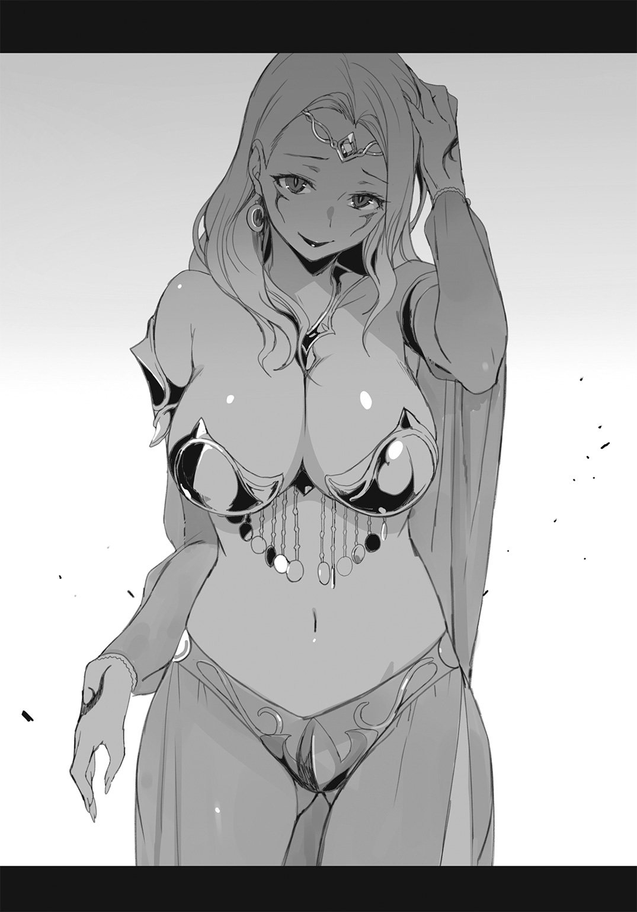
「............」
ぐっ、とオレは言葉に詰まっていた。
不死王が死ねば混乱が起こる。それは当然、そうだ。だがオレはそれでも不死王を斃すと決めていた。なぜなら、それは......。
なぜなら......。
「ねぇ......。生き方を変えてみる気はない？ ドーン」
囁くような蠱惑的な声で、フェリシテが言った。
「......何が言いたい？」
「こっちに移ってこない、って言っているの。あなたたちなら毒龍騎士にだってなれるわ」
「不死王に恭順しろ、とでも？」
オレは鼻で笑った。
だが、フェリシテは真摯な瞳でまっすぐにオレを見つめてくる。
「そう、その通りよ。不死王陛下に忠誠を誓い、新しい世界を築くための剣になるの。あたしと一緒に......。それはそれで、一つの結末じゃないかしら」
フェリシテは、恥じることはない、それは英断なのよ、と言い切った。
「不死王陛下は有能な者には寛大だし、降伏した者に疑いをかけることもないわ。なぜなら、あの御方には人の心が読めるのだから......。すべての裏切りを事前にご存じであるゆえに、疑うことなんてあり得ないの」
フェリシテの声は、安らぎと確信に満ちている。
「心から忠誠を誓えば、必ず聞き届けられる。それって、とても素晴らしいことだと思わない......？」
その言葉に、オレは不死王に従う者たちの幻想を見た。
永遠の、絶対的な支配者。〝闇の王〟......巨大な秩序に従うことの、快楽。
――わからないではない、とオレは思う。
抗い続けるのは苦しいものだ。この七年、オレはずっと苦しかった。楽になりたいという気持ちは、否定できないほどにある。
「ドーン......。あたしと一緒に、生きて」
フェリシテが手を差し伸べる。
「ドーン」
シメオンの強い視線が頰に突き刺さる。
「............」
オレはぎゅっと目をつぶり、見開いた。
「――断る」
「どうして？」
どうしてか。なぜなら......。
その言葉を探して、オレは深く自分の中に潜った。
恨み――怒り――憎悪――。燃えさかるような激情の向こうに、オレを真に突き動かす何かがある。正義――信仰――誇り――。
責任感――義務――約束――。
――愛せねえな――。
こめかみに甘い痛みのようなものを感じながら、オレは思い出す。
「......それは王権の象徴であると同時に、セレニアの平和の証だからだ......」
あの日、十歳になったばかりのオレに、父王が言った言葉だ。
「......おまえはこの鞘とともに、我が城の留守を預かれ......」
「......我らは剣を持って行き、持ち帰って、三本とも無事にこの鞘に戻す。きっと、必ず、そうするのだ。わかったな......」
その時と同じように、オレの手には聖剣の鞘が握られている。
そこだ、そこにこそあるのだ......と、オレの魂の深い部分が言っていた。
「......前言を撤回しよう、フェリシテ。オレはやはりまだ王子のようだ。オレが戦うのは、我が〝麗しきセレニア〟のためだ。オレにとっては、これは七年前からずっと続いている戦争なんだ」
「ドーン。あなたの国は、もうないのよ」
フェリシテがいたわるように言った。
「それでもだ。これは、オレとシメオン、たった二人だけの戦だ。オレたちが死なない限り、セレニアはまだ滅びない」
「それこそ、詭弁よ」
「かもしれん。だが、オレは諦めない」
あるいはそれはただの惰性なのかもしれない、とオレは自分を疑ってみた。七年間これと決めて続けてきたことを、覆すのがただ怖いのかもしれない。しかしそれでもオレには、不死王の手下となっている自分がまったく想像できなかった。
不死王を斃した後の自分がどうしているか、それもまた想像の埒外だ。
ならば、どちらがらしい生き方か、ということで決める他あるまい、と思った。
「オレは不死王を斃す。無理だと言われようと、馬鹿だと言われようと、斃すと言ったら、斃すのだ」
シメオンがくすりと笑う気配がした。
「それでこそ、ドーンだよ」
「......まったく。昔からどうしてそう、わからずやなのかしら」
フェリシテがため息をつく。
オレたちとフェリシテは決裂した。仕方がない。戦うだけだ。
フェリシテが誘うように手を掲げると、祭壇の陰から魔獣が姿を現した。
〝毒蛇の王〟――毒龍の眷属たる巨大な蛇。鶏のトサカと羽毛をそなえ、牙には手足を石のように麻痺させる強力な毒を持つ、危険な獣だ。
しかも、傀儡兵化されている。
「あーあ......。こうなるのが嫌だから逢いたくなかったの」
豪奢な金髪を指に巻き付けながら、フェリシテは言った。
「でも、不死王陛下の敵になるのなら殺すしかないのよね」
ヒュルリ、と口笛の音が響く。フェリシテはバシリスクを自在に操り、その羽毛に包まれた首元に跨がった。
「ごめんね、二人とも」
バシリスクが牙を剝きだし、身をくねらせて突進してくる。
オレは踏み込みながら聖剣を抜いた。〝クーガの指〟。こういうデカブツには〝冬薔薇〟を使いたいところだが、バシリスクの毒が厭らしい。間合いを取るために、蛇腹状に伸びる細剣を使った。
「フェリシテ......オレたちの邪魔をするな！」
刀身が波うち、切っ先が毒蛇の目を狙う。
だが、バシリスクは緩やかな動きでそれを躱した。
「ッ!?」
――なんだ!?
妙な違和感があった。少し頭を振り、オレは再度攻撃する。
バシリスクの横へ回り込み、〝クーガの指〟を引き戻して槍のように突いた。刀身をまっすぐにし、太い胴体を狙う。
体重を支えるその一点、方向転換の際に無防備になる箇所に――。
外した。
「なにッ？」
巨大な毒蛇が不自然なまでに身をくねらせて刃を避ける。バシリスクの鈍重な図体では、とうてい躱せないはずの一撃だった。なぜ？
おかしい。まただ、違和感が......なんだ、頭痛？
「くそッ」
左手で〝ピィアの守護剣〟を抜き、空中を駆けて飛びかかる。
バシリスクの背後に回り込んだ。
尾の先、胴上部に斬りつけ、あっさり躱される。
続けて、乗り手のフェリシテを狙う......と見せかけて、釣り針のように〝クーガの指〟を曲げ、毒蛇の頭を狙った。
フェリシテの口笛がヒュルリ、と響く。
バシリスクが即座に反転し、オレの身体を尾でなぎ払った。
「ぐっ!?」
土壁まではじき飛ばされ、したたかに背中を打つ。
そこへ、バシリスクの追撃。
毒液のしたたる牙が、オレの顔の間近まで迫った。とっさに横へ転がり、追撃を避ける。
と、一息つく間もなくさらに追撃。
毒牙がオレの逃げ場を先回りするように、次々と襲ってくる。
「チッ......！」
では、と思って逆に頭をかち割ってやろうと聖剣を繰り出したら、それは空振りさせられた。オレはたたらを踏んで立ち止まる。
――手強い。
いや、オレの調子が悪いのか......？
くそ、また頭痛だ。
「......疾風よ！」
シメオンが〝砕く拳の歌〟で風の弾丸を飛ばす。バシリスクが俊敏に避け――いや、むしろ余裕を持って躱している。軌道を読み切っているのか。
――読み切る......読む？
「まさか......」
オレは毒蛇の首元、その乗り手のほうに目を向けた。フェリシテの目が妖しく輝いている。
こめかみに鈍い痛みが走った。
「......ッ！ シメオン、〝搔き毟る歌〟だ！」
オレの声に反応して、すぐさまシメオンが曲を切り替える。
「......ィィィ......キキィィィ......!!」
奥歯をヤスリで削られているような、寒気のする不協和音が地下洞を走り抜けた。オレは顔を歪めながらそれに耐えきり、〝クーガの指〟を構える。
「......クッ......なに、この音!?」
フェリシテが耳を押さえて身をよじる。〝プシッ〟とバシリスクが警戒音を発した。
その瞬間、オレは馳せて切り込んだ。
鱗の隙間にねじ込むように、細剣の刃を突っ込む。護拳の歯車を回転させ、思い切り奥まで抉ってから、一気に引き抜いた。
――ブシュゥッ......！
真っ黒い〝不浄な血〟が、霧のように噴き出す。
バシリスクの頭がぐらりと揺れた。しかしフェリシテが口笛を吹くと、すぐさま持ち直して距離を取る。
......あの傷、普通なら仕留めているところだが、傀儡兵化の影響で異常なまでにしぶとくなっているのだ。
「やってくれたわね......」
強がるフェリシテを目がけて、オレは再度、蛇腹状の刀身を振るった。が、これはやすやすと回避される。
――やはり、そうか。
「フェリシテ。〝記憶を読む力〟を分与されているな」
「あら、ばれちゃった」
フェリシテが小さく舌を出した。その瞳がぼんやりと赤く輝いている。
「オレたちが行動しようとする、その一瞬前の記憶を読み取って、攻撃を予測しているんだろう。この〝頭痛〟が証拠だ」
オレはこめかみを指さした。この痛みには、オレは覚えがあるのだ。
とはいえ、〝皇帝廟〟での不死王の力は、もっと強烈な不快感を伴うものだった。まるで頭蓋骨の内側をまさぐられるような......。だがフェリシテのそれは、眼窩の奥に指をそっと沈めてくるような、繊細な痛みを伴っている。
「でも、それがわかったからってどうするの？」
フェリシテが妖艶に微笑む。
「あたしは、あなたたちのことなら昔から知っている。動きの癖も、性格も、とっさの行動も、少しの情報で簡単に読める......。だって、幼馴染みなんですもの」
胸に手を当てて、懐かしげに微笑むフェリシテ。
「だからあなたたちは、絶対にあたしに勝てない......！」
ヒュルリ、ヒュルリ。フェリシテは口笛を二度吹いた。
すると、神殿の入り口側――オレたちの背後からもう一匹の〝毒蛇の王〟が現れる。
フェリシテが真っ赤な舌をべろりと見せて言った。
「さあ、挟み撃ちよ」
オレとシメオンは、互いの背をつけるように立った。
「そう時間はかけられないな......。シメオン、〝搔き毟る歌〟はどのぐらい持続できる？」
「息が続くのはせいぜい十秒かな。あれは結構消耗するんだよ」
「そうか」
「それに、あんまり続けてやると耳が慣れてしまって、効果が薄れる」
「じゃあ、それはなしだ。シメオンは防御に専念してくれ」
オレは切り札を切る、とシメオンに告げた。
「切り札？ 確かにバシリスクは毒を持つ生物だけど......でも、あれは一度きりしか」
「〝毒龍を殺す毒〟じゃない。もう一つの方だ」
オレは鞘の蓋を開け、細剣と直剣を戻した。
そして代わりに、緩やかに湾曲した片刃の大剣を抜く。
新月刀――その銘は〝狼の絶望の剣〟。
剛剣〝冬薔薇〟と比しても遜色ないほどの、凄まじい迫力の剣だった。その刀身は異様に研ぎ澄まされ、冷気を発しているのではと感じるほどだ。
刃に対して柄の拵えは粗く、握りには革を巻いただけ。鍔はもともと存在せず、手の保護のため狐の毛皮を無造作に絡めてあった。
特徴的なのは剣の平で、どんな不可思議な金属を使っているものか、蛾の翅の紋のような――あるいは人の目にも似た紋様が、無数に浮き出している。
「......吼え猛れ、狼！」
オレは両手で柄を握り、全身のルーンを起動した。
刀身の不気味な紋様が淡く輝く。
〝狼の絶望の剣〟――それは太古、半人半獣の種族が両性具有の神に賜ったという狂乱の聖剣。剣自身が飽くなき殺意を持ち、使い手の身体を操って、血に飢えた殺戮の獣となさしめるという。
「......シュウゥゥゥゥウ......！」
オレは気息を整え、剣に意識を集中した。
眼前の毒蛇とフェリシテを、静かに睨み据える。
「......シャアァァァァァア......！」
すると、いつもとは逆に精神が拡散しはじめた。
自分から自分が離れていく。まるで意識だけが肉体を抜け出し、頭の上辺りから己のすることを見つめているような......奇妙な視点でものが見えはじめた。
――スッ、と唐突に剣が動く。
オレが動かそうと意識する前に、すでに剣閃が走っていた。バシリスクは反応できず、すっぱりと顔面を斬り裂かれる。
「......なっ!?」
フェリシテが驚愕の声を上げた。
おそらく、記憶を読む能力による予測ができなかったからだろう――頭の上のオレがそう考える間にも、〝狼の絶望の剣〟が毒蛇の胴を半ば近く切断している。
「――ギシャァァァァァッ！」
「......シュウウゥゥゥゥゥ......！」
斬ると思う前に、斬り始めている。肉体の後を追いかけて精神が移動していく。反射というでもない、痙攣でもない、ひとりでに身体が動く感覚――。
〝操られている〟というよりは、肉体が精神を追い越すのだ。思った通りに動くか、動いた後に思うか、その違い。
あるいは、それを〝本能〟とか〝野性〟と呼んでもいいだろう。
「......シャアァァァァァア......！」
剣が加速していく。肉体が精神を置いて先へ先へとかっ飛ぶ。次第にズレが酷くなる。引きずり回されるようだ。
逆袈裟に尾を斬り飛ばし、胴体を細切れに寸断する。真っ黒い返り血で視界が染まる。バシリスクの耳障りな絶叫。羽毛につかまって振り返るフェリシテ。そこへ飛び掛かる〝狼の絶望の剣〟。
フェリシテに垂直に迫る新月刀の刃を、オレは自分の背後から見下ろすように眺めていた。
「――ッッ！」
フェリシテが跳ぶ。空中に身を投げ出して回転し、そのまま高所でピタリと止まった。......浮遊能力だ。
斬り下ろした〝狼の絶望の剣〟が、毒蛇の巨体を頭から真っ二つに割り裂く。バシリスクは見事な断面を見せて地に倒れた。
「......シュウウゥゥゥゥゥ......！」
フェリシテが腰布をひらめかせて浮遊し、もう一匹の毒蛇の首元に跨がった。〝狼の絶望の剣〟の切っ先が、それを追って向きを変える。
「......シャアァァァァァア......！」
まさに聖剣に操られた狂戦士――だからこそ、フェリシテはその心を読むことができない。不死王から与えられた〝記憶を読む力〟は、剣を振るう人間には通じようが、人間を振るう聖剣には通じまい。
フェリシテが秀麗な口元を歪める。
「クッ......！ バシリスク、毒牙さえ当てればこっちのものよ！」
口笛で毒蛇を操り、けしかけてくる。バシリスクはゆらりと鎌首をもたげ、毒牙を剝き出した。
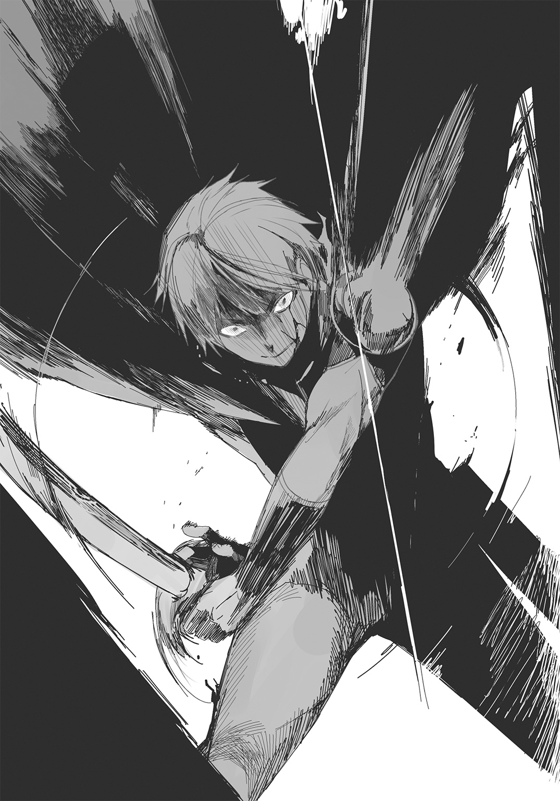
シャッ、と意表を突くすばやさで毒蛇が迫る。
オレの肉体が本能のままに飛び上がって避け、〝狼の絶望の剣〟を振りかざした。
そこへ、バシリスクの尾が跳ねた。フェリシテがヒュルリ、と口笛を吹くと、その太い尾がオレの身体に巻き付く。
「ッ!?」
一瞬、動きを止められたオレの肉体に、オレの精神が追いつく。胴をねじり上げられる痛み。ぬめっとした鱗の感触と、その下の強靱な筋肉の束を感じる。
「――かかったわね！」
フェリシテが快哉の叫びを上げ、毒牙を放った。
絡まれて動けないオレに向かって、大きく上下に開けたバシリスクの口が迫ってくる。人間の上半身を一呑みにできるほど巨大な口だ。濁った黄色をした毒液が牙からしたたっている。
「......シュウウゥゥゥゥゥ......！」
今にも牙の先端が触れようかという瞬間、剣が動いた。新月刀が凄まじい迅さで閃き、旋転する。
上半身の力だけで、下から掬い上げるような軌跡。
バシリスクの頭部が輪切りになって飛んだ。
「な......!?」
目の前でその光景を見たフェリシテが、絶句する。フェリシテの膝のすぐ先で、バシリスクの首が消失していた。
黒いドロリとした〝不浄な血〟をドバドバと噴き出させ、バシリスクが息絶える。
「......シャアァァァァァア......！」
宙を飛んだバシリスクの首を片手で捕まえ、フェリシテに投げつけた。
「――えっ!?」
あっけに取られた顔のまま、フェリシテは毒蛇の頭に激突され、弾き飛ばされる。頭だけのバシリスクの口に咥えられたような格好で、フェリシテは地面を転がっていった。
〝狼の絶望の剣〟が乱暴に蛇体を切り裂き、絡みつきをふりほどく。
「......シュウウゥゥゥゥゥ......！」
聖剣をぶら下げた狂戦士が、ゆっくりとフェリシテに近づいた。
フェリシテはあられもない格好で五体を投げ出している。その太股に、バシリスクの毒牙がざっくりと刺さっていた。
「ふ......ふふ」
フェリシテが笑い出した。
「く、くく......。ご、ごめんなさい、ちょっとツボに入っちゃって......ぷっ......ふふ......」
相変わらず、笑いのツボのよくわからない女だ。
オレは毒蛇の頭を蹴り飛ばし、新月刀を振り上げた。
フェリシテは、だらりと手足を垂らしたまま動かない。いや、動けないのだ。バシリスクの牙が刺さり、麻痺毒が回っている。
「ふ、ふふ......殺しなさいよ。面白いわ。まさか王女に生まれついたあたしが、こんなふうに死ぬなんて」
とろりとした冷たい目でオレを見上げるフェリシテ。
「......シャアァァァァァア......！」
一瞬、オレの脳裡にさまざまな思い出が蘇った。この少女を背に乗せて城の内庭を一周したこともある。「ねぇ、遊びましょ！」そう言って屈託無く笑っていたのを覚えている。婚約者だからと言ってやたらとベタベタくっついてきたような気がする......嫌じゃなかったが、その、なんだ。気恥ずかしかった。
――剣が動く。
オレの意思よりも早く、〝狼の絶望の剣〟がオレの身体を動かす。動いた後に思う......もう、間に合わない、と。
――ザシュ。
剣の手元で、刃が肉に食い込んだ。
「......シメオン!?」
フェリシテが驚愕して見上げる。
シメオンが、オレの腕に組み付いて剣を止めていた。新月刀の刃は、シメオンの肩に食い込んでいる。
「ドーン。やめてよ」
「......シュウウゥゥゥゥゥ......！」
〝狼の絶望の剣〟が、シメオンを敵と認識して切り裂こうとする。やめろ、とオレの意識は叫んだ。自分の肉体に意識を飛び込ませ、必死に剣を止めようとする。
「......シャアァァァァァア......！」
刃がさらに肉を抉った。シメオンの血が指に垂れてくる。
「ドーン......ドーンッ。やめてよっ！」
シメオンが腕にすがりつく。オレは剣を意識の方に引き戻そうとする。だめだ、取り戻せない。聖剣とオレの意識が拮抗している。
シメオンがきっとオレを睨んだ。
「............ィィィィ............アァァァオォォォン......」
――〝搔き毟る歌〟!?
その不快音を間近で受けたオレの身体が、一瞬すくんだ。その隙にオレは聖剣から制御を取り戻す。
その結果は、新月刀を取り落とす、という行動として現れた。
「......すまない、シメオン」
「............」
シメオンはほっとしたように笑い、首を振った。
「傷は深くない。早く行こう。不死王を斃すんだ」
「ああ」
〝狼の絶望の剣〟を慎重に鞘に戻し、シメオンの傷を簡単に手当てして、オレたちは奥へ進もうとした。祭壇の奥に、さらに地下へ通ずる階段がある。
「ちょっと......待ちなさいよ」
フェリシテが呼び止めた。
「どうしてあたしを殺さないの」
しどけない格好で倒れたまま、フェリシテは涙を浮かべていた。
「同情なの？ 可哀想とでも思っているの？ それとも、幼なじみの誼だとでも？」
それは何の涙なのだろう。悔しさなのか、屈辱なのか......それとも他の何かなのか。
「ああ」
オレは背中を向けたまま言った。
「多分、そうだ」
「後悔するわよ。後悔させてやる。あたしは〝毒龍の大祭司長〟、自らの国民を生贄に捧げ続けて生きてきた裏切りの女王よ。今殺さなきゃ、きっと後悔することになる」
「それでも、やっぱりキミはボクたちの幼馴染みなんだよ」
シメオンが言った。
オレはシメオンに肩を貸して階段を降りた。フェリシテはじっと天井を睨み続けていた。
もしかして止めない方がよかったかい、とシメオンが囁いた。
「......いや。ありがとう、シメオン。おまえがいてくれてよかった」
オレは心からそう言った。
「おまえという相棒がいなかったら、とてもオレはここまで来られなかっただろう」
「............」
シメオンは笑い、笑顔のままぽろりと涙をこぼした。
「ボクは、フェリシテのことが好きだったよ。今でも大好きだ。憧れだったんだ」
「ああ」
オレは頷いた。
「行こう。オレたちにはやるべきことがある」
シメオンが顔を強くこすり、きっぱりと頷いた。
この暗い階段の奥に不死王がいる。
決戦の時だ。
六章 最後の〝謎〟
――カツン。
――カツン、カツン。
静寂の中、オレとシメオンの靴音が響く。
不死王は祈りの言葉を止め、訝しげにこちらを見た。
「......何奴」
松明の灯りに、三人のザハリアーシュの姿が浮かび上がる。全員〝紫闇のローブ〟をまとい、腰に剣を佩いていた。
先程口を開いたのは、もっとも外側で儀式を見守っていた壮年の姿の不死王だ。
最深部の部屋の中央には、九本の腕を持つ異形の神・ペルネケスの像。その祭壇には息絶えた男女の遺体が、山と積み上げられている。
その神像の前で鮮血を弄び、祈禱する老人の姿の不死王が一人。
そして老人のすぐ横に、寝台が一つ。
寝台には少年の姿の不死王が、目をつぶって横たわっている。
すでにその胸からは〝スターチスの宝珠〟が外されており、台座だけがその首に掛かっていた。
外された宝珠は、老人の姿の不死王がその手に捧げ持っている。
その老人の首飾りにも、深紅に輝く宝珠が一つ。
――そうか。奴か。
あの老人の姿の不死王、その胸の〝スターチスの宝珠〟、その中にいる魂こそ......我が真の仇。
オレは左の手のひらに〝マグノリアの楔〟を握りしめた。
「ドーン、絶好機だ。まだ再充塡が終わっていない」
シメオンが呟くと、三人の不死王全員がハッと目を見開き、同時に睨んできた。
「なぜ知っている」
その瞬間、老人の双眸が赤く輝いた。
「ぐぅっ......!?」
シメオンがこめかみを押さえてくずおれる。
「まずい、記憶を......ドーンッ！」
「チィッ!?」
オレは右手で〝クーガの指〟を抜き、老人の姿の不死王に向けて振るった。だが壮年のザハリアーシュが剣を抜き、それを弾く。
しかも、やつが腰から抜いたのは――見覚えのある聖剣だった。
「〝勇気の剣〟......だと......!?」
我がセレニア王室に伝わっていた、三振りの両手剣。それも、クラウス兄が持っていたはずの......。
「なるほど。貴様、セレニア王家の生き残りか」
少年の姿の不死王が寝台から起き上がり、そう言った。老人から宝珠を受け取り、首飾りの台座にはめ直す。もっとも、そうしたところで使用不能には違いない。
「そういう経緯があったとはな。道理でしつこい......わけ......だ......」
その言葉尻が途中で消えた。
「――何ぃッ!?」
三人の不死王全員が、唐突にオレの左手を凝視する。
「マ......〝マグノリアの楔〟だと!? そんなものを......！ あの魔女めッ！」
老人の姿の不死王が吐き捨て、ギリリッと奥歯を嚙みしめる。
シメオンがふらりと立ち上がった。
「......ごめん、ドーン。ほとんど読まれちゃったみたいだ」
「問題ない。誰が本物かはわかった」
オレは老人の姿の不死王を指さす。
「おまえだ」
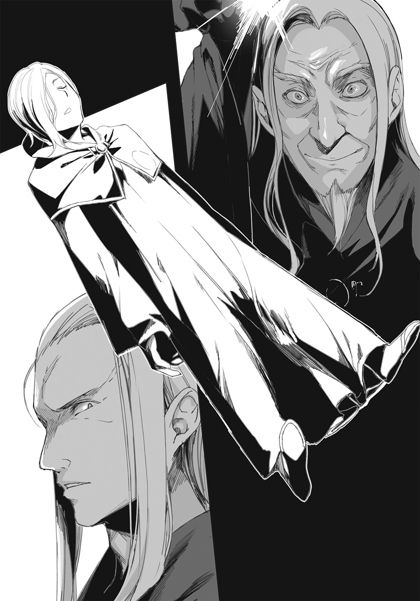
不死王ザハリアーシュの口元が、目に見えて引きつった。
ザハリアーシュの判断は早かった。即座に逃げを打ったのだ。
まず、三人の不死王は全力で〝腐蝕の激毒〟を放った。触れれば死に至る紫色の毒霧が怒濤のように噴き出し、部屋中に充満する。
「チッ......！」
オレは〝クーガの指〟を鞘に戻し、〝聖女ガリエルの宝剣〟を振るった。シメオンを背にかばい、視界を覆う毒煙を切り裂いていく。大波が船の舳先に当たって砕けるごとく、〝聖女ガリエルの宝剣〟が道を作り出した。
「行くぞ！」
オレは前へ脚を進める。その間にザハリアーシュは、部屋の奥の隠し扉を開けていた。上に通じる階段が見えている。
「逃がすかぁッ！」
両足に埋め込んだ〝シカのルーン〟を最大で起動し、毒煙を切り裂きながら突撃する。シメオンが必死にオレの背を追いかけ、不死王を指さして叫んだ。
「絶対に今しかない！ やれ、ドーンッ！」
「応ッ！」
オレとシメオンは毒煙の充満する地下室を抜け、階段を駆け上がった。三人の不死王は背を向け、空中を飛翔しながらわき目もふらずに上昇していく。
階段が途切れ、細い廊下に行き当たった。左右に伸びる廊下だ。
三人の不死王がそこで二手に分かれた。
少年と壮年の不死王が右へ。
老人の不死王が左へ。
「ドーン、本物を追って！」
無論だ。
オレは老人の不死王を追った。やつが本物の宝珠を持っているはずだ。
一方、シメオンは右の二人を追った。きっとオレの背後を守るためだろう。オレは相棒に感謝を捧げつつ、駆け足を速めた。
不死王が廊下を馳せる。
ローブの裾を振り乱し、大きく手足を振り、全力で逃げる。途中の扉を叩き開け、中で宴会を催していた連中をなぎ倒しながら疾走していく。
「待てッ、ザハリアーシュッ！」
「............ッ！」
不死王がバッと飛び上がり、反転して絶叫する。音の吐息――〝忌まわしき龍の咆哮〟だ。オレはとっさに、宴会部屋の壁際まで避けた。椅子とテーブルが砕け散り、牡蠣や仔牛のローストが乗った皿が粉々になって吹き飛ぶ。もちろん、それを食べていた人間たちもだ。
ザハリアーシュが風を巻いて翔ぶ。宴会部屋の端から端までを吹き飛ばし、奥の扉をくぐって逃げる。
オレはそれを追ってさらに駆けた。
〝聖女ガリエルの宝剣〟を鞘に戻し、〝ルーンの追跡手〟を飛ばす。
「くらえッ！」
短剣が不死王の頭をかすめる。黒い血がしぶいた。
「ぬぅ......ッ！」
不死王が脚をもつれさせながら、窓に身を投げた。鎧戸を突き破って外に飛び出し、浮遊能力で上へ。
オレは〝ピィアの守護剣〟を抜き、さらに追う。
不死王は、城の白い外壁を走っていた。オレもまた浮遊能力で壁に足をつけ、その背を狙う。〝ルーンの追跡手〟を操り、再び投射した。
短剣がひとりでに宙を舞い、ザハリアーシュを攻撃する。
不死王が振り向き、左手でそれを受け止めた。
ザックリと刃が突き刺さる。
「ぐぬぅ......！」
だが致命傷にはほど遠い。宝珠を狙わなければ。
オレは壁を疾走し、二階、三階を通過して不死王に迫った。
ザハリアーシュがさらに上階、塔の窓に飛び込む。
オレもまた、城塔の窓に突入した。
塔の中に降り立つ。
そこには奇妙な――しかし既視感のある光景が待っていた。
「これは......複製体？」
円形の塔の内側に立ち並ぶ、透明な棺。その中に、さまざまな年齢のザハリアーシュが全裸で眠っていた。
「どこへ......行った？」
オレは不死王を探す。
――カラン、と音がした。
振り向くと、一つの棺が空になっている。
「............？」
オレが訝しげにそれを見つめた、瞬間。
背後から、ドス黒い紫色の毒霧が降り注ぐ！
「――クソッ」
オレは〝守護剣〟をその場に突き立て、〝聖女ガリエルの宝剣〟を抜いた。宝剣の清らかな白光で毒煙を斬り払う。
そして宝剣を宙に投げ上げると、〝冬薔薇〟を抜いて回転、周囲の棺すべてを十字剣で薙ぎ払った。
――ガガガガガガガガッ！
透明な棺が砕け、ザハリアーシュの複製体が刃に引きちぎられていく。
一周、斬り払って沈黙が落ちた。
「............」
長剣を受け止める。塔の小部屋は撹拌されたようにめちゃくちゃだ。透明な破片と真っ黒な血が、壁といい床といい、部屋中を汚し尽くしている。動いているものは何も目に映らない。
――だが。
「......ッッ！」
頭上から殺気。透明な敵が、〝ルーンの追跡手〟をかざして降ってくる。オレは十字剣の重さで短剣をはじき飛ばし、左手に握っていた必殺の一撃を繰り出した。
〝マグノリアの楔〟。
「チィ......！」
惜しいところだった。間一髪、不死王が体術でその突きを捌いた。オレの左腕を抱え込み、折ろうとしてくる。
――舐めるな！
オレは〝熊のルーン〟を全力で起動し、不死王を振り飛ばした。
城塔の鎧戸を突き破って、不死王は内庭へ落ちていく。オレもまた聖剣を回収し、塔を飛び出した。〝ピィアの守護剣〟が呼ぶ風に乗って、オレはザハリアーシュと宝珠を追う。
オレが内庭に降り立つと、そこにはいつの間にか、三人の不死王が揃っていた。
シメオンが駆け寄ってくる。
「ドーン！ 無事だったかい」
「それはこっちの台詞だ」
オレはシメオンの様子を確認した。多少息が乱れているが、負傷はしていない。肩の怪我はオレの〝狼の絶望の剣〟によるものだろう。
「さあ、大詰めだよ」
三人のザハリアーシュが、それぞれ同じ形の聖剣を構えていた。〝智の剣〟、〝愛の剣〟、〝勇気の剣〟――セレニア王家に伝わる三振りの剣。それが今は、憎き征服者の手に握られている。
オレは右手に〝ピィアの守護剣〟、左手に〝マグノリアの楔〟を構え、不死王たちと対峙した。
「観念しろ、ザハリアーシュ。おまえの永遠の命は今ここで尽きる」
「ふ......」
不死王が嗤った。
老人の姿の不死王が踏みだし、聖剣を構えた。その柄には翠玉の飾りが嵌まっている。
「やってみるがいい、聖剣使い。貴様の剣で余が斃せるか、否か」
逃げも隠れもしない――そう告げるかのような態度だった。
ふと、引っかかりを覚える。
ここで勝負をかけるならば、なぜ逃げた......？
何か狙いがあるのか。
「............」
オレはじっと不死王を観察する。その胸の宝珠。首飾り。ローブに記された皇帝のルーン......。
「どうした？ かかってこぬか」
老人の姿の不死王が、片手をぶらぶらさせて挑発してくる。両脇の壮年と少年の姿の不死王が、間合いを計るかのように剣を揺らしていた。
「シメオン」
「どうしたの、ドーン？」
「――おかしい」
オレは三人の不死王を見比べて言った。
「妙だ。これは奴の罠だ」
「どうして？ 何もおかしなことなんか............あれ？」
シメオンが呟いた。
「どうして三人とも首飾りを――いや、でも」
そうだ。シメオンの言うとおり、今は三人とも首飾りをしていた。同じ首飾りだ......しかし、ウージェーヌによれば〝スターチスの宝珠〟はこの世に二つしか存在しないはず。
「なら、一つはただの贋作だ。はったりに過ぎないよ。どれが本物かはボクたちにはもうわかってる。老人の姿の不死王――それに間違いない」
「そうかもしれんな」
三人の不死王が、揃ってニヤリと嗤う。
「試してみるがいい。その小賢しい作戦で、余が斃せるかどうか......」
不気味な気配が漂っていた。なんだ？ なんなんだ、この嫌な予感は......。
オレはギリリ、と奥歯を嚙む。
「それだけじゃない、シメオン。他にも色々と妙なことがある。まず、どうしてあいつは怪我をしていない？」
オレはここに来る途中、〝ルーンの追跡手〟で傷を負わせたはず。頭にも、それから左手にも......。なのに、あの老人の姿の不死王には一つも怪我がない。
それどころか、三人全員が完全に無傷なのだ。
「それは......そうだとしたら確かに変だけど――」
「〝勇気の剣〟......」
「えっ？」
シメオンがオレの呟きを聞き返す。
「あれは、〝勇気の剣〟だ」
オレは老人の不死王の持つ聖剣を睨んだ。
「柄に翠玉が嵌まっている。あれは最前、地下にいたときは、壮年の姿の不死王が持っていたはずだ。シメオン、奴らが剣を取り替えるところを見たか？」
「......。いや」
「オレも見ていない」
ということは、とシメオンが声を低くした。
「――入れ替わっている？」
オレは頷いた。
不死王たちがすっと笑みを消す。
「でも、いつ？ 入れ替わっているとしたら、いつ入れ替わったの？ そんな機会はなかったはずだ」
シメオンが焦ったように呟く。
オレはシメオンに訊いた。
「シメオン、ここまで来るまでに何があった？」
「何が、って......」
シメオンは戸惑ったように言った。
「階段のところで別れた後のことだ」
「他の二人の不死王を追いかけたよ。でも、向こうはこっちに構わずどんどん逃げるから、ひたすら走って追いかけたんだ」
「どういう経路を通った？」
「細かいところは思い出せないけど、一階をぐるっと一周する感じかな。それから内庭に逃げ込んだ」
「二人の不死王はずっと一緒だったのか？ 二手に分かれたりはしていないんだな？」
「うん。背中を見失ってもいないよ。ボクには〝精霊の目〟があるからね」
「ならば、確かに入れ替わる機会はない」
オレは三人のザハリアーシュに順番に目をやった。
老人の姿の不死王。
壮年の姿の不死王。
少年の姿の不死王。
同じ聖剣とローブと首飾り――。
だが、本物はたった一人。
いったい、誰が――。
「誰が本物なんだ......？」
ザハリアーシュが嗤った。
「くっくっく......。わからぬだろうよ。貴様になど」
三人の不死王が三人とも、一様に同じ表情を浮かべる。嘲笑だ。
「何もわからぬままに死んでいけ。貴様等ごときが我が〝永遠〟に挑戦するなど、身の程を知るがいい......」
オレは不審を覚えた。
「何を焦っている、ザハリアーシュ」
「焦る......だと？ 余が？」
「そうだ。なぜそんなに余裕を無くしている。いかにも、この〝マグノリアの楔〟を無駄撃ちさせたそうな様子じゃないか」
不死王の口元がヒクッ、ヒクッ、と引き攣った。
「こんなにひりつく状況は、ここ百年ばかりはなかったか？ そうだろうな。貴様はしばらく、命のやりとりなどというものはしていないはずだ」
「............」
不死王が黙り込む。
「シメオン。今、オレは確信した。この〝謎〟は解ける」
「.........解ける？」
「オレとシメオンが現在持っている情報だけで、この状況は説明できるんだ。やつ自身の態度がそう言っている」
ザハリアーシュはシメオンの記憶を読んだ。ということはつまり、オレたちがどの程度の情報を持っているかも知っているはずだ。その上で、やつは解かれるかもしれないと怖れている。
そうでなければ、不死王に焦る必要はない。
もしこの〝謎〟が解かれれば、〝マグノリアの楔〟で殺される可能性がある。奴が怖れるとしたら、その事態だけだ。
「解けるか？ シメオン」
「......わからない」
青ざめた声でシメオンが答えた。
「やってみるがいい。できるものなら」
不死王が引き攣った顔のまま嘲笑う。
「この謎を解いてみろ。余を殺すにはどうすればいいか......どの余が本物なのか。当ててみせるがいい」
† † †
シメオンが首を横に振りながら言った。
「だめだよ......ボクにはわからない」
「頼む！ シメオン、何か、何かないのか！」
シメオンが唇を湿しながら言う。
「いろんな可能性を考えてみた。例えば、不死王は物品を瞬間移動させる力があるのかもしれない」
違う。そうじゃない。
「聖剣の宝石の色を変えるだけならいくらでも方法がある。何か細工をしたのかもしれない。傷がないのは、急速に治癒する能力を隠し持っていたのかもしれない」
「そんなものはない。ないはずだ」
「ボクが知らないうちに壁抜けして、少年か壮年のどちらかが、塔の上の複製体と入れ替わっていたのかもしれない」
違う。不死王に壁抜けができるような能力はないはずだ。
「それとも、何？ ボクが噓をついているとでも、ドーンは言うのッ!?」
「そうじゃない！」
オレはシメオンに叫び返した。
「くっくっく......無様な。もう諦めろ」
不死王がゆらりと剣を構える。三本の聖剣が、オレとシメオンを取り囲むように動いた。
「諦めるな。あるはずだ。必ず。真実を見極める方法が」
「わからない......わからないよ！」
シメオンがガチガチと歯を鳴らす。
「ご、ご、ごめん......ぼ、ボク......。ドーン、怖いんだ」
「大丈夫だ」
オレはシメオンに微笑んで見せた。
「オレが推理してみせる。シメオン、何か手がかりを言え」
「えっ？ 手がかり......？」
「なんでもいい。考える材料だ」
「材料......重要な要素。今回の謎、いや、むしろ不死王の能力全体の......」
シメオンがぶつぶつと呟く。
「毒。毒で死なない。不死身。毒を吐く。紫闇のローブ。三本の聖剣。咆哮。宙を飛ぶ。記憶を読む。暗闇でもものが見える。背後も見える。寿命がない。三人いる。影武者。複製体。死んでも精神が乗り移って蘇る。皇帝廟。透明化」
「まだだ！」
壮年のザハリアーシュが斬りかかってくる。同時に、逆側から少年と老人のザハリアーシュも。オレは〝ピィアの守護剣〟と、〝アルマジロのルーン〟で硬化した手の甲でそれらを打ち払う。
「透明化......入れ替わる。そうかもしれん」
あのとき、あの塔の上で、オレは不死王の姿をはっきりとは確認していない。奴は透明化していた。その時点で複製体と入れ替わったのかもしれない。
「だが、まだ足りない。シメオン！」
シメオンが目をつぶり、必死に頭を働かせて言葉を紡ぎ出す。
「傀儡兵。死霊術。骨の木。宝珠。ウージェーヌ＝ラキス。三人は意思が統一されている。楔。三択。オレンジとオリーブ。白い帽子の少女。銀色の腕輪」
......何？
今、なんと言った？
「シメオン、今の言葉を繰り返せ」
「え？ どれ？」
オレは三人の不死王と剣で渡り合いながら叫んだ。
「最後の言葉だ！」
「白い帽子の少女......？」
「違う！」
「銀色の腕輪！」
「――それだ」
腕輪。なぜかずっと気になっていた。
ウージェーヌは、あの腕輪は複製体の劣化を防ぐためのものだと言ったはずだ。あの腕輪を外した途端、白い帽子の少女はみるみるうちに老化して息絶えた。
つまり、腕輪を外せば複製体は老化するのだ。
「......っ！ そうか、もしかして不死王も」
「そうだ、シメオン」
「待てよ......ちょっとまってくれ。じゃあ、ボクが追いかけていた最中に、少年と壮年の不死王は、こっそりと腕輪を外した......」
「そして、老人の不死王はあのとき、塔の上で少年の姿の複製体と入れ替わった」
だから老人の姿の不死王には傷がない。それは本来シメオンが追いかけていた、壮年の不死王だったからだ。
もちろん、入れ替わったばかりの少年の不死王も負傷していない。元々の身体は、おそらくあの塔の上の瓦礫の中に紛れているのだろう。
〝勇気の剣〟は、そもそも入れ替わっていない。それぞれの剣はずっと同じ人物が持っていた。ただ、その姿の方が、壮年から老人へ、少年から壮年へ、老人から少年へと変化していたのだ。
「そうか......服装がゆったりとしたローブだったからこそ、体型をごまかすことができた......」
「そういうことだ。そして今、本物の宝珠を持っているのは」
――少年の姿の不死王。
「おまえだ」
「ぐっ......!?」
オレは〝ピィアの守護剣〟の力で高く跳び上がり、少年の不死王の背後を取った。
少年の不死王がとっさに反転して、両手剣を薙ぐ。
ぶん、と大きく振り回した刃の先に、オレはいなかった。
その瞬間、オレは大きく踏み込んで、不死王の懐に入り込んでいたのだ。
「しまっ......」
不死王の目が驚愕に見開かれる。
オレの左手の〝楔〟が、その胸に吸い込まれるような軌道で突き刺さった。
〝スターチスの宝珠〟――。
その深紅の球体の上で、虹色の魔力をまき散らしながら、〝マグノリアの楔〟が回転していく。
「あ......ぁあ......。オオオオオオオオオオオオオッ！ アアアアアアアアウウウウウウウウウウウオオオオオオオオオオオオオオアアアアアアアアアアアアアアんんんんんんんんんんがあああああああああああああァァァァァああああっっッッ」
ザハリアーシュの三つの絶叫が、天を揺らした。
肉体を持ったまま宝珠を破壊されると、凄まじい苦痛が襲う......ウージェーヌがそんなことを言っていた気がする。
「............ア......アァ............ァ............」
――パキパキパキ......。
――カシャン。
宝珠が砂と崩れ落ちた。
それと間もなく、不死王の三つの肉体がドロリと溶け崩れる。
「............」
オレは三つの黒い水たまりを......風に吹き流される深紅の宝珠の残骸を見つめた。
「斃した、のか」
「......。ああ、そうだよ」
シメオンが言った。
「ボクたちは、不死王ザハリアーシュを斃したんだ」
信じられなかった。終わってみればあっけない......そんな感慨に囚われる。
本当に斃したのか？ 本当に？
まだ、何の実感も湧いてこない。大きな事が終わった瞬間は、そんなものなのだろうか。
「は、はは......やったのか」
「そうだよ、やったんだよ」
そう言うシメオンも、ぼんやりとした顔だ。オレは力が抜けそうになって、その場にへたり込んだ。
「これで......やっと」
――そう言った瞬間だった。
ズズズズズ、と地鳴りが突如響いてくる。
「なんだッ!?」
オレとシメオンは、瞬時に飛び跳ねて戦闘態勢を取った。
――ォォォォォン......
下腹に重く響いてくる、怖ろしい咆哮。
これは......オレはこれを知っている。毒龍の咆哮だ。
「毒龍......だと？」
バサッ、という羽ばたきの音に、オレは天を見上げた。空が......昏い。蒼穹を覆い尽くして、龍の翼が頭上にひらめいていた。
「まさか......グウェヌイン!?」
シメオンが叫ぶ。
そいつは、王城の白い塔に絡みついていた。
彫像と見えたその皮膚の表面から、パラパラと小石が崩れていく。巨大な......生物としてはあまりにも巨大な、黒い龍。
――ォォォォォン......
「ふっ......はははは！ ははははは！」
オレは思わず笑った。
「そうか、そこにいたのか。最初からずっと。七年前の、あの日から」
「ドーン......？」
シメオンが心配げに呟く。オレは笑顔を見せた。不思議と心は穏やかだった。
「小さき人間ども」
高空を飛ぶ毒龍グウェヌインが言った。
「よくも、我が現し身を滅ぼしてくれたな。死を持って償え」
「それはこっちの台詞だ」
オレは毒龍に向かって吐き捨てた。
「よくもオレの国を滅ぼしてくれたな。命で支払ってもらうぞ」
「卑小な人間如きが。我は龍。毒龍グウェヌインなり。人の身で龍を殺すなど不可能」
「はっ。言いやがったな」
オレは奥歯をギリッと嚙みしめ、凶暴な笑みを浮かべた。〝ピィアの守護剣〟の力で飛翔する。
龍の顎がカッと開き、吐息を噴射した。毒煙の吐息――だが、そんなものは見飽きている。
「〝聖女ガリエルの宝剣〟」
逆手で抜いた刃のない長剣で、容易く切り裂いて空中を突き進む。
「それだけか？ 芸がないぞ、毒龍」
長剣を仕舞い、機械式の細剣を抜く。〝クーガの指〟。蛇腹式の刀身をしならせ、鞭のように振るった。
翼を貫かれ、グウェヌインが驚愕する。
「ッッ!? この......人間......ッ！」
龍がその長大な尾をなぎ払った。どうしようもない巨大さと迅さ。避ける暇などありはしない。
――だが。
「まだだ......」
オレはその尾に、十字剣を突き立てていた。
〝冬薔薇〟――龍の鱗さえ貫くという売り文句は、まったく伊達ではなかった。事実、毒龍の鱗をやすやすと貫いて深い傷を与えている。
オレはその柄にしがみついて、跳ね飛ばされるのを防いでいた。
「人間め......人間めがっ！」
「そうとも、龍よ」
オレは〝冬薔薇〟から手を離し、跳んだ。
「これが人間だ」
空中を馳せるオレを、グウェヌインの牙が狙う。オレはその喉へ突っ込むと見せかけて、くるりと避けた。
毒龍の牙が、ガチンと空を嚙む。
「さあ、覚悟しろ毒龍」
オレはグウェヌインの顔の上に立っていた。龍の憎しみに満ちた双眸が、オレを灼き焦がさんばかりに射貫く。
〝ロゾヴィックの自在鞘〟の蓋を開けた。
オレの左手が、ゆっくりと聖剣を抜く。
形状は何の変哲もない長剣。だがその刀身は、玄妙な薄緑色に輝いている。
〝毒龍を殺す毒〟。
「――今こそ、我が復讐の時」
オレはその切っ先を、まっすぐに毒龍の目に突き入れた。
『不死王殺し 英雄はいかにして不死身の王を倒すのか』 ――終――
あとがき
ご挨拶、三国陣です。初めましての方は初めまして、お得意様の向きには毎度ご贔屓に。今回は新作『不死王殺し』、不可能と謎に挑む英雄譚をお届けします。
前作『偽神戦記』をご存じの方には、少々にやっとしていただける小ネタも差し挟んでおりますが、基本的には独立したお話でございますので、未読の方もご安心下さい。
なんと、今回は頁をもらって巻末に掌編もついております！ お買い得！
さて、今回の飯の話ですが、チーズの話など少々。作中に〝酒に漬け込んで云々〟などという描写が出てくるのですが、これをウォッシュチーズというそうで。癖はありますが大変美味しいものです。山羊乳のチーズ、これは好き嫌いはありましょうが、私はとても好きです。熟成度合いによって呼び方が色々ありまして、私は栗っぽい状態になった三段階目ぐらいが......ああ、今回はあまりに紙幅が足りない。チーズの沼は深すぎる......。燻製の話もしたかったのに......。
この本に携わってくださった諸氏と読者様に感謝と再開の祈りを捧げつつ。報謝！
三国陣 拝
別章 聖剣縁起 毒龍を殺す毒
鍛冶師ダビドは厄介な顧客を持っていた。その名は、ドーン。とてつもなく頑なな決意をもって、無茶な注文をごり押ししてくる若造の戦士だ。
「聖剣を作ってほしい。毒龍グウェヌインを殺せる剣を」
――馬鹿か、帰れ。
ダビドは再三、ドーンを追い払った。殴りつけて外に捨てたことさえある。
ドーンはそれでも諦めなかった。何度も何度もやってきては、頭を下げてダビドに頼み込んだ。贈り物で攻めてきたり、座り込みもした。己の復讐の理由も語ったし、悔し涙を流して泣き落としにも来た。
「頼む！ あんたしかいないんだ。聖剣を鍛えられるほどの天才鍛冶師は！」
が、いかに煽てられようと、泣こうと吼えようと、ダビドは心変わりしなかった。
「儂には聖剣は鍛てない。帰れ」
「なぜだ!? できるはずだ。だって、この〝ルーンの追跡手〟はあんたの作品だろう!?」
ドーンは短剣を抜いてかざして見せた。
――そうか、この若造、あの気難しい剣を従わせたのか。
聖剣は持ち主を選ぶ。〝ルーンの追跡手〟が認めたとなれば、技倆は証明されたと同じだ。
しかしダビドは、やはり首を振った。
「それでも、毒龍を殺すような剣は作れん。不可能だ」
不可能、という言葉を聞いたとき、ドーンという名の若造は、くっと唇の端をあげ、挑戦的な笑みを作った。
「試してもみずに、不可能などとは言えない」
「......試すことができないから不可能なのだ」
実を言えば、ダビドには毒龍を殺すための武器について、腹案があった。最初にその無茶な注文を耳にしたときから、〝もし作るならどういった剣にするか......〟と考え始めてしまっていたのだ。凄い剣を作りたい、というのは鍛冶師の本能であったし、ダビドもまたその性質を持っていた。そうして、鍛冶師としての経験と知識を総動員し、〝こうすればできる〟という一つの結論に行き着いたのだが......。
「材料が手に入らん」
「何が必要なんだ。教えてくれ」
「......まず、〝生きている岩石〟だ。それも二十個は要る」
〝生きている岩石〟とは、岩石獣という獣の頭部にコブのように生えている奇妙な石のことだ。常に温かく、靱性を持ち、聖水をよく吸収する。生物と岩石の両方の性質を持つがゆえに、聖剣・魔剣の優秀な素材となるのだ。
だが、〝生きている岩石〟は、滅多に市場には出回らない。
なぜかと言えば、一つには岩石獣はナターヴィル山脈の奥地にだけすむ珍しい獣で、そもそも数が少ないから。さらには、岩石獣はシカに似た姿をしているが、巨大かつ全身が岩石でできていて、怒らせると手がつけられない危険な存在だからだ。
それも、頭に生えている〝生きている岩石〟を触ろうとすると、岩石獣は激怒するのだという。一説によると、〝生きている岩石〟は群れの地位を示す重要な生体器官であるらしい。
「それだけではない。岩石獣は周囲の岩石と同化する能力を持ち、すぐに岩の中に潜って逃げてしまう。とても賢く、人間の言葉を理解するとか、人の顔や匂いを覚えるという話もある」
「ふむ......」
ドーンは神妙な顔で聞いている。
「おまけに岩石の体は硬く、普通の剣では刃が通らん。酸を浴びせれば簡単に死ぬという話だがな......殺してしまうと、〝生きている岩石〟は価値を失ってしまうのだ。岩石獣が生きた状態のまま切り落として、初めて良い状態のものが手に入る」
それはつまり、猛烈に暴れる岩石獣を縛り付け、あるいは死なないように加減して動きを止め、命が尽きる前に石材用の鋸などで切り落とす、ということだ。
そうして手に入るのは一個だけ。
しかも、匂いを覚えた他の岩石獣たちは、二度と狩り手に近づかないだろう。
「〝生きている岩石〟を二十個というのが、どれほど不可能なことかわかったか？」
ダビドが嚙んで含めるように言うと、ドーンは頷いた。
「ああ。難しいが、無理ではないらしい」
――わかってねえぞこいつ。
ダビドがあんぐりと口を開けていると、ドーンは踵を返して戸口を出て行った。
「では、取ってくる」
と言い残して。
「ま、待て！」
「......？」
行くな、危険だぞ、と言おうとしたが、ダビデはそう言ってもドーンが諦めないことを知っていた。何しろ、しつこさだけは大陸一というぐらいの根性だ。
「ナターヴィル山脈には酸の吐息を噴く飛龍がいる。近づくのはやめておけ」
「......ありがとう、ダビド。あんたは最高だ」
ドーンは笑って手を振り、去っていった。
ああ、あの若造は死んだに違いない――ダビデはそう確信していた。
だが、ドーンは数ヶ月後、帰ってきた。
しかも宣言通りに〝生きている岩石〟を手に入れて。
「......いったい、どうやったのだ」
ダビドはズダ袋に適当に詰め込まれた貴重な素材を卓上に並べ、呆然と呟く。
数を数えた。......十八、十九、二十。ぴったり二十個だ。
「信じられん。だが、どれも本物だ......。教えてくれ、どうやってこれを手に入れた？」
「頼んだだけだ」
ドーンは平然と言った。
「言葉が通じるというので、辛抱強く話した」
ドーンによれば、岩石獣は人語を操ることができるらしい。発声器官のせいか、聞き取りづらく唸るような声で、しかもゆっくりゆっくりと、常人の十倍くらい遅い速度で喋るという。だからそれが言葉だとは気づきにくいのだ。
「話してみると、冗談が好きで気のいい連中だった。〝生きている岩石〟は雄にしかなくて、十年ぐらいで生え替わるらしいぞ」
ドーンは丸二日くらいの時間をかけて、岩石獣の群れの長と交渉し、酸を吐く飛龍を一匹倒すごとに一つ、〝生きている岩石〟をくれるという話をまとめたという。
「飛龍は岩石獣たちの天敵らしくてな。困っているというので、それならと飛龍の巣穴に行って、二十匹討伐してきた。なかなかに大変だった」
なかなか、という程度の話ではないだろう。ダビドは岩石獣たちが仰天する顔を思い浮かべようとしたが、さすがに無理だった。表情がわからん。
「さあ、これで剣を作ってくれるんだろう」
と、嬉しそうに笑うドーン。
だがダビドは、また首を横に振った。
「いいや。まだ、必要な素材があるのだ。年に一度しか地上に降りない雷鳴鳥の羽、それに二千頭に一頭しかいない黄金の鯨の龍涎香、それから......」
ドーンはほんの一瞬、〝勘弁してくれ〟という顔をした。それでもなお、諦めはしなかったが。
『聖剣縁起・毒龍を殺す毒〟』終
著者紹介
三国 陣 みくに じん
今、勢いに乗っていると言われたい願望はある流浪の小説書き。北海道出身。
確かめてないけど、たぶん不死身ではない。
illustration
笹森トモエ ささもり ともえ
ここのコメントの内容を考えつかないままはや３日......。
ライブＭＣで無難なことしか言わないアーティストの気持ちがわかります。
みんなありがとー！
ダッシュエックス文庫DIGITAL
不死王殺し
英雄はいかにして不死身の王を倒すのか
著者 三国 陣
© JIN MIKUNI 2016
２０１６年３月31日発行
この電子書籍は、ダッシュエックス文庫「不死王殺し 英雄はいかにして不死身の王を倒すのか」
２０１６年２月29日発行の第１刷を底本としています。
発行者 鈴木晴彦
発行所 株式会社 集英社
〒１０１－８０５０
東京都千代田区一ツ橋２丁目５番10号
０３－３２３０－６０８０（読者係）
編集協力 森山修平
制作所 株式会社ＩＣＥ
本作品の全部また一部を無断で複製、転載、改竄、インターネット上に掲載すること、および有償無償に関わらず、本データを第三者に譲渡することを禁じます。なお個人利用の目的であっても、コピーガードを解除しての複製は、法律で禁じられています。